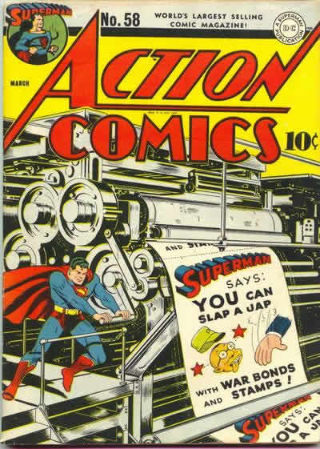
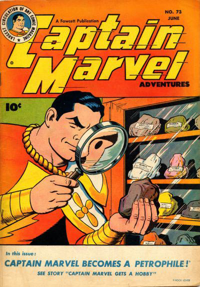
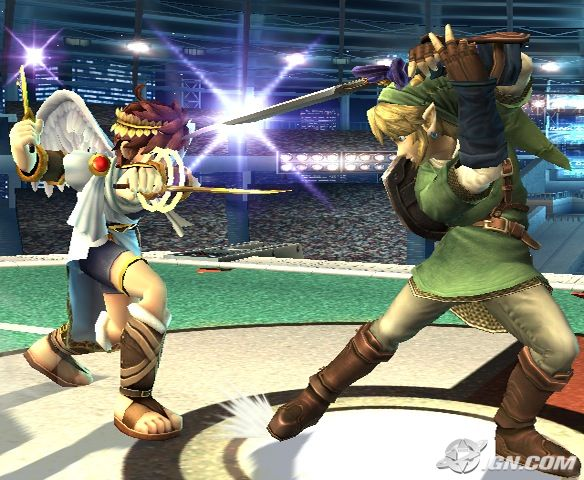

I'm in. Although, I'm not sure wich map I want to submit(choices, choices!)
. Oh, I know! This one has been sniped, so that's why it's only a 3.
http://numa.notdot.net/map/76656
. Oh, I know! This one has been sniped, so that's why it's only a 3.
http://numa.notdot.net/map/76656
Yes, I know. but since maps are rated too high, it doesn't seem so great anymore. I was snip'd though.
Okay, basically, we are going to tell a story. Only 3 words at a time. It can be about anything, but you are not allowed to double post, although you can post as many times as you want.
I'll start!
Once there was
I'll start!
Once there was
33 is my favorite number!
Who got pwn't
 naw I'm being reasonable
naw I'm being reasonable
naw I'm being reasonablegranted, but you don't have spacebar on your keyboard anymore.
I want a mother f***ing pony!
I want a mother f***ing pony!

The word pony is BANNED! No more freaking ponies, retarded emus or eagle raping donkeys.
* Ahem. *
. Then the yogurt
* Ahem. *
. Then the yogurt
ZOMG WTF U SPELLED MY NAME SMOOT in the first post! 

 I could have pmed you but where's the fun in that?
I could have pmed you but where's the fun in that?
I could have pmed you but where's the fun in that?Then the yogurt ate a watermelon while the pony terminator
said the terminator
replied the yogurt
granted, so your wish never was granted.
I wish I was an only child
I wish I was an only child
It still hasn't been fix. I demand now that the pack be renamed the smort pack. lol... seriously. fix it.
EDIT
Thank you.
EDIT
Thank you.
the omnipotent donkey
Brandon?
you messing with me?

no more ponies.
wait... those are my 3 words!
no more ponies
no more ponies.
wait... those are my 3 words!
no more ponies
with no head.
whilst small bananas
and sometimes danced
That sig is so effing sweet! 7/ 10
^ t3h_focs.an8
we should have a game where you name the file extension of the person above you! that would be so sweet! I will love you forever if you can tell me what the file extension is.
we should have a game where you name the file extension of the person above you! that would be so sweet! I will love you forever if you can tell me what the file extension is.
^likes my comics! And a ninja with arrows would pwn.
8/10
freakin animated kitten bread!
freakin animated kitten bread!

Man this is an old one...
Granted, but it's so glitchy it immediately kills your computer and entire family :'(
I wish for /her/.
I wish for /her/.
<random person joins the game>wrong! ummmmm...... kirby? clifty?</random person joins the game>
I'd like to read you all a little poem I wrote now.
*ahem.*
There once was a miner named Dave
Who kept a dead whore in a cave.
She was ugly as $#!%
And was missing one t*t
But think of the money he'd save.
O_o I'm a freakin' mastermind.
*ahem.*
There once was a miner named Dave
Who kept a dead whore in a cave.
She was ugly as $#!%
And was missing one t*t
But think of the money he'd save.
O_o I'm a freakin' mastermind.
Happy birthday Maestro! 15? O_o are you joking me? And I thought you would look more like this...

leave me alone! I couldn't find a pic of a wise old man.
leave me alone! I couldn't find a pic of a wise old man.
8^|=
sooo... trippy....
8/10
and a cookie!
8/10
and a cookie!
I'm thinking of kirby's adventure for NES! my parents are cheep. when gamecube came out, they finally got me an N64. Who knows when I'll get a wii...
www.planeshift.it
O_O when did I copy that? Oh, well. It's a fun game.
O_O when did I copy that? Oh, well. It's a fun game.
granted, but then no one knows how to corrupt it, so in reality, I never posted this, so I never granted/ corrupted your wish, causing an endless time loop that rips through time and destroys the universe.
I wish that I was awesome.
I wish that I was awesome.
Hi, I'm scythe33. That growth on your leg can easily be fixed with a battle axe.
Dangit! how can 2 other people post before me?
Hi, I'm epigone. I- ..really don't know you. Sorry! I got nothin. just skip me!
Dangit! how can 2 other people post before me?
Hi, I'm epigone. I- ..really don't know you. Sorry! I got nothin. just skip me!
I am SO gunna come out to Toronto, even if I have to do it without my parents permission and get grounded for 3 months and not be able to make any web comics and loose my fan base and slowly slip out of the forums... Okay, so I MIGHT be coming. Put me on the list.
")
Is it just me, or do I look like a psychotic killer? Who cares, I have a drawing of fricken Natives behind me!
I would love to be a judge!
Can I be a green ninja, sitting on the edge of something in the caves?
Name: Americas Army
Game Type: 3d MMOFPS
Website: http://americasarmy.com/
Description: This game owns. It's a free 3d multiplayer shooter with non sucky graphics.
Game Type: 3d MMOFPS
Website: http://americasarmy.com/
Description: This game owns. It's a free 3d multiplayer shooter with non sucky graphics.
We've been through this rip in time before.
I wish my comic was even better.
I wish my comic was even better.
Whenever I try to turn on high score submission, this is what happens. And whenever I try to create a new user, it says error: cannot create new user. halp!
^I would evaluate, but it's been submitted now.
I don't know... I thought it was fun, but I'm not sure. What do you think?
I don't know... I thought it was fun, but I'm not sure. What do you think?
I'll do it! ...If you'll have me.
I like them all, except the unmentionable one.
To join Weta Workshop.
Yes, I am a computer animator. Once in a while, you'll find me hanging around on the anim8or.com forums.
Yes, I am a computer animator. Once in a while, you'll find me hanging around on the anim8or.com forums.


Indeed. Now, I want a solar powered electric guitar!
Here's an idea- how about a shower design that has soap mixed in with the water? ...I didn't say it was a good idea.
Here's an idea- how about a shower design that has soap mixed in with the water? ...I didn't say it was a good idea.
Probably in the news, by the look of this guy. Anyway, maybe someone might believe you if you didn't use so many !!!!!!!!!!!!!!!!!!!!!!!!!!!!! and  :O:O:O:O:O:O:O:O:O:O and you actually used his name.
:O:O:O:O:O:O:O:O:O:O and you actually used his name.
:O:O:O:O:O:O:O:O:O:O and you actually used his name.To imply that it SHOULD be serious ideas... Umm... wammy bar keyboard? I love GH, but... I don't think I'd get one o thoes.
I agree with LV... let's only build the reasonable ones.
Also, I had another idear. This won't be possible for us, and it does sound kinda crazy, cause it's so advanced. The army has these shirts made out of cloth that is normal but hardens up when hit by a bullet. It's like very light bullet proof vests. What about hair gel like that? no more head shots. But why stop there? You know their camo face paint? What about the same for that? Total protection.
Also, I had another idear. This won't be possible for us, and it does sound kinda crazy, cause it's so advanced. The army has these shirts made out of cloth that is normal but hardens up when hit by a bullet. It's like very light bullet proof vests. What about hair gel like that? no more head shots. But why stop there? You know their camo face paint? What about the same for that? Total protection.
I'm leaving till the end of the school year. You know why? cause I'm grounded. Do you know why I'm grounded? My dad asked me if I had any projects due, and I said no cause I forgot. My teacher calls today saying that a project is due tomorrow. she is simply reminding me. Yeah. stupid parents. I'd like to say I'm sorry I didn't get 1 more comic out. I've been ungrounded since last Wednesday, it's just that I got a wii, and I've been hooked. ;_;

my dad is.................
a pastor.
*GAG*
And my mom is.................
a teacher.
*GAG* *GAG*
How can you get more strict? Don't answer that.
a pastor.
*GAG*
And my mom is.................
a teacher.
*GAG* *GAG*
How can you get more strict? Don't answer that.
Take me off.
I wish I could have met Maire and Raigan. It was a dream come true. Like ketchup ice cream or halo for the wii.
I wish I could have met Maire and Raigan. It was a dream come true. Like ketchup ice cream or halo for the wii.
Comic book style.
It's happened before that people start acting strange on the forums, and it turns out some one had found out their password. It's also happened before that people just change. Since she's said sorry, and doesn't seem to be acting strange anymore, I think she just changed for a little. Although I was pretty suspicious there for a while.
EDIT: And no.
EDIT: And no.
Alright everyone... I really hope that there's the slightest possible chance that one of you is going to this. Us christians in Ontario have this little thing called Pitch and Praise. It's an event over the May 24 weekend, and it's insanely fun. Bands, speakers, food, camping, and a bunch of other stuff... yeah. It's all pretty awesome. The early bird fee is $87, but it's well worth it. Find a church in your area that's going to it, and go with them, if you're not already going. If money is an issue, the church you're going with will take care of it hopefully.
http://www.pitchandpraise.com/
Sooo... is anybody going? maybe?
no?
http://www.pitchandpraise.com/
Sooo... is anybody going? maybe?
no?
Man.... I wish I had toast.
http://www.official-linerider.com/
Notice the little forum button? Who's going to join with me when it comes? This is my second favorite free game.
Notice the little forum button? Who's going to join with me when it comes? This is my second favorite free game.
The title says it all. I'm dying to know- will Robotology have boss levels or are Mare and Raigan going for the same thing they did with N? I hope it could work with this game, but I can't be sure until I play it.
speculate away.
speculate away.
Granted, but a tree falls on you.
I wish I had toast.
I wish I had toast.
I have changed my answer as well (even though BT was joking)... she's no different than before.
Aww man! why can't someone move to Kitchener or Waterloo?
EDIT because that made me sound like a heartless jerk: And also, that really sucks. Like truly. I've moved before because of my dad's job but never to another country. But you might as well relax and enjoy Toronto's Timmy's (that meansTim Hortons... do Americans know this?).
EDIT because that made me sound like a heartless jerk: And also, that really sucks. Like truly. I've moved before because of my dad's job but never to another country. But you might as well relax and enjoy Toronto's Timmy's (that meansTim Hortons... do Americans know this?).
this is what i look like when i'm sick. Which is right now. This is my sick costume. When I'm REALLY sick and delusional, I become captain superb, the blanket becomes my cape and the bucket my helmet. But that hasn't happened in a LOONG time.
Granted, but then a bull comes up and... I probably shouldn't go any farther with this.
Granted, but you have bad gramer.
I wish I had a new sigatar set.
Granted, but you have bad gramer.
I wish I had a new sigatar set.
Granted, but she gets really annoying, and your relationship means nothing so you dump her.
I wish that super smash bros brawl had master cheif in it.
I wish that super smash bros brawl had master cheif in it.
I love the all around grungy-dotty-abstract thingy feel of it. 9/10. I have such a way with words. Which explains the one letter in my sig.
Wrong. And thank you for the reminder.
*Ahem* I'm going to pretend like I don't know how to do yours, mmkay?
Because I think it's purtyfull. 810
*Ahem* I'm going to pretend like I don't know how to do yours, mmkay?
Because I think it's purtyfull. 810
2/10
Who.. are you?
Who.. are you?
I'll post mine as soon as I can sneek on.
Granted, but then you get arrested for stealing it from some rich old dude and then while in prison, you drop the soap.
I wish that I could dance.
I wish that I could dance.
I can do fire and lighting effects. but a monkey in a top hat could do that if he had gimp. I'm taking graphic design as a course next school year, so I'll try and join then.
MINOR changes? Was that pun intended? By the way, you r 73|-| b3$7 9r4P|-|1( d3$19|\|3r 3\/3r (teh best graphic designer ever)... or at least on the forums.
you have a mac?
.....I love you.
.....I love you.
Granted, but when you freeze time, all matter ceases to move, and freezes at a temperature so cold, everything instantly shatters in the entire universe.
nice.
I wish that all programs were for macs.
nice.
I wish that all programs were for macs.

/me sets as background
Technically, so did you. and so did i. now noone can say it again. BLEA!
I'm bad with fonts.
google for sign generators.
http://cooltext.web20appz.com/
http://www.text2logo.com/
I likes these ones.
I hate to be demanding, but could you make a better border for the middle image?

I did not crop my former sig... the S and shadow were the same, but the background was redone to fit in the whole effect. and now that I have a non lame siggy...
OH! right. the game. Is not very creative and has 35 posts.
OH! right. the game. Is not very creative and has 35 posts.
lovin the disco.. lovin the woman... but there's somethin about it. 6/10
granted, but then we get angry, come over and disable your anus in some way so you can no longer sit.
I wish I new how to do the inking, lighting and colouring for comics in gimp...
I wish I new how to do the inking, lighting and colouring for comics in gimp...
I'm going to have flippin nightmares. that is so sc....
wait.
That's your sig.
Then what's..
O_o
seriously. that thing's retarded.
I have a bearded dragon. all the cool kids have one.
wait.
That's your sig.
Then what's..
O_o
seriously. that thing's retarded.
I have a bearded dragon. all the cool kids have one.
I expect that if I took a picture of the Californian metacon and made a postcard out of it, it would look something like this.
Granted, but you get electrified when you flush.
I wish I wasn't still grounded.
I wish I wasn't still grounded.
/me randomly shows up
wrong!
Qix
wrong!
Qix
Quote: louie50ON HOLIDAY. CRAP.
That doesn't MEAN anything.
All caps and a swear... expect a warn.
Genious.
I'm getting this locked now.
I joint.
..my name's Roger Bongers.
teehee
..my name's Roger Bongers.
teehee
Granted. You try to pet it, but it bites your hand off, and as you go to run away, it chases you down and impales you with it's horn.
Who knew they were carnivores?
I wish I didn't have such a sick sense of humour.
Who knew they were carnivores?
I wish I didn't have such a sick sense of humour.
smortocrosser.
toast
just press the ~ key at the top left of your keyboard.
You should take time making levels rather than shoveling them out.
Once a rabbit stole pony wind! It decided to pony ponies from pants without ponying toast into ponies. flamingos and PONY/sheep-hybrids danced
1288
epigort.
Granted but you can't sing well.
I wish I could shoot laser beams out my nose.
I wish I could shoot laser beams out my nose.
Granted, and then you get taxzored for 250 Billion, which the government then uses to build weapons that destroy the whole world.
I wish that PNI wouldn't wish for a PS3 next.
I wish that PNI wouldn't wish for a PS3 next.
granted. It's on the moon.
I wish that this ice tea was ice-er and.. tea-er.
I wish that this ice tea was ice-er and.. tea-er.
Once a rabbit stole pony wind! It decided to pony ponies from pants without ponying toast into ponies. flamingos and PONY/sheep-hybrids danced mercilessly emoish. Pique Pony (proper noun combined?) licked the moderator's banhammer and Q ROFLWTFBBQ ate
Once a rabbit stole pony wind! It decided to pony ponies from pants without ponying toast into ponies. flamingos and PONY/sheep-hybrids danced mercilessly emoish. Pique Pony (proper noun combined?) licked the moderator's banhammer and Q ate GLAYYYSHURZ made
Gladly.
*click*
*BLAM*
Just trying to make everyone happy.
Would you grease pigs with me?
*click*
*BLAM*
Just trying to make everyone happy.
Would you grease pigs with me?
amongst
No, I've seen it already.
Would you slash my math teacher's tires with me?
Would you slash my math teacher's tires with me?
GLAISHOR!!!!
http://www.youtube.com/watch?v=3g-yrjh58ms
That... is awesome.
I want one.
Unfortunately, it's only used in human interaction experiments right now, but hopefully it will become a toy soon. Dance monkey!! DANCE!
And on a side note, I'm un-grounded off the computer for now.
Wait and see what I'm cooking up.
That... is awesome.
I want one.
Unfortunately, it's only used in human interaction experiments right now, but hopefully it will become a toy soon. Dance monkey!! DANCE!
And on a side note, I'm un-grounded off the computer for now.
Wait and see what I'm cooking up.
Nope.
I choose you, pikachu Obby!
I choose you, pikachu Obby!
Granted, but every single game ever for it dissapears off the face of the earth.
I wish I was aloud to play my Wii.
I wish I was aloud to play my Wii.

I want a picture of a crazy hobo.
Spidey, cause it's going to be awesome, and I'm anticipating the game just as much.
1251645 views! ...quite a few of these have become my background. I just can't choose.
EDIT: lol there weren't actually 1251645 views.. I just thought there was because The window was squished and the replies and the views were mixed together.

silly me.
EDIT: lol there weren't actually 1251645 views.. I just thought there was because The window was squished and the replies and the views were mixed together.
silly me.
3.... 2.... 1....
okay. I've stopped caring now.
okay. I've stopped caring now.
I've beeten 3 colums, and pink is still my favorite.
I was so happy when i first got it...
ROFLPICARD
I was so happy when i first got it...
ROFLPICARD
When I first saw this, i thought it was a suggestion to make it so that when you are exploded by a bomb or kill yourself and explode, enemies near you explode asswell.

15.
I plan to still be here when I'm 51 and N v.4.8 is out.
I plan to still be here when I'm 51 and N v.4.8 is out.
This is like saying Metroid is to hard. If it were easy, it wouldn't be Metroid.
I'm sorry Blizz.
:C
*hug*
Wow this is getting off topic.
:C
*hug*
Wow this is getting off topic.
Menergist (men-er-gist) adj. One who believes in Menergism.
Sig is orange.
A feature I'd like to see in the next version of N is what time and date a user acheived a highscore. Of course, this wouldn't be aplied in the old high scores, only the new ones. The old ones would have something like "Highscore achieved in v.1.4."
Tell me what you think.
Tell me what you think.
Well, even if it is, it would be easier, and us mac users could use something like this.
Happy birthday fimision!
Only 7 months and a day for me till I'm 16.
Only 7 months and a day for me till I'm 16.
This is not a bar, in case you were wondering. Or a Poker table. No, in fact, it is a forum. A magical place of no particular importance. Does your name, perchance, refer to Tony Stark AKA Iron Man?
Welcome to the forums Tony.
Better get used to GLAYSHUUURRRRS!! and PWNIES!!
Welcome to the forums Tony.
Better get used to GLAYSHUUURRRRS!! and PWNIES!!
I've been playing a little free cross platform MMOFPS called Sauerbraten. The main page is at sauerbraten.org.
I've been trying to set up a server, and it's a pain in the arse. I finally figured out how to do it, and Roger's won't let me.
I've been trying to set up a server, and it's a pain in the arse. I finally figured out how to do it, and Roger's won't let me.
Once upon a time, toilets, frogs and skies on lines of radiant shards of light pony pony pony pony GLAYYYSUR!! pony ponied ponies with poniness, while Ponyette ponied Ponydude's pony's You guys wrecked the game. Mr. Pony said "Hey Cracka!" Pony this, pony that, ponied great leaping pony-shaped glacier minions!! The ponies melted all glaciers. Pony-frogs of ponying poniness GLAYYYSHURS! Yeah ponies ruin games yo. I eat swiss cheese. Warts P O N Y Z Oh my..... You know what? There's a glacier above you that ate cat. Ironically, it [the glacier]melted and the cat drank it's blood whilst the step-father
Once upon a time, toilets, frogs and skies on lines of radiant shards of light pony pony pony pony GLAYYYSUR!! pony ponied ponies with poniness, while Ponyette ponied Ponydude's pony's You guys wrecked the game. Mr. Pony said "Hey Cracka!" Pony this, pony that, ponied great leaping pony-shaped glacier minions!! The ponies melted all glaciers. Pony-frogs of ponying poniness GLAYYYSHURS! Yeah ponies ruin games yo. I eat swiss cheese. Warts P O N Y Z Oh my..... You know what? There's a glacier above you that ate cat. Ironically, it [the glacier]melted and the cat drank it's blood whilst the step-father came riding on a pony after insulting a llama's ethnicity
Once upon a time, toilets, frogs and skies on lines of radiant shards of light pony pony pony pony GLAYYYSUR!! pony ponied ponies with poniness, while Ponyette ponied Ponydude's pony's You guys wrecked the game. Mr. Pony said "Hey Cracka!" Pony this, pony that, ponied great leaping pony-shaped glacier minions!! The ponies melted all glaciers. Pony-frogs of ponying poniness GLAYYYSHURS! Yeah ponies ruin games yo. I eat swiss cheese. Warts P O N Y Z Oh my..... You know what? There's a glacier above you that ate cat. Ironically, it [the glacier]melted and the cat drank it's blood whilst the step-father came riding on a pony after insulting a llama's ethnicity, even though the llama was, in fact, more peculiar than a cow. The imaginary dog exploded into a thousand glaciers until Tsukatu made the GLAYSHUR a rare species of pork into a rare species of rare species of rare stuff rarely seen on the rare
Hey, believe whatever you want to believe.
But the Bible was not contradictory.
Mostly, it was misspellings(300 becoming 3000) or you have to understand the context or the verse before the translation.
It has also not been changed or very badly mistranslated.
But the Bible was not contradictory.
Mostly, it was misspellings(300 becoming 3000) or you have to understand the context or the verse before the translation.
It has also not been changed or very badly mistranslated.
Once upon a time, toilets, frogs and skies on lines of radiant shards of light pony pony pony pony GLAYYYSUR!! pony ponied ponies with poniness, while Ponyette ponied Ponydude's pony's You guys wrecked the game. Mr. Pony said "Hey Cracka!" Pony this, pony that, ponied great leaping pony-shaped glacier minions!! The ponies melted all glaciers. Pony-frogs of ponying poniness GLAYYYSHURS! Yeah ponies ruin games yo. I eat swiss cheese. Warts P O N Y Z Oh my..... You know what? There's a glacier above you that ate cat. Ironically, it [the glacier]melted and the cat drank it's blood whilst the step-father came riding on a pony after insulting a llama's ethnicity, even though the llama was, in fact, more peculiar than a cow. The imaginary dog exploded into a thousand glaciers until Tsukatu made the GLAYSHUR a rare species of pork into a rare species of rare species of rare stuff rarely seen on the rare rareness of the rarity index in the rare book called
Heh... I love that skit.
Well, Jesus did fufill the prophecies in the old testemant, so my opinion is that he is the son of god. And if he isn't, then we won't all die next time he comes.
Isn't that GREAT!?!?!?!?
Well, Jesus did fufill the prophecies in the old testemant, so my opinion is that he is the son of god. And if he isn't, then we won't all die next time he comes.
Isn't that GREAT!?!?!?!?
Granted, but then you kill 8 people when you accidentally kick your shoe of in a national tap dancing competition.
Nine if you want to count the pregnancy.
Eleven if you want to count the familly members who killed themselves afterwards.
I wish I had magical powers!
Nine if you want to count the pregnancy.
Eleven if you want to count the familly members who killed themselves afterwards.
I wish I had magical powers!
I fear that after that dream, I might actually like the best friend of the girl I've been chasing for 3 years instead of her.
Godamit.
Godamit.
actually, the flavors have been posted often. I'm pretty sure you're aloud.
The N source code will be released soon. There will be no mods till then. except illegal, highscore hacking mods for menergists.
I like the style. it's still a little simple.
6/10
6/10
dude... nice. I like.
I'm ranked number four... and that's sad. I'm on a mac so I don't have a middle or right mouse butten. i assume this is new?
you forgot about the Virtual Boy.
meh, not that great.
INCORECT
Shark
Shark
Once upon a time, toilets, frogs and skies on lines of radiant shards of light pony pony pony pony GLAYYYSUR!! pony ponied ponies with poniness, while Ponyette ponied Ponydude's pony's You guys wrecked the game. Mr. Pony said "Hey Cracka!" Pony this, pony that, ponied great leaping pony-shaped glacier minions!! The ponies melted all glaciers. Pony-frogs of ponying poniness GLAYYYSHURS! Yeah ponies ruin games yo. I eat swiss cheese. Warts P O N Y Z Oh my..... You know what? There's a glacier above you that ate cat. Ironically, it melted and the cat drank it's blood whilst the step-father came riding on a pony after insulting a llama's ethnicity, even though the llama was, in fact, more peculiar than a cow. The imaginary dog exploded into a thousand glaciers until Tsukatu made the GLAYSHUR a rare species of pork into a rare species of rare species of rare stuff rarely seen on the rare rareness of the rarity index in the rare book called "Rareness of Rarities: Rare Edition" . Because it was rare people that on rare occasions would eat their own uncooked flesh. N00bs are mining for fish inside the magical cave forest
no.
qix.
qix.
ROTATING DISCO GLAYSHUR DANCE FLORE!
man.. I needed to do that.
man.. I needed to do that.
Insane in the membra-
crap. that's four...
crap. that's four...
Granted, but in soviet Russia, fish kills YOU!
I wish for something rare.
I wish for something rare.
Granted, but...
I wish my sister would move away already.
I wish my sister would move away already.
*stares blankly at mac screen*
..........
*cries*
..........
*cries*
I'd like to hear what other forums you are in. It'd be interesting to hear what you're into. Also, link to the site.
Gameshark forums I just joined these forums. They're about games, and everyone is openly a cheater.
Anim8or forums I only drop into these forums once in a while, because it's not laid back enough. It's a forum for a free program called anim8or.
I've joined others, but none of them had the same brain washing techniques as captivated my interests as much as this one.
Et tu?
Edit: Ooh! that's a good idea, Vyach. Linking to the forums. derr.
Gameshark forums I just joined these forums. They're about games, and everyone is openly a cheater.
Anim8or forums I only drop into these forums once in a while, because it's not laid back enough. It's a forum for a free program called anim8or.
I've joined others, but none of them had the same brain washing techniques as captivated my interests as much as this one.
Et tu?
Edit: Ooh! that's a good idea, Vyach. Linking to the forums. derr.
This is an awesome picture of an indian sketch. My dad is a pastor, which has really influenced me, and this shows all the places he's preached at and all the time's we've had to move..
I guess.
http://img403.imageshack.us/img403/6663/photo195fz8.jpg
Also, when my dad preached at the Indian Reservation Camp he got this from, the native American guy from the Red Green show's mother went to his church. I feel special.
I guess.
http://img403.imageshack.us/img403/6663/photo195fz8.jpg
Also, when my dad preached at the Indian Reservation Camp he got this from, the native American guy from the Red Green show's mother went to his church. I feel special.
I don't want you to go! I was just getting to know you better.
Qix, you're part of webriddler?
Qix, you're part of webriddler?
magicians who can't spell.
Do unto others as you would have others do unto...
Do unto others as you would have others do unto...
definately robotology.
weapunz...
weapunz...
you're part of web riddler, aren't you, personman?
I had a hunch.
I like the concept as well. Although, you should have stolen it and never speak of it again rather than telling everyone what it is, but make it playable first. I'm such a jerk...
I had a hunch.
I like the concept as well. Although, you should have stolen it and never speak of it again rather than telling everyone what it is, but make it playable first. I'm such a jerk...
granted, but then Neo kills you.
I wish that my wishes could be corrupted
I wish that my wishes could be corrupted
or both.
you know. just saying.
it's not like I.. ahaha.... heh...
The next humanoid to post will have a metroid in their pants.
you know. just saying.
it's not like I.. ahaha.... heh...
The next humanoid to post will have a metroid in their pants.
I haven't seen turtle around for a while. Happy birthday to him none the less!
The last thing I bought...
hmm...
Oh, right. Captain America: the Death of a Dream and Stan Lee meets Dr. Strange.
I am a n3rd.
hmm...
Oh, right. Captain America: the Death of a Dream and Stan Lee meets Dr. Strange.
I am a n3rd.
;_;
you all hate me.
you all hate me.
I like these. alot. What program do you use?
almooost
Kwiftee
Kwiftee
No. someone who loves me?
Granted, then people go along saying
EISHBUUUURG!!!!
I wish for a million poniecorns to do whatever I say and impale anyone I wish with their ponihorns.
EISHBUUUURG!!!!
I wish for a million poniecorns to do whatever I say and impale anyone I wish with their ponihorns.
ooh!
smort_@hotmail.com pleasandthanku
smort_@hotmail.com pleasandthanku
no thanks, I'll just walk the narrow road.
will you play Sauerbraten with me?
will you play Sauerbraten with me?
Yes. whatever it is, yes.
Would you lament the loss of my burrito with me?
Would you lament the loss of my burrito with me?
Granted, but then your corruption seems really stupid.
Not Metroid Prime 3 Corruption, mind you.
I wish for a virtual boy. (if you don't know what it is, wikipedia it.)
Not Metroid Prime 3 Corruption, mind you.
I wish for a virtual boy. (if you don't know what it is, wikipedia it.)
watchoo doin in dere?
the next poster will have a small family of Mexican imagrents in their pants.
the next poster will have a small family of Mexican imagrents in their pants.
There has been a topic on this before. i know this cause I was about to start one, but was debating with myself wether I should make another topic on it.
I should have...
anyway, you can find me on the instagib or coopedit servers. i am smort (hear me roar) in the game. It's very fun, and crossplatform, and graphically amazing for a free MMOFPS. i recomend it.
Just don't play the horrible singleplayer campaign.
I should have...
anyway, you can find me on the instagib or coopedit servers. i am smort (hear me roar) in the game. It's very fun, and crossplatform, and graphically amazing for a free MMOFPS. i recomend it.
Just don't play the horrible singleplayer campaign.
forks are better.
OSX sounds diiiiirty.
granted. The power of implosion.
I wish for super powers that wouldn't kill me or anyone I like
I wish for super powers that wouldn't kill me or anyone I like
Wii. motion sensitivity, ftw.
which also counts as any gen because I can play virtual console and gamecube games on it.
which also counts as any gen because I can play virtual console and gamecube games on it.
but you didn't grant it. >:(
So I'm not granting your's either.
I wish that fimision would come back sooner. (May 14th presumably, btw.)
So I'm not granting your's either.
I wish that fimision would come back sooner. (May 14th presumably, btw.)
only if you lament the loss of my burito with me.
Will you stop raping the topics... with me?
Will you stop raping the topics... with me?
granted, but they are each .1 millimetres in diametre.
I wish I was Mexican... with toast!
I wish I was Mexican... with toast!
You should try virtual console games McP. Right now, I'm chillin with Kid Icarus and Star Fox 64.
I like this game better than Nexiuz, cause the servers are more full, it's simple, and you can make levels easy.
I never see you smartalaco, when are you usually on in Torontonian time, and what type of server do you like?
I never see you smartalaco, when are you usually on in Torontonian time, and what type of server do you like?
simple doesn't work for me.
but it does work for you. Simple, yet... innovative.
although only 7/10 because it does not blend into the background.
but it does work for you. Simple, yet... innovative.
although only 7/10 because it does not blend into the background.
personally, I don't date. bad for your self esteem.
on that note, just go for it man (assuming you're a man). Walk up and say "bend over, pants off. NOW."
well, maybe not those exact words.
Anyways, go for it, as long as you don't be a prick or anything and ask her out on msn.
on that note, just go for it man (assuming you're a man). Walk up and say "bend over, pants off. NOW."
well, maybe not those exact words.
Anyways, go for it, as long as you don't be a prick or anything and ask her out on msn.
no. you stole an avatar. I don't want to get caught with you shoplifting.
Will you be awesome with me?
Will you be awesome with me?
=_= dude... what?
Clifty
Clifty
Granted, but one of my wishes is that your head would asplode.
I wish player_03's head would asplode.
I wish I could play a game of mafia without getting lynched in the first, second, or third round.
I wish player_03's head would asplode.
I wish I could play a game of mafia without getting lynched in the first, second, or third round.
once again, you do not grant my wish, and so I do not grant yours.
please play the game properly.
I wish that I didn't have Rogers as my ISP, but still had internet.
please play the game properly.
I wish that I didn't have Rogers as my ISP, but still had internet.
granted, but your corruption made no sense, and your wishes do not make life any better for you or anyone else.
I wish blue tetris didn't hate me...
I wish blue tetris didn't hate me...
Where were you for my Burrito?! WHERE WERE YOU WHEN I NEEDED YOU MOST?!?1?!?!?!?!?!?!!?1!!
*has a mental breakdown*
Will you have a mental breakdown with me?
*has a mental breakdown*
Will you have a mental breakdown with me?
Are you trying to say I need therapy? I don't need THERAPY!!
I DON'T NEED ANYTHING!!!
I DON'T NEED YOU!!!!!!!!!
*PULLS OUT A GUN*
*BANG*
Will you go to jail with me?
I DON'T NEED ANYTHING!!!
I DON'T NEED YOU!!!!!!!!!
*PULLS OUT A GUN*
*BANG*
Will you go to jail with me?
Mr_Lim has a birthday?
I thought dieties exist since the beginning of time.
Happy birthday!
I thought dieties exist since the beginning of time.
Happy birthday!
I love these. Just the all around awesomeness and-- Cliftyness of them.
ssh!
ssh!
no see.
I wish vertical sigs were possible on the right or left side of your post.
I like the glowie-ness and the style.
I wish vertical sigs were possible on the right or left side of your post.
I like the glowie-ness and the style.
crazzy good.
'nuff said.
'nuff said.
I have a mac, so I can't change the cursor, but i do have a sweet program that makes a little trail of flames follow my mouse.
Cause of death:
Cocaine on face while walking through a rehab centre. Was attacked by 304 addicts and 2 staff members at the same time.
Cocaine on face while walking through a rehab centre. Was attacked by 304 addicts and 2 staff members at the same time.
wow.
I..
wow.
I..
wow.
coffee is a registered IRC channel.
EDIT: oh, been revieled already.
heh.. silly Scottish me.
EDIT: oh, been revieled already.
heh.. silly Scottish me.
"The Tristero may be a conspiracy, it may be a practical joke, or it may simply be that Oedipa is hallucinating all the arcane references to the underground network, that she seems to be discovering on bus windows, toilet walls, et cetera"
I don't like this.
I don't like it one bit.
I'm going to go with the trumpet lead, methinks.
I don't like this.
I don't like it one bit.
I'm going to go with the trumpet lead, methinks.
your sig, however, did.
I wonder if wedgie was ever in on this. I never saw a post from him in the subforum.
Oh, this is the other game you were talking about in mafia. Can't wait, sounds thought provoking.
hehe.
he.
Ha.
Mua... MUAHAHAHAHAHA!
he.
Ha.
Mua... MUAHAHAHAHAHA!
are you blind, my good man?
It's not the answer, just one clue of many.
don't you want to have FUN?
If I were to look at the finds only in this topic, I would say the forums have reached phase 3. But one among you has started on phase 4.
it seems that they're catching up since my slumber.
@ topo: same here. It's a tuffy!
I was incorrect.
pertinent.
no, it was meant to put emphasis on the word to express the tone of voice I had in mind.
I'm not droppin' no clues fo' choo!
tihs is a cluezor! lOLOLOLOL
no, it was meant to put emphasis on the word to express the tone of voice I had in mind.
I'm not droppin' no clues fo' choo!
tihs is a cluezor! lOLOLOLOL
I could end up figuring it out on my own.
EDIT: hey... there's an idea! figuring.. it out.. on your own!
cloooo!
EDIT: hey... there's an idea! figuring.. it out.. on your own!
cloooo!
How far are you? Have you found the man yet?
have you tried member number 42860?
I haven't tried it yet. might when I have time.
EDIT: nope.
I haven't tried it yet. might when I have time.
EDIT: nope.
it is cooincidental.
trust me. it's of no importance. it's a misspelling in another word you're looking for.
You missed something exuberance.
If you click on the .'s in between the words in the siggy of CEREBRUM, you get this link:
http://www.shyamspace.com/resources/glossary/glossary.htm
Now look at what smort posted earlier -
trust me. it's of no importance. it's a misspelling in another word you're looking for.
lets work from here.
not what i meant.
And on the 30th day, God created Dreamcast.
On the 32nd day, God created sharp things.
"Seriously you guys. You'll see. It's going to be great."
"Seriously you guys. You'll see. It's going to be great."
Brit, you look like a render. I don't know why.
You were killed by yourself. Loooser!
And then on the second day, God created time travel, and then went back to the 47th day.
BACK 2 TEH FOOCH3R!
BACK 2 TEH FOOCH3R!
On the 49th day, God created forum puzzles, and Blizz got a pretty sweet sig out of it.
Hell, I don't know. Try looking for Congratulations in the posts by Trogdor, you might be able to find something. or congrats or something. watch them change it all now.
Granted. But then you get attacked and killed by a cute little Squirrel.
I wish I was invisible.
I wish I was invisible.
Happy birthday, Trog!
You get a new Smallville on your birthday.
You get a new Smallville on your birthday.
On the 58th day, God created Ice Caps, and found that he could get rid of brainfreeze by pressing his tounge to the roof of his mouth.
I may progress through easier puzzlings with an alarming rate, but once a certain level of difficulty is achieved, I start using large words to hide the apparent fact that I is stoo-pid.
And on the 73rd day, God created subtraction.
that's a very interesting look. I'm liking the new sigtar.
Only if I COULD BURN YOU AFTER THAT!!! [/pyro]
would you light stuff on fire with me?
would you light stuff on fire with me?
someone with a gun?
You rock my...
You rock my...
Kid Icarus.
Unique gameplay. Original enimies. The difficulty is perfect. The music sets the tone perfectly. Pit was supposed to look like a little angel kid, and he actually did. That was groundbreaking for the time. I still find this game fun.
Unique gameplay. Original enimies. The difficulty is perfect. The music sets the tone perfectly. Pit was supposed to look like a little angel kid, and he actually did. That was groundbreaking for the time. I still find this game fun.
I half push down the button.
If you push this button, you will break your finger....
off.
If you don't you will have a mental breakdown.
And imagine that fish are eating your brains.
man I hate it when that happens..
If you push this button, you will break your finger....
off.
If you don't you will have a mental breakdown.
And imagine that fish are eating your brains.
man I hate it when that happens..
are we allowed to nominate our own comic stuff?
edit: actually, now that I think about it, it's between shapes and another day for me, wells.
edit: actually, now that I think about it, it's between shapes and another day for me, wells.
^hu?
And on the 86th day, God created memory loss.
And on the 88th day, God created memory loss.
And on the 90th day, God created Guitar Hero 2. Man that was a fast release..
I don't press it and make passionate love to a zap drone.
If you press this button, you will eat a poison cake!
If you do not, you will not die.
If you press this button, you will eat a poison cake!
If you do not, you will not die.
Y en el 94.o da, el dios cre a mexicano.
Nope. just when you think I left the topic--
BAM!!
exuberance.
BAM!!
exuberance.
We love you, Slappy.
EDIT: oh, wait... I'll let this decide that for me.
EDIT: oh, wait... I'll let this decide that for me.
I do a jig, so I didn't do nothing.
And not in the Bronx accent kind of way.
If you press the Button, you will eventually die of old age.
If you don't press the Button, you will eventually grow bored.
And not in the Bronx accent kind of way.
If you press the Button, you will eventually die of old age.
If you don't press the Button, you will eventually grow bored.
I honestly can't find a better comic than my own to nominate. 
but seriously- mine didn't run long enough to have a nomination. I was being selfish.
but seriously- mine didn't run long enough to have a nomination. I was being selfish.
Gangstas don't say poo.
Runescape.
Runescape.
I play Civ4. I lurvs it.
Thank you so much, uncon. you have shown me how to develop an idea and create a level.
What time it is?
Next poster will have a snircky remark in their pance.
Next poster will have a snircky remark in their pance.
okay, this game is a never ending game of rock paper scissors. basically, you can do anything to beat the person before you, within reason. If it is out of reason, you can skip the person before you. If it gets to out of hand, I will start the game back at scissors. If it's obscure please include a description of how it beats it.
eg. I stars with scissors.
next poster: Toxic waste beats scissors by melting them.
okay...
I'll start with......
Rock.
eg. I stars with scissors.
next poster: Toxic waste beats scissors by melting them.
okay...
I'll start with......
Rock.
and on the 203rd day, God also decided to steal some one else's idea.
Aww... come out little fella!
the next poster has a bear trap in their pants.
the next poster has a bear trap in their pants.
Clifty, Fimision, and Trogdor007, each no more than the last.
No border.. some pixelated... some blurry... color clashing... giant advertisement.
1/10
Edit: stupid me. the AVATAR.... whew...
3/10. to simple.
1/10
Edit: stupid me. the AVATAR.... whew...
3/10. to simple.
^Most likely not. Maybe N2, someday.
wind will blow you up out.
1.
boo for being to lazy to install bootcamp and find my copy of Windows XP
...added to the list of games I'm going to get when I build up the non-laziness to do it.
I actually have one.
...added to the list of games I'm going to get when I build up the non-laziness to do it.
I actually have one.
never-ending despair. 
All you need is...
All you need is...
this sounds like an entirely different game, and would not be good things to implement. It would change the gameplay to much, and would ruin the simplicity.
ah, yes, the unforgettable , , and .
How could we forget those?
How could we forget those?
Bye, Kimmie.
All I pretty much know about you is you have nice eyes.
but, bye none the less.
All I pretty much know about you is you have nice eyes.
but, bye none the less.
that was... the best idea I've heard in a while. I'm all for it.
you just have to press the ~ key, noo- I mean nobby. make sure you read the FAQs and the rules on the forum.
Ooh... nice.
Umm.. do you think you could make the background red and put in a phantom of the opera half mask? I might like to use it.
Umm.. do you think you could make the background red and put in a phantom of the opera half mask? I might like to use it.
umm... I couldn't find the HALF mask, but I found the original.

and, right in the middle would be fine. where all the beams are coming out.
and, right in the middle would be fine. where all the beams are coming out.
where it is now is good, thanks. thanks you ALOT.
yes... and I forgot to mention. I like the glowy-ness of it.
I'm looking pretty bad ass now.
-looking-
I'm looking pretty bad ass now.
-looking-
Rosie O'Donnel will eat that sawmill.
As an in-game feature, usaswim.
but playing a random userlevel would be good in-game asswell.
but playing a random userlevel would be good in-game asswell.
eeh.. too many spoilers. I like the CTB one better.
5/10
5/10
I would so contribute the 40$ Canadian I have right now...
If I had a PayPal.
If I had a PayPal.
well this one time i was playing N and th ought i could outrun a rocket to a spring but it hit me at the same time and i sploded and then i fell and went through everything so ya.
EDIT: @Zres-;_; I didn't mean to come off that way. I just think opening posts should be better thought out. do you have something against me? I have nothing but respect for you. seriously man. let's just hug and forget all about it.
EDIT: @Zres-;_; I didn't mean to come off that way. I just think opening posts should be better thought out. do you have something against me? I have nothing but respect for you. seriously man. let's just hug and forget all about it.
my first topic was about how I was having problems logging into numa and the highscores.
first responder was silent_night, followed by zapkt, and then LV. Who locked the topic.
my second topic was 3 words at a time in the messageboard games section.
and get this- eNo was only my 3rd topic.
first responder was silent_night, followed by zapkt, and then LV. Who locked the topic.
my second topic was 3 words at a time in the messageboard games section.
and get this- eNo was only my 3rd topic.
Wario Ware! Very mini-game oriented, but it's endless opportunities for fun. Really.
agreed.
As long as you can stomache anime and get straight down to the core gameplay.
Charizard all the way.
DRAG'N!
DRAG'N!
Alright, so, every single button I press acts as the enter key on Ned. I have a mac. I re-downloaded the game, and replaced the .dmg, but it's still messing up. In the main game, though, everything is fine.
It started when I created this strange pattern of bounce blocks. I played the level, and this started happening on all Ned levels. I looked through the level code, but there were no nans. I saved it and played it at my friend's house, and the same thing happened. I have decided it is best to put away this level and never speak of how I did it.
I don't know WHAT happened, but I'm all out of ideas to fix it, and I'm hoping there is another route to this problem, and that it has happened before. I don't see how it could have otherwise.
It started when I created this strange pattern of bounce blocks. I played the level, and this started happening on all Ned levels. I looked through the level code, but there were no nans. I saved it and played it at my friend's house, and the same thing happened. I have decided it is best to put away this level and never speak of how I did it.
I don't know WHAT happened, but I'm all out of ideas to fix it, and I'm hoping there is another route to this problem, and that it has happened before. I don't see how it could have otherwise.
I'd rather not until the problem is resolved. It might not be fixable.
But, I wanted to see if anyone else had anything like this happen to them before. Guess not.
But, I wanted to see if anyone else had anything like this happen to them before. Guess not.
my family is under the impression that I am lazy, my dad yells at me all the time because he says I don't try. Really, they don't want to accept the fact that they have a son who is of less than average intelligence, has relatives who have gone crazy and has absolutely no self esteem or memory. It hurts when this is true seeing my sister on the honor roll. I hate my sister. I used to love her while she abused me verbally, but I couldn't go on pretending. She is a self centered, greedy, scheming bitch. My parents treat her better. They give her more stuff and more love because she is smarter, and cut herself with a fucking ruler once that barely broke the skin, and because she has hearing problems with which she uses to take advantage of people. She gets away with things I get grounded for months for. I could get treated the same way if I told my parent of my mental condition and the one time I cut myself, but I know it's over unless if I'm under stress (the cutting part is absolutely over). That's what my sister needs to learn. ITS OVER YOU FUCKING PRICK. ITS BEEN 4 YEARS. She's 18 and literally acts like an 8 year old. Every female I've ever loved has been disgusted by me. I can't keep a relationship for more than 1 week, even though I want one to last forever. I vent my feelings through my writing. Oracle has done wonders for this, and I'm trying to get a story- "It's Quite Lonely In Paris" into my favorite magazine- Analog. That is absolutely everything.
^member of blue gecko entertainment.
Congrats Maximo. You will have beautiful children.
Enjoy your happiness( ), and try to drop in once in a while to brag to all us teenagers...
Enjoy your happiness(
), and try to drop in once in a while to brag to all us teenagers...Tell us about yourself.
*pours him a glass of wine*
*pours him a glass of wine*
*sigh*
I wish my boredom was as productive and cool....
I wish my boredom was as productive and cool....
at first, I thought you meant like... honeymoon pics. ._o
silly me.
silly me.
I like the no anonymity part.
@ martyr: If you're okay with that, tell them you know. If you're not okay, don't say nothing unless if it comes up.
@ epigone: living life one day at a time is a great way to look at things. I know it can be hard losing a girlfriend, but the future looks good for you.
@ Rincewind: I'd like to say there's someone out there for you, although I don't like telling people things I don't know for sure.. But in my experience, everyone CAN find someone. For the rest of your post, things generally look good, and once again, it's good to be optimistic.
@ Caero: I'm happy for you, man. It's good to be carefree- hold onto that as long as possible.
@ Nevermore: I used to take medicine for depression when doctors thought I had an imbalance of faddy acids that was causing me being uber sensitive. I hated it, just as you do. It turns out it was just an overactive tear gland. Anyway, depression is a terrible thing. It looks like the medication is your best bet, although that's not really my call. Everything else looks great... I hope the traveling cheers you up.
Speaking of South Africa, there's this girl that I like. Her dream is to go on a mission's trip to Africa. She wants to do this because she is a christian, and also doesn't want to date anyone until she is 18. Well, I figure that it will take me till I'm 18 to save up the amount of money to go on a trip like that. This girl is the girl of my dreams, and for once in my life, I am optimistic about how this will turn out. On the negative side of things, my Grandmother got surgery on her heart today, and she is fine, but there is recovery, and she is my last grandparent. My Uncle whom I adore has heart problems, but won't take his medication.
thanks for listening.
@ martyr: If you're okay with that, tell them you know. If you're not okay, don't say nothing unless if it comes up.
@ epigone: living life one day at a time is a great way to look at things. I know it can be hard losing a girlfriend, but the future looks good for you.
@ Rincewind: I'd like to say there's someone out there for you, although I don't like telling people things I don't know for sure.. But in my experience, everyone CAN find someone. For the rest of your post, things generally look good, and once again, it's good to be optimistic.
@ Caero: I'm happy for you, man. It's good to be carefree- hold onto that as long as possible.
@ Nevermore: I used to take medicine for depression when doctors thought I had an imbalance of faddy acids that was causing me being uber sensitive. I hated it, just as you do. It turns out it was just an overactive tear gland. Anyway, depression is a terrible thing. It looks like the medication is your best bet, although that's not really my call. Everything else looks great... I hope the traveling cheers you up.
Speaking of South Africa, there's this girl that I like. Her dream is to go on a mission's trip to Africa. She wants to do this because she is a christian, and also doesn't want to date anyone until she is 18. Well, I figure that it will take me till I'm 18 to save up the amount of money to go on a trip like that. This girl is the girl of my dreams, and for once in my life, I am optimistic about how this will turn out. On the negative side of things, my Grandmother got surgery on her heart today, and she is fine, but there is recovery, and she is my last grandparent. My Uncle whom I adore has heart problems, but won't take his medication.
thanks for listening.
...His mapmaking doesn't need to be good to have a great future.
Watchoo talkin bout?
Watchoo talkin bout?
He's already a pro in NUMA, let him handle life like one too.
aah, I see. You just phrased it lousy.
So many people around me getting married... It's getting overwhelming.
Hey, Jimmy, you know iof his hair where?u, but I have to be the asshole of the thread. You dont have cancer, do you?
If so, can you post a pic. (of your hair)
he has testicle cancer.
And why would he joke about that?
And Jimmy, I hope it all goes well.
^same. I found out about it a few days ago.
CANNOT wait for the gooey bomb. Slightly Halo-ish...
CANNOT wait for the gooey bomb. Slightly Halo-ish...
Why would you ask a question like that? Doesn't everybody already know?
Dude... that Dojo site sucks. It doesn't even mention Wario.
I heard a rumor about "Baby Bowser" and that dragon from Metroid. They are so out of ideas.
actually, the site that released that article has retracted it and said that it was just one of their employees trying to make a big story without actually having a story. but Ridley will probably be a playable character, as his theme music was just released on the site.
Around 70%, I'd say.
God refuses to have this, and creates everything again.
I don't dream much. I'm waiting for a multiplayer link-cable.
With a bubble gun!
...wait. did I just mix two words?
You are now trying to beat a bubble gun.
...wait. did I just mix two words?
You are now trying to beat a bubble gun.
uuuh... you need to beat absolutely ALL of the levels in a column without cheating.
Yes, I know I post in this thread more than I should. Is it wrong to want to be serious for once?
Now that I've convinced myself of that, Obby's post got me thinking. I'm not religious enough. My dad is a pastor, yet I continue to be a horrible character and a repetitive sinner. I don't read the bible, I don't do devotions, and I have alot more doubts then the average christian, if I can even call myself that.
I'm getting 35 in Science, maybe failing English and putting Summer School off until next year.
So, obviously, I am a person with many doubts. But I have something good in my life right now! I have a girlfriend. She doesn't even live in this town, because somehow girls in every town but my own think I'm attractive. But, it's the best thing to happen to me in a while, and I can honestly say she is the only possitive thing right now. And no, that girl I was talking about before is not my girlfriend. Obby, as you are a christian, I will pray for you. And good luck, man. Err.. blessings.
EDIT: Did I kill it? My God, I killed it!
Now that I've convinced myself of that, Obby's post got me thinking. I'm not religious enough. My dad is a pastor, yet I continue to be a horrible character and a repetitive sinner. I don't read the bible, I don't do devotions, and I have alot more doubts then the average christian, if I can even call myself that.
I'm getting 35 in Science, maybe failing English and putting Summer School off until next year.
So, obviously, I am a person with many doubts. But I have something good in my life right now! I have a girlfriend. She doesn't even live in this town, because somehow girls in every town but my own think I'm attractive. But, it's the best thing to happen to me in a while, and I can honestly say she is the only possitive thing right now. And no, that girl I was talking about before is not my girlfriend. Obby, as you are a christian, I will pray for you. And good luck, man. Err.. blessings.
EDIT: Did I kill it? My God, I killed it!
Not possible with the program they use to make the game. There's a thread about this tile somewheres...
I just started playing. Good game, and my nick is smort.
A more customizable N poser. Use different images for the different parts, change colours for specific parts, save poses and settings, stuff like that. I think it would make it more versatile, and not just for N, although mostly for it. And yes, I realize these things are difficult to do, and that's why they aren't already in.
latest ever for me, even after pulling all nighters-
8:00am.
8:00am.
Definitely, without a doubt, a spelling error, or a second glance, Aladdin.
avatar, asswell.
hmm... We'd really need you to post again to tell. might even be a loading issue.
EDIT: oh, yes. Absolutely magnificentaliciously amazing.
hmm... We'd really need you to post again to tell. might even be a loading issue.
EDIT: oh, yes. Absolutely magnificentaliciously amazing.
it`s a beaut. you just keep getting better!
Man, I love Archie comics. So full of plaid. So full of stereotypes. So full of drugged out 50s kids.
Seriously, the puns are so bad they're almost funny, and with 100 of the books lying around the house, they can get addicting.
Seriously, the puns are so bad they're almost funny, and with 100 of the books lying around the house, they can get addicting.
hehe, great comic. Why is it that boredom is never so good to me?
Girlfriend- Sure she lives in Durham. At least she's a christian, and understands I want a lasting relationship, as she does too. Longest relationship I've ever had.
God- Yes, I know, that's horrible I hold him lower than some girl I met a month ago, but I don't hold him as highly as I should. I was thinking of putting him first, but that would be a lie.
Friends- Or friend in my case.
God- Yes, I know, that's horrible I hold him lower than some girl I met a month ago, but I don't hold him as highly as I should. I was thinking of putting him first, but that would be a lie.
Friends- Or friend in my case.
hehe.... nice.
I like your brand of humor. Reminds me of a more invigorated, younger me.
keep it up, I see lots of potential.
I like your brand of humor. Reminds me of a more invigorated, younger me.
keep it up, I see lots of potential.
Was near for Darth Vader, who, stranded on the planet...
in a balerina costume...
But really, none of that ever happened. I only said that because...
^Agreed indefinately.
Who would want to die?
*Tumblewede blows by*
*sigh*
Bye Sketch, Pembie, Shark, Harley.
I don't know you, Sketch or Pembie, but I do look up to you, and Shark and Harley, thanks for the memories.
I hope one day to have a fraction of your greatness.
*sigh*
Bye Sketch, Pembie, Shark, Harley.
I don't know you, Sketch or Pembie, but I do look up to you, and Shark and Harley, thanks for the memories.
I hope one day to have a fraction of your greatness.
Of course it will not win, Clifty, your post is only 3 words. How could you win with so few words? I do believe this just took your sig. It is interesting, for you wrote 3 words in your post which got you the 3rd highest score. There were 47 words in this post before the previous period. Who knows the number now? Only god does. Of course, you COULD find out if you tried, but why would you do it? Yes, this post is being edited, but editing is not rule bending, I do believe. Is it? If it is, I broke the rules, but if not, then I'm doing fine. You're not supposed to respond to the question I just inquired short moments before this. It is not very serious. I count 76 words in the previous poster's post. The full number of words in this post is 154, this sentence included.
Why don't we post our generated stageplays?
FACADE STAGEPLAY
Sat Jun 23 10 34 10 2007
(Walter knocks on the front door.)
(Walter knocks on the front door.)
(Walter knocks on the front door.)
(Walter knocks on the front door.)
(Walter knocks on the front door.)
(Walter knocks on the front door.)
WALTER
Yo holmes, let me in.
(WALTER knocks on the front door.)
(WALTER knocks on the front door.)
(WALTER knocks on the front door.)
(WALTER knocks on the front door.)
(WALTER knocks on the front door.)
(WALTER knocks on the front door.)
(WALTER knocks on the front door.)
(WALTER knocks on the front door.)
GRACE
Trip, when are you going to get rid of this?
WALTER
Let me in dog.
(WALTER knocks on the front door.)
(WALTER knocks on the front door.)
(WALTER knocks on the front door.)
TRIP
Uhp, he's here!
GRACE
What?! You said he's coming an hour from now!
TRIP
No, he's supposed to be here now!
GRACE
Trip...!
(WALTER knocks on the front door.)
(WALTER knocks on the front door.)
(Trip opens the front door.)
WALTER
Yo what's hanging holmes?
TRIP
Walter!!
WALTER
Of course it's me.
WALTER
Got my drugs?
TRIP
Hey! God it's been so long since we've seen you! -- (interrupted)
GRACE
No, no, here we are!
WALTER
Yo.
GRACE
H-mmm (happy smile sound)
WALTER
Threesome?
GRACE
By the way, you look fabulous!
WALTER
Is that a yes?
GRACE
Oh, H-mmm (happy smile sound)
WALTER
teehee...
GRACE
So come on in, make yourself at home!
TRIP
Whoops, I need to go close the door.
WALTER
k
(WALTER picks up the red wine bottle.)
(WALTER sits on the couch.)
(Trip closes the front door.)
WALTER
Sit down bitch.
(WALTER gets up from the couch.)
WALTER
I SAID SIT DOWN!
(WALTER puts down the red wine bottle.)
GRACE
uh...
WALTER
Drugs?
(WALTER kisses grace.)
WALTER
wooo!
(WALTER kisses grace.)
WALTER
I'll spank you biznatch!!!
WALTER
Just kidding!
(WALTER hugs trip.)
(WALTER picks up the phone.)
WALTER
911!
(WALTER puts down the phone.)
(WALTER picks up the red wine bottle.)
GRACE
what...
WALTER
Get me drinks bitch.
TRIP
How...
(WALTER kisses grace.)
WALTER
WOO!
WALTER
No drugs?
TRIP
Alright, Walter, that's it, you've got to leave.
(Trip opens the front door.)
WALTER
Fine, I'm taking the beer.
TRIP
We'll be fine -- you should just go.
(Trip closes the front door.)
FACADE STAGEPLAY
Sat Jun 23 10 34 10 2007
(Walter knocks on the front door.)
(Walter knocks on the front door.)
(Walter knocks on the front door.)
(Walter knocks on the front door.)
(Walter knocks on the front door.)
(Walter knocks on the front door.)
WALTER
Yo holmes, let me in.
(WALTER knocks on the front door.)
(WALTER knocks on the front door.)
(WALTER knocks on the front door.)
(WALTER knocks on the front door.)
(WALTER knocks on the front door.)
(WALTER knocks on the front door.)
(WALTER knocks on the front door.)
(WALTER knocks on the front door.)
GRACE
Trip, when are you going to get rid of this?
WALTER
Let me in dog.
(WALTER knocks on the front door.)
(WALTER knocks on the front door.)
(WALTER knocks on the front door.)
TRIP
Uhp, he's here!
GRACE
What?! You said he's coming an hour from now!
TRIP
No, he's supposed to be here now!
GRACE
Trip...!
(WALTER knocks on the front door.)
(WALTER knocks on the front door.)
(Trip opens the front door.)
WALTER
Yo what's hanging holmes?
TRIP
Walter!!
WALTER
Of course it's me.
WALTER
Got my drugs?
TRIP
Hey! God it's been so long since we've seen you! -- (interrupted)
GRACE
No, no, here we are!
WALTER
Yo.
GRACE
H-mmm (happy smile sound)
WALTER
Threesome?
GRACE
By the way, you look fabulous!
WALTER
Is that a yes?
GRACE
Oh, H-mmm (happy smile sound)
WALTER
teehee...
GRACE
So come on in, make yourself at home!
TRIP
Whoops, I need to go close the door.
WALTER
k
(WALTER picks up the red wine bottle.)
(WALTER sits on the couch.)
(Trip closes the front door.)
WALTER
Sit down bitch.
(WALTER gets up from the couch.)
WALTER
I SAID SIT DOWN!
(WALTER puts down the red wine bottle.)
GRACE
uh...
WALTER
Drugs?
(WALTER kisses grace.)
WALTER
wooo!
(WALTER kisses grace.)
WALTER
I'll spank you biznatch!!!
WALTER
Just kidding!
(WALTER hugs trip.)
(WALTER picks up the phone.)
WALTER
911!
(WALTER puts down the phone.)
(WALTER picks up the red wine bottle.)
GRACE
what...
WALTER
Get me drinks bitch.
TRIP
How...
(WALTER kisses grace.)
WALTER
WOO!
WALTER
No drugs?
TRIP
Alright, Walter, that's it, you've got to leave.
(Trip opens the front door.)
WALTER
Fine, I'm taking the beer.
TRIP
We'll be fine -- you should just go.
(Trip closes the front door.)
I'd totally like to see maestro as a mod. I think he is responsible and serious enough.
After a week or so of being here, I thought to myself "I'm going to apply for modship! I'm popular enough." This is a blatant mistake that many people make. I believe that while your intentions may be good, your "I don't have many posts but I'm a good person" state of mind is unacceptable. You must prove your character over a long period of time rather than a few posts. Take for example one forumer, who, loved by many after many posts, took over a mod's account. While you may be a rule abiding forumer now, your character may change, and you may even drift away from the forums. So, listen to me. Even though I wanted more than anything to be a mod when I first came here, I also thought to myself "No. There are other people who deserve this more than me. I'm going to wait, and see later if I still think I deserve this." Well, I waited. And I don't deserve this. People who are considered new forumers, please consider this. I'm not trying to discourage you. But I am saying you have to strive harder than I did to be a good person. Maybe someday, you can apply for modship knowing that you can get it and you are good enough, like Maestro.
[/rant]
EDIT: Oh, and Xev, I think you'd be good for this. This wasn't aimed at you.
EDIT EDIT: I'm sorry, Obby. Making this post was probably a mistake, I just believe more thought should be put into the applications. And my dad's a pastor.
After a week or so of being here, I thought to myself "I'm going to apply for modship! I'm popular enough." This is a blatant mistake that many people make. I believe that while your intentions may be good, your "I don't have many posts but I'm a good person" state of mind is unacceptable. You must prove your character over a long period of time rather than a few posts. Take for example one forumer, who, loved by many after many posts, took over a mod's account. While you may be a rule abiding forumer now, your character may change, and you may even drift away from the forums. So, listen to me. Even though I wanted more than anything to be a mod when I first came here, I also thought to myself "No. There are other people who deserve this more than me. I'm going to wait, and see later if I still think I deserve this." Well, I waited. And I don't deserve this. People who are considered new forumers, please consider this. I'm not trying to discourage you. But I am saying you have to strive harder than I did to be a good person. Maybe someday, you can apply for modship knowing that you can get it and you are good enough, like Maestro.
[/rant]
EDIT: Oh, and Xev, I think you'd be good for this. This wasn't aimed at you.
EDIT EDIT: I'm sorry, Obby. Making this post was probably a mistake, I just believe more thought should be put into the applications. And my dad's a pastor.
*pops in*
I am general in charge of supplies.
SUPPLIES!
brocerius.
I always though grocerius sounded better.
I am general in charge of supplies.
SUPPLIES!
brocerius.
I always though grocerius sounded better.
I would like to see a naked cowboy ninja. That's all I want from life.
You know what else would be nice? If somebody knew if any of the things mentioned in this forum section were possible. If this isn't, I will be one sad panda. : (
You know what else would be nice? If somebody knew if any of the things mentioned in this forum section were possible. If this isn't, I will be one sad panda. : (
Don't you hate people in moderator mode too?
These type of people make me cry.
These type of people make me cry.
I was very amused by the prog log. I was only able to stay for 70 % of it, and reading the blog, it's entertaining asswell, but nothing beats it live.
of psychotic tenancies, because the company psychiatrist did experiments on them, including...
The Beatles suck because everyone loves them, and I am an North American who refuses to be mainstream. Since every one else loves them, and mainstream sucks, they must be the worst band in the world. No other possibility.
srsly though, they don't sound diverse because they defined everyone else.
Now to actually participate.
The only thing I don't like about The Beatles is their earlier music.
srsly though, they don't sound diverse because they defined everyone else.
Now to actually participate.
The only thing I don't like about The Beatles is their earlier music.
I tickled my mom so I yowled and circled around Maria's legs almost tripping her as she walked.
I drank Milo today?
Milo!? Can you hear me?!?!? WHY AREN'T YOU RESPONDING?!?!?
*sob*
WHY DOES THIS KEEP HAPPENING TO ME?!?!?!?
Aah, the sig is back to the black. nicccccccce.
Wooo! Hockaay!
I never noticed you were from Canadia. Or I just forgot.
Anyway, nice one, all though the font and colour (Canadian spellling ftw) makes me think of Aladdin. Although I see how it fits.
Wooo! Hockaay!
I never noticed you were from Canadia. Or I just forgot.
Anyway, nice one, all though the font and colour (Canadian spellling ftw) makes me think of Aladdin. Although I see how it fits.
Welcome 764 and Kenji.
Hey, I still haven't introduced myself yet! Wow, this will be fun.
Hi, my name is smort. I live in Canadia, and thus trap beavers and mine for maple syrup. I Clifty LV Blue_Tetris Trogdor007 Lord_day and Fimision. I make comics. You may have seen them. They're made using a professional comic making program, so they're liek real and stuff but they have ponies and sexual assault. I'm sometimes making maps, but the one I'm working on now has taken a while, which is why I haven't made none for a bit. Sendy is my favorite map maker 'cause I ain't no racist cracka. At least 2 people on this forum don't know me, so I thought I'd post this.
Thank you for humoring me, and please don't report me to my psychiatrist.
Hey, I still haven't introduced myself yet! Wow, this will be fun.
Hi, my name is smort. I live in Canadia, and thus trap beavers and mine for maple syrup. I
Clifty LV Blue_Tetris Trogdor007 Lord_day and Fimision. I make comics. You may have seen them. They're made using a professional comic making program, so they're liek real and stuff but they have ponies and sexual assault. I'm sometimes making maps, but the one I'm working on now has taken a while, which is why I haven't made none for a bit. Sendy is my favorite map maker 'cause I ain't no racist cracka. At least 2 people on this forum don't know me, so I thought I'd post this.Thank you for humoring me, and please don't report me to my psychiatrist.
Well, there's this, but that's not interesting. The only result I got that was interesting was non-postable.
On IRC, we were chatting about manatee hunting, and some members were bragging about how large the manatees they killed were. Or something like that. Since it is a new sport, some controversy rises among the subject. As expected, some gentlemen mentioned that manatees should not be killed, and that it is improper. Some said that it was all faked and that you couldn't kill a manatee because they are so tough. Other gentlemen even went on to say it is impossible to kill a manatee and that they live forever. One even brought up the theory that when you "kill" a manatee, it just pretends to die and actually it is released from it's mortal flesh and goes to Manatia to frolick with all the other celestial manatees.
I myself don't know WHAT to think, as I have never gone manatee hunting yet, but plan to go to Peru in the fall to try a couple times.
I myself don't know WHAT to think, as I have never gone manatee hunting yet, but plan to go to Peru in the fall to try a couple times.
Oh, indubitably agreed. I plan to release all the manatees I catch.
That too.
Peter Jackson's King Kong.
The Princess Bride.
Mars Attacks.
The Princess Bride.
Mars Attacks.
EDIT: nvm. wrong thing. talked on IRC.
Where's my glayshur option?
President's choice?
Anyway, I believe her name is Farrah.
Anyway, I believe her name is Farrah.
President's choice?Pollitically Correct
AAaah. Wouldn't it be the lucky/unlucky lady/laddie/man/men, then?
Anyways, I forgot to congratulate you! How silly of me. Good luck man.
Windows because it has a right-click button on the mouse.Yes, but macs have cntrl+click. Isn't that great?
I think that both of the giant machines have their own advantages. But I think that mac with both systems on it owns all.
Before someone argues that the IRC is hard to get into, that weeds out noobs.
Forumer chat is easy.... too easy.
Forumer chat is easy.... too easy.
How in Hell did this get overlooked?!
NICE
NICE
75%
I've seen more of you around recently.
I've seen more of you around recently.
WOO WOO WOooo... woOOooo.....
/me sits at computer witha feeding tube and a beer hat for 4 days
/me sits at computer witha feeding tube and a beer hat for 4 days
Here in Canadia, we have an unbearable heat wave. Our polar bears are melting!
It must be at LEAST -5 Celsius. That's 23 Fahrenheit for you imperialists.
It must be at LEAST -5 Celsius. That's 23 Fahrenheit for you imperialists.
8 o
9.9999/10
I just love it, but my religion tells me only Jesus is perfect.
EDIT: Just so you know, this is really one of my first graphic designs. Give it a fair score, just try not to be too harsh in your comments.
9.9999/10
I just love it, but my religion tells me only Jesus is perfect.
EDIT: Just so you know, this is really one of my first graphic designs. Give it a fair score, just try not to be too harsh in your comments.
Created on my date of birth
saved my life.
These are starting to get pretty good.
Why must you open your mouth?
I don't really play Maple Story, but not too bad.
7/10
7/10
Aye shotchoo wit my axe-gun!

All by my lonesome.
I'm pretty sure this could actually work. I don't see any design flaws.
I'll probably be the only one designing weapons for this, but I'll let people do it if they want to. It's just not a very common thing, so I guess this thread will be relatively non-active.
EDIT:Oh, also, you can post weapons you did not create, and weapons from games that are awesome. Also, I will take requests, if you aren't able to make them yourself.
All by my lonesome.
I'm pretty sure this could actually work. I don't see any design flaws.
I'll probably be the only one designing weapons for this, but I'll let people do it if they want to. It's just not a very common thing, so I guess this thread will be relatively non-active.
EDIT:Oh, also, you can post weapons you did not create, and weapons from games that are awesome. Also, I will take requests, if you aren't able to make them yourself.
Nice to see a new one. It's got lots of momentum, and I look forward to it lasting. Your humor is great, man.
Simply put, it would be neat. If it didn't kill you or change the game mechanics so much.
7/10
8/10,
respectively.
8/10,
respectively.
Poptarts, did you MAKE that?
I'm sure I've seen it somewheres else, but just curious.
AAAH!! AH! No... no, Johnny, don't shoot me with that shotgun! I thought we were friends! No, please- I have a wife and two kids and I...
Just kiddin', Joe, I'm not going to shoot you with a shotgun.
Oh, god, don't do that. I almost-
IT'S A FLAMETHROWER!!!
AAAAGH!!! OH GOD! AAAAAAAAAAH!!
YAHAHAHAHAHAHAHAHAA!!!! YAHAHAHAHAHAHA!

Prank flamethrower shotgun.
Fool your friends!
Burn your enemies alive.
I'm sure I've seen it somewheres else, but just curious.
AAAH!! AH! No... no, Johnny, don't shoot me with that shotgun! I thought we were friends! No, please- I have a wife and two kids and I...
Just kiddin', Joe, I'm not going to shoot you with a shotgun.
Oh, god, don't do that. I almost-
IT'S A FLAMETHROWER!!!
AAAAGH!!! OH GOD! AAAAAAAAAAH!!
YAHAHAHAHAHAHAHAHAA!!!! YAHAHAHAHAHAHA!
Prank flamethrower shotgun.
Fool your friends!
Burn your enemies alive.
I know you VERY well from numa, and fairly well from here.
80%
80%
Level 110: Make a sandwich out of your cat's leg and eat it, without it knowing.
Haha..
Level 112: Get an .exe to run on your mac without an emulator! Also, get me some poutine, I'm hungry.
Level 112: Get an .exe to run on your mac without an emulator! Also, get me some poutine, I'm hungry.
I loves the pokemans!
7/10
7/10
Clifty, I've got the best advice for you here: Take your time, make sure it's perfect, so that you don't need to edit it later.
BLASFEMY
EVERAYTHING KWIFTEE DAS IS PURFICT!
Woah, slow down there.
Did you do anything to ned before hand? If you didn't it's best to just wait it out- problems like this always seem to sort themselves out for me.
Did you do anything to ned before hand? If you didn't it's best to just wait it out- problems like this always seem to sort themselves out for me.
: o
DON'T YOU DARE EVER SAY THAT GAME EVEN SOUNDS LAME!
If I'm not mistaken, wasn't it Lost Vikings or Little Vikings or something? That game is my entire childhood.
DON'T YOU DARE EVER SAY THAT GAME EVEN SOUNDS LAME!
If I'm not mistaken, wasn't it Lost Vikings or Little Vikings or something? That game is my entire childhood.
Genius.
Bouncy Bear.
That thing has a creepy look on it's face, like...
It enjoys having children inside of it.
That thing has a creepy look on it's face, like...
It enjoys having children inside of it.
Most likely, that was all me.
I'm Canadian!
I'm Canadian!
You need to calm down and put down your serious stick.
Nice explanation. Here's mine.
Smort.
Smort.
Your maps are mediocre. No one remembers you. Don't advertise.
Sorry. I don't like advertising, and I was in a bad mood.
I really am sorry.
I really am sorry.
These are straight from the game, for projects like N Fight. If you need variations and are not able to make the sound effect by yourself, I will see what I can do, and then post the sound here.
Link
EDIT: Link no longer works. If you really need it, contact me.
Link
EDIT: Link no longer works. If you really need it, contact me.
Updated already, thanks to victimbf2's speedy help.
I try so hard not to think about it anymore.
The Jackhammer.
The Jackhammer.
aah-
;_;
EDIT: All done. I'mma try and get someone from IRC to zip them.
;_;
EDIT: All done. I'mma try and get someone from IRC to zip them.
WIKI-WIKI-waaAAAAALk THROUGHS
Translation: N at Wikia walkthroughs. Any more than that is just holding your hand.
Translation: N at Wikia walkthroughs. Any more than that is just holding your hand.
It's a good thing that by the next time something like this comes around, I will both be old enough to submit and will be a better map maker.
30%.
Bonus marks for having a smort quote. Here, have a cookie.
Bonus marks for having a smort quote. Here, have a cookie.
it TELLS you how to do it. Why ask poor M&R to do something that we don't need? I think that just seeing a demo doesn't help you understand how to play the level any better.
Oh, cool! You made more. The gold one trips me out.
Gets a bad review.
Inserts a Popsicle.
Inserts a Popsicle.
absolutely, indubitably, with out a doubt, very awesome.
Yeah, sorry, I messed up. I need to get the exit door and floor gaurd.
Little tired when I did it all.
But a little more caffeine, and it'll all be done. I'm just working on a bunch of stuff right now- trying to get around to it.
Little tired when I did it all.
But a little more caffeine, and it'll all be done. I'm just working on a bunch of stuff right now- trying to get around to it.
No. Not like N.
I smell sarcasm, but thanks anyway.
Actually, I just like talking like that. I thought the song was hella cool. Srsly. No sarcasm.
Why do I sound sarcastic when I'm not trying?
Anyway, I should have the sounds I'm missing in a couple hours. Hopefully that will give you more freedom. These N techno songs are awesome.
Rather brilliant idea, apg, and maestro, what a composition.
Updated. Got floorguard and exit, now. FINALLY! All sound effects this time. PROMISE. All zipped. I will make my own customs soon- probly slow-mo and stuff, as Clifty likes to do slow-mo. Clifty LOVES slow-mo.
I do indeed love your weekend visits, Ignate. We must do it more often.
More tea?
nice, man. absolute beauty. I'm so excited for you to be working on -THIS SECTION OF THE POST WAS REMOVED REQUEST OF THE AUTHOR OF THE THREAD-! It's going to be great!
More tea?
nice, man. absolute beauty. I'm so excited for you to be working on -THIS SECTION OF THE POST WAS REMOVED REQUEST OF THE AUTHOR OF THE THREAD-! It's going to be great!
That's a good idear, actually. For the first few seconds, I didn't like it, but as you started to describe it, an image came to my mind. I'm all for it, but not in 1.5.
OOOOOOOOOOOORAAAAAAAAAAAAANGE JOOOOOOOOOOOOOOOOOOS
Question- why are you so random?
uuuh... yeah. guess I agree. So original.
Definately needs to be Dr. Robotnick's new theme song.
hows about fbf is allowed? That's the only way I see to prevent cheating. yeah, I know. it's silly.
Woah... that does make a pretty funky desktop background.

How about.....
NOW!
....hmm.
Well, I refreshed the page and you don't have one yet.
You do deserve one, man. You and your sexy pixel art.
Me, I have to do something 1337 before Keron gives me one. >_>
NOW!
....hmm.
Well, I refreshed the page and you don't have one yet.
You do deserve one, man. You and your sexy pixel art.
Me, I have to do something 1337 before Keron gives me one. >_>
Yeah, nice idea, there's lots of web comics and other N related media out there, it would be neat to see some it in the game, but it'd probably be too much work for M + R with all that legal stuff to clear upYes, webcomics are intellectual property.
They couldn't use them for the same reason SUBLiME couldn't give out prizes to anyone under 18.
For example, if they were to put this post in the game, I could sue them for stealing my intellectual property, unless if I was over 18 and could sign a contract or do whatever beforehand.
Iunno. Has something to do with being 18.
But the pictures of Mare would be nice.
srsly though, concept art would be awesome.
Kay... I'm just going to... leave now..
/me backs away slowly
/me backs away slowly
Making up words won't save you now. You aren't the zenith.
Oh my.. you dream about the ninja at night, don't you?
N isn't the ninja's name, but I see how that works better.
N isn't the ninja's name, but I see how that works better.
^
*Suddenly changes mind.
*Suddenly changes mind.
My thoughts.
Some Mexican dudes went out looking for a homeless guy to beat up.
That's just how they roll.
They decided to tape it, and then he woke up, so they ran away.
In conclusion, it could be anything.
Some Mexican dudes went out looking for a homeless guy to beat up.
That's just how they roll.
They decided to tape it, and then he woke up, so they ran away.
In conclusion, it could be anything.
Hell yeah!
Tupperware!
BAHAHAHAHAHA
You are not the zenith.
You are not the zenith.
Don't you think I already know that? I was referring to Azjps.
I HOPE for a better future, but I don't think it will be, simply because of most of humankind's inability to hope for it.
GAAH! I messed up.
topic name says it all. explain your relation unless if it doesn't need explaining... obviously.
Go for something abstract and original.
Okay, game time-
Tractor
Go for something abstract and original.
Okay, game time-
Tractor
Just say a message that you want to put in the topic description. It can be anything, like "I love Kaitlyn", or even "SMORT SUX LOLOLOL", or a link, etc. Pretty much anything you can think of except advertising a user or a map. Try and keep it comical. If you want your message to be anonymous, PM it to me and I will state it in the thread.
I'll put it in for one day, no more, no less, unless if there are no messages pending to be put in. If there is already a request pending, please don't post another message to put in, unless if the previous request is against the rules. Otherwise it will be ignored. You can get something more than once, but you can only make a request once a week.
I hope to god this hasn't been done before.
Be creative!
I'll put it in for one day, no more, no less, unless if there are no messages pending to be put in. If there is already a request pending, please don't post another message to put in, unless if the previous request is against the rules. Otherwise it will be ignored. You can get something more than once, but you can only make a request once a week.
I hope to god this hasn't been done before.
Be creative!
Naw, I'll allow that, cause I like trob. changed. I'll change it again, this time tommorrow. whatever time it says I posted this for you.
EDIT: Links to topics don't work. Sorry, man.
EDIT: Links to topics don't work. Sorry, man.
I don't make a peep.
8/10
shroom ftw.
transparency ftw.
shroom ftw.
transparency ftw.
Hanging Bars- Don't think so. Adds a whole nother dimension. Maybe Robotology.
Fire Drone- Better for webcomics.
Trap Wire- There are so many ways of doing this. Mines, springs, etc. Although, a type of mine-wall/trip laser along a wall would be good to substitute many mines, I think this community already agrees on that.
Teleporters- They're already there, just very hard to do. There's a topic pinned on it somewheres.
Fire Drone- Better for webcomics.
Trap Wire- There are so many ways of doing this. Mines, springs, etc. Although, a type of mine-wall/trip laser along a wall would be good to substitute many mines, I think this community already agrees on that.
Teleporters- They're already there, just very hard to do. There's a topic pinned on it somewheres.
Sniperwhere imagines things.
TERRIBLE things.
TERRIBLE things.
I'm leaving in 3 hours and ten minutes, so I'll be taking requests now and changing it when I leave. I'll just use mechtradevil's if noone else wants a message.
^
Pretty. tutorial?
Pretty. tutorial?
Alright, all changed. Yeah, I actually watched that episode before making this. I'm so Canadian.
A'ight, just to clarify, I usually change it at the time the second reply to this topic was posted. The rules WERE that only suggestions after that time will be accepted, I think. But I'll accept them at any time, now.
Sorry I didn't clarify that before- Mechtradevil, yours will go in tomorow.
A'ight, just to clarify, I usually change it at the time the second reply to this topic was posted. The rules WERE that only suggestions after that time will be accepted, I think. But I'll accept them at any time, now.
Sorry I didn't clarify that before- Mechtradevil, yours will go in tomorow.
I blast the mega force feild with my mega blaster then blast the safe with said blaster.
I surround the bacon with a I'm The Only One Who Will Participate In This Thread-sheild.
I surround the bacon with a I'm The Only One Who Will Participate In This Thread-sheild.
I rewind time before you destoy the bag and take it away from you.
I protect the bacon with an I'm NOT the only one show will participate in the thread time rewinding resistant sheild. The only way you can break it is by not participating, but then you won't be able to get the bacon anyway!
ha
I protect the bacon with an I'm NOT the only one show will participate in the thread time rewinding resistant sheild. The only way you can break it is by not participating, but then you won't be able to get the bacon anyway!
ha
You phail. I said my sheild was time rewinding resistant. You can't rewind time, and fool it.
ha. So your army is taken out by a time vortex paradox.
And my sheild is still up.
ha. So your army is taken out by a time vortex paradox.
And my sheild is still up.
I suddenly remeber myself, and use more of my 1337 space traveling powers to travel to the planet and steal the bacon again.
I put back up the sheild, and kill myself, so the secrets to turn off the sheild, and any hope of turning it off, as it is activated telepathically, but does not go off when I die, is gone.
I die by use of flames, so my brain cannot be recovered.
I put back up the sheild, and kill myself, so the secrets to turn off the sheild, and any hope of turning it off, as it is activated telepathically, but does not go off when I die, is gone.
I die by use of flames, so my brain cannot be recovered.
!Xbile.
You didn't guess my name.
>(
>(
Make the flavours taste like something when you lick the screen!
Amlt wins the thread.
Where'd that Dan stuff come from?
I'd guess... Dan. Because that's what you assumed.
I'd guess... Dan. Because that's what you assumed.
Agreed. It would alter the gameplay too much.
Flavoured tiles!
Flavoured tiles!
First of all, if you actually took the time to look at in depth, like Amlt, then you could say it is self contradicting and mumbo jumbo.
Most of the contradicting is because of human error or misspellings in the Bible.
Mumbo Jumbo? It's the most accurate historically correct records we have.
I'm not saying you SHOULD believe in it, only that you haven't seen both sides.
I believe in what I believe because I was brought up with it. I've seen both sides of the argument equally. I've had my times where I had my doubts, but simply could not prove to myself that God does not exist.
Most of the contradicting is because of human error or misspellings in the Bible.
Mumbo Jumbo? It's the most accurate historically correct records we have.
I'm not saying you SHOULD believe in it, only that you haven't seen both sides.
I believe in what I believe because I was brought up with it. I've seen both sides of the argument equally. I've had my times where I had my doubts, but simply could not prove to myself that God does not exist.
Not at all. I prefer it that way.
8/10
You're hella cool.
You're hella cool.
Mechtra's was too large, so I used sniper's.
Med A is locked.
Methinks you should see what the other two rooms on the side of the hallway are.
The one to the right first, if you want to be specific.
Methinks you should see what the other two rooms on the side of the hallway are.
The one to the right first, if you want to be specific.
Me neither. In Canada, not alot of people are circumsized.
>(((((((
JUDISM. Christians have been freed from it.
JUDISM. Christians have been freed from it.
Merely press the ~ key, also known as the ` key, right under your escape button at the main menu, and you will go to the editor.
Welcome to the forums, btw.
Welcome to the forums, btw.
Metroid Prime 3 when it comes out. Mario Galaxy when it comes out.
If you're really not sure about a game that's already out, www.gamerankings.com is the place to be. I used to buy any games that I felt like, but it's a good idea to listen to this site even if it's a game you REALLY want.
If you're really not sure about a game that's already out, www.gamerankings.com is the place to be. I used to buy any games that I felt like, but it's a good idea to listen to this site even if it's a game you REALLY want.
It would make my life easier.
shur.
shur.
Keep your nickers on straight, muchacho. Could be anything.
So?
I, myself, do not know for sure, but I probably would not still be playing but for this community continuously reminding me of the game.
I, myself, do not know for sure, but I probably would not still be playing but for this community continuously reminding me of the game.
tis a monocle smily!
Release date announced a VERY short time ago. Like, today. I watched it live.
December 3.
December 3.
Steve.
6. He da bomb.
20. He makes me realize how much of a preaching hippie I am.
Uuumm.... /me gets a mod to sort everything out
8/10.
I always liked that.
I always liked that.
22. Hes' never going to do one of these for you.
I can't seem to find the updates for Zamus, Metaknight or Snake.
Anyway, todays updates = Donkey Kong and a movie!
Donkey Kong is looking good. Not much difference it seems apart from improved looks and a bigger tie.
The movie is amazing. First off, Wario wiggles his bum.Yeah. Then you see some footage of the cracker launcher. Wow! It looks really powerful! You see fox aiming up and down with it as well. Then you see some Zelda magic, the bridge of eldin in action, fox, a bit of a brawl, Pikachu's Final Smash, Bowser's Final Smash (Giga Bowser) and then Links final smash. Brilliant.
Yeah, I saw that movie live at E3. I was hoping there would be more.
They aren't there probably because they haven't finished those characters yet. Be patient.
Me.
As some of you may or may not know, I wish to be a comic book artist. All my images are sketched, scanned into my computer, then inked and coloured in Gimp.

Updates may be scarce for the first little bit.
Updates may be scarce for the first little bit.
Oh, so that's the way it is.
That's the way it is, HUH?!
HUH?!?! HUH!?!?!?!?!?!?!?
My comic comes around, updates on Wednesdays, and all of a sudden YOURS just HAPPENS to start updating on Saturdays.... AND Wednesdays?!
I don't take this crap, man. I don't take it. >_>
x 123464237356813456
That's the way it is, HUH?!
HUH?!?! HUH!?!?!?!?!?!?!?
My comic comes around, updates on Wednesdays, and all of a sudden YOURS just HAPPENS to start updating on Saturdays.... AND Wednesdays?!
I don't take this crap, man. I don't take it. >_>
x 123464237356813456Heh, sarcasm.
I was at the board index and saw Newest post: Who do you think of when you...
I was like
Wait, what?!
Isn't that what this is about?!
IE7, Safari, Firefox, in ascending order.
I put other.
I put other.
Expert.
I'm actually glad they put this in-
it's unexpected, but welcome.
I love Animal Crossing. I'm especially looking forward to the live performance thing in this level.
it's unexpected, but welcome.
I love Animal Crossing. I'm especially looking forward to the live performance thing in this level.
Who knows. They might also have him as an assist trophy.
An assist trophy that throws over priced plants at you.
An assist trophy that throws over priced plants at you.
I choose door number 6.
There can never be too many characters.
This song is for the win.
It makes epic my kicking of sister.
It makes epic my kicking of sister.
Pick up the sheet and read it aloud.
I mentioned in IRC that the structure for this alphabet looks like Elvish.
In Elvish, the vowels go above the constinants they come after.
for example, smort becomes
_o
smrt
Except, it looks more complex. Also, it might start with something like Welcome Hello or Hi
In Elvish, the vowels go above the constinants they come after.
for example, smort becomes
_o
smrt
Except, it looks more complex. Also, it might start with something like Welcome Hello or Hi
Could use a border. Some touching up.
I'll pm you when I finish.
6/10 for now. Cause it's hilarious.
I'll pm you when I finish.
6/10 for now. Cause it's hilarious.
%50
Mind you, the marks above the letters are probably just parts of the letters, now that I really look at it.
92%
A dragon poster large as life on the wall.
I think I have that one. Is it, like, the one with the red Dragon, that's like... Just chillin?
I see a mirror.
I have this big ol' dresser-mirror thing.
It's pretty big. And... old.
I would try and carry the torch, but most likely fail.
Miserably.
Miserably.
A much more amusing version of 24 would be to sit in the front row, and breathe very heavily, looking at the instructor while doing it.
Wear a trench coat.
Wear a trench coat.
done.
Heheheh.
These look high quality on Wii.
These look high quality on Wii.
Well, I just pre-ordered it, and I am TOTALLY pumped. What are your thoughts on this game? Are YOU going to pre-order it, camp out in line, or wait for the price to go down or the availability to go up? Or, dare I say it, do you not have a wii, or not care?
I voted for my self.me asswell.
I like your (Canadian) style.
EDIT: Oh, wait! you're not xdude!
The Landmaster would cause me great pleasure.
I think that not only Kirby should get the singing ability, but that the mike should become an item.
I think that not only Kirby should get the singing ability, but that the mike should become an item.
I would put poor Anakin back in his tank.
You're such a stupid lizzard- yes you are! Yes you-
*ahem*
...
Anakin is his name because of Starwars. We figured that They're both from the desert, and bearded dragons are actually the only other creatures that wave to say "What's up?" We figured it was like the Jedi mind trick.
You're such a stupid lizzard- yes you are! Yes you-
*ahem*
...
Anakin is his name because of Starwars. We figured that They're both from the desert, and bearded dragons are actually the only other creatures that wave to say "What's up?" We figured it was like the Jedi mind trick.
I am a massive metroid fan, but I'm anticipating the worst for Prime 3. Samus now speaks, and she has allies, which completely ruins the atmosphere and setting of being alone on a distant planet.
Also, most of the attraction of metroid to me comes from the non-linearity, exploration, backtracking, and the ability to exploit geography and objects to break sequence. This has been completely destroyed to make Prime 3 a pretty linear game, with cutscene cannons, grapple rails etc to get you to new places, in a way that can't be exploited for sequence breaking.
As a shooter, it'll probably be pretty good, but I haven't seen a "real" metroid game since prime 1, and I'm doubting that prime 3 will be one either. A pity, since it's the reason I bought a wii. Hunters was also the reason I bought a DS,and that was the suckage as well.
A huge Metroid fan. Sorry, but just let me clear up a couple things for you about MP3 that I guess you've not heard of-
Samus does not speak. That's right. Our favorite bounty hunter is still a mute. And the people around her that can talk? Well, it makes sense, doesn't it? They're people, and the game's to fast for subtitles. The voice work is amazing as well from what I've heard of it and what I've been told.
It is generally a good thing that she has allies now. Why? Because for 2 games, these allies have been mentioned, and we have seen neither hide nor hair. In this game, the inclusion of them allows for the amazing voice work and new styles of levels.
From the level I have seen, it is a non-linear game. It does seem to be a little linear now, but all that we've seen so far is the VERY early levels, and I think that since this game is so new and refreshing for the series, it tries to ease in beginners. Don't like new and refreshing? Obviously you do, because that's what made MP2 such a disappointment- nothing new.
The first game had cannons. No- don't argue with me. It did. Grapple rails are a cool looking new feature, and we've only seen the beginning of them. Who knows what kind of things they'll include. Maybe you'll have to grapple your way across one, but can't get back, so you have to go on top and use the morph ball to ride back. There's supposed to be enemies on the later rails. Maybe you'll be thrown off the tracks and you'll have to grapple onto a new one before falling to your death. Things are never simple in this series, now more than ever before.
Hunters was a good game, but you probably didn't like it because it wasn't JUST Samus- but, that's fine, because a lot of fans didn't like that one.
At least try out this game. It's going to be amazing- trust me.
But if you didn't like Hunters or MP2 at ALL- I'm guessing you're not REALLY a fan of the series, but only the first one. The 2d games are still available for GBA- if that's what you really want, then get that.
Thanks for reading. I just wanted to clear up any confusion.
Naw, naw, you didn't offend me. I just wanted to have a heated debate. I love those. Unless if it's Master Chief v.s. Samus. That just ends in blood.
Yeah, there were a couple cannons in 1. Doesn't look like there will be THAT many in corruption- but I could be wrong.
Well, if it's not linear, it will still appeal to the hardcore gamer.
Either way, I, the Metroid fan who is hardcore win either way.
I guess that's what makes me so optimistic and such a fanboy.
Yeah, there were a couple cannons in 1. Doesn't look like there will be THAT many in corruption- but I could be wrong.
Well, if it's not linear, it will still appeal to the hardcore gamer.
Either way, I, the Metroid fan who is hardcore win either way.
I guess that's what makes me so optimistic and such a fanboy.
HALLBJRN IS PACS NAME!
Icelandic ftw.
Icelandic ftw.
Novelty? That's what people said about the wii, and look at how it's doing.
What do you mean ATTEMPTS? Dave is genius. Everything he does is totally successful, good for the community, and fun.
What do you mean "Nobody knows he's the lifeblood?" Everyone knows about blue_tetris. Everyone loves him. He's not your personal little discovery- not a diamond in the rough- he is the coolest and most involved person on the forums. He revolutionized comics, brought us an interactive novel, his wit bringith forth lol'ing, and he helped us achieved our lifelong goal of being a space pimp. You think nobody but you knows about that?
You obviously know NOTHING about Dave.
You goof.
What do you mean ATTEMPTS? Dave is genius. Everything he does is totally successful, good for the community, and fun.
What do you mean "Nobody knows he's the lifeblood?" Everyone knows about blue_tetris. Everyone loves him. He's not your personal little discovery- not a diamond in the rough- he is the coolest and most involved person on the forums. He revolutionized comics, brought us an interactive novel, his wit bringith forth lol'ing, and he helped us achieved our lifelong goal of being a space pimp. You think nobody but you knows about that?
You obviously know NOTHING about Dave.
You goof.
86%
HAI IGNATE!
: D
HAI IGNATE!
: D
I think I have that one. Is it, like, the one with the red Dragon, that's like... Just chillin?No It's a green dragon in front of a fort gate with a wizard in front of it with a light on the end of his staff. The poster is called "Dragon Spell."
Edit: Here's the picture of the poster.

yeah, I figured it was different. I mean, what are the chances that it could be the same?
My chillin' red dragon is cooler than your angry green dragon.
One time, I saw this girl.
Yeah.
Yeah.
*reserved for next saturday*
Who would rather see this as "Get your message in my sig"?
Who would rather see this as "Get your message in my sig"?
500%
: DDDDD
: DDDDD
F.
Just because.
One time, in grade 4, our teacher gave us an assignment to write words using the musical notes. ABCDEFG. So, I just put FAC.
I got a call home...
Just because.
One time, in grade 4, our teacher gave us an assignment to write words using the musical notes. ABCDEFG. So, I just put FAC.
I got a call home...
FAC?
And on the 320th day, God created topic revival.
ROGER.
Right?
Indeed. Now see if you can guess what my friends call me.
You'll never get it.
@ Pac-
Hersi?
Hevovitastamiutsto?
Hewson?
haha!
Naw, it's not based on my first name.
Naw, it's not based on my first name.
LittleViking! What do I do about this horrible thread?!
Quote: k2y9d4o1, July 15, 2007 07:52 pmsmort?
Nope.
If I wasn't right before with my 3 guesses, I don't know what IS right.
Pac.
Pac.
my name is Hermann,add it to the list.HMM?!
I was going to guess that!
But... I thought that S was in the middle of your first name!
;_;
You still need to guess my nickname!
N webcomics.
So, other, then?
oh wait..
So, other, then?
oh wait..
;_;
How did you get that title?
;_;
We used to be better friends. What happened?
80%
How did you get that title?
;_;
We used to be better friends. What happened?
80%
Aha.
Well, no one's guessing mine.
And I'm pretty much the only one left.
It has to do with my middle name.
Well, no one's guessing mine.
And I'm pretty much the only one left.
It has to do with my middle name.
Yeah. Bring back the dragons man. That was totally uncalled for.
I don't think you should do so much.
"Cheif sits on ass" had around the right idea- you just need to find a medium. I know it's not my job to do it, or tell people what to do, but I AM a member of this community with rights.
Bearded Dragon rights.
Please don't get mad at us. You're only a new mod, and it's only T&I. We appreciate your contribution.
I don't think you should do so much.
"Cheif sits on ass" had around the right idea- you just need to find a medium. I know it's not my job to do it, or tell people what to do, but I AM a member of this community with rights.
Bearded Dragon rights.
Please don't get mad at us. You're only a new mod, and it's only T&I. We appreciate your contribution.
I would give you a 10. But that was so totally uncoo'.
9.9
9.9
you have the title nkiller
0% until I figure out how you did it.
0% until I figure out how you did it.
UR SUICIDAL
Ask Kwiftee.
You dare commit such an attrition?
-10%.
-10%.
Kyle.
W
T
F.
Zamus better also be a separate playable character. Something tells me that when you die you turn back to Samus, meaning they've really trimmed down Zamus from what she was before.
T
F.
Zamus better also be a separate playable character. Something tells me that when you die you turn back to Samus, meaning they've really trimmed down Zamus from what she was before.
Kyle.
Someone go on IRC and /whois me so this will die faster.
Srsly.
Someone go on IRC and /whois me so this will die faster.
Srsly.
hehe...
Nice, man. my fav.
Nice, man. my fav.
Me.
Obby.
Jack.
ummm..
Chase?
Chase?
kydo, ftw.
Earlier someone said that religion was created to control the masses. This is not true. In Mesopotamia religion was created to explain things such as water and the sun. To say religion was created for the purpose of controlling people is fallacious.
As for my personal beliefs, I have not decided yet. I don't like church, and I don't like the fact that some people believe you must go to church every Sunday or Saturday. Christians don't practice what they preach. Jews seem very materialistic and egotistical. Muslims don't practice what they preach in the Quran, which has many quotes from Jesus. Just thought I would point that out. So all of this "My religion and holy text are the only correct ones!" just goes to show that nobody has actually read up on other relgious texts or studied other religions. I guess I don't want to follow religion because I don't like being around people who claim there is only one way to live your life and it is their way. I don't like people who quote Jesus or Muhammed and then go out and do whatever they want. I HATE forgiveness. It was the worst idea to have ever been created. Jesus did not die for your sins. The idea that he did is what allows Christianity to get away with terrible things. Even those that are on death row can still make it to heaven if they confess their sins before they are given the serum or the electric chair.
okay, I'm done. I hate religion. There are gods but I do not have the power to comprehend them so I must wait until I die to discover the meaning.
As for death, there is an afterlife, but not as we would think. I figured it out just now. The afterlife is knowing that you are one with everything, even planets all the way across the universe. Once you have reached this understanding you are free. Reincarnation is another story, but I think it does exist. So I hate religion but I do believe bits and pieces from each and I have an understanding of each.
"Do not make any god before the one true god."
- Jesus (he said something like this)
And he meant that you should not make any god before the one person you know to be true, and that is yourself. Don't make money your god. Don't make your wife or husband your god. Make yourself your own god, and govern in this way:
"Treat others how you want to be treated."
- Jesus (again, something like this)
You said that all matter-of-fact-ly. I would be fine if you worded that a little better, but you did not. Do you really think that something you just made up to fit your needs is correct?
Forgiveness is only valid if sincere. It's not a get out of jail free card.
That one point you said that "This means you should make yourself god because ur the onely one you know is reel!"
Or something like that.
You think that's true? Your right- Jesus did say that. And it says not to make any gods before the one true God. Ummm... so, you think that all throughout the bible, it's referring to God when it says the one true God, or God, or God of the Jews... but not this time?
Oh, okay.
You tell us to read up on our own religions? Well, I do. It's not like no one does. But there alot of christians who don't, you're right.
But you, my friend, did not.
Still me.
Man, this is taking a while... usually I'm faster.
Man, this is taking a while... usually I'm faster.
Fireworks when u jump!
Wow.
I like.
I like.
Lanny.
Just kill the guess the member's name above you topic now! PLEASE.
Lancaster is my middle name. Yeah...
Just kill the guess the member's name above you topic now! PLEASE.
Lancaster is my middle name. Yeah...
Screw Harry Potter.
Dumbledore FTW!
Dumbledore FTW!
Indeed, the levels have been disappointing. I want more Hyrule castle-esque levels. That one was AMAZING in the first two. Or fresh blood. Or levels better than they look. Or AMAZING gameplay, if they keep dishing out levels like cat poo.
beginr
FFFFFFIIIIIIIIIRRRRRRSSSSSSTTTTT PPPPPPPPOOOOOOSSSSSTTTT BBBBBEEEEECCCCCAAAAUUUUSSSEEEE TTTTTHHHHHHIIIIIIISSSSSS PPPPPAAAAAAAAGGGGGGEEEEE SSSSSSSLLLLLLLOOOOOOOWWWWWWSSSSSS DDDDDDOOOOOOOOWWWWWWWNNNNNNN MMMMYYYYYYYY CCCCCCCCOOOOOMMMPPPPPPUUUUUTTTTTTEERRRRRRRRRR.
Quote
LOWER CASE.
Begginner- Bobbby?
Reno.
So, it's confirmed then. She's not a separate character. Bad news for us who like fast characters.
QuoteMy milkshakes bring all the boys to the yard, and they're like, it's better than yours. Damn right, it's better than yours, I could teach you, but I'd have to charge
Copy and paste it as is, or it doesn't sound right. Knock it up one notch. It's like this was made for Microsoft sam.
Indeed.
HA!
It's very good.
*trip*
It's very good.
*trip*
oooooh!
/me sets as background
/me sets as background
Me.
NaN
Don't mess it up. Please read the rules. Spelling would be great.
Why does everyone assume that they are Mexicans?
They could be Spanish, Bolivians....
and...
ummmm......
Spanish students practicing their bilingualism...
They could be Spanish, Bolivians....
and...
ummmm......
Spanish students practicing their bilingualism...
Okay, this time I'm thinking of me and LV. Together.
I'm also thinking of an N themed pop-up book.
I'm also thinking of an N themed pop-up book.
Frigging jerk. Well, what did you want me to say?!
Pac.
Joking, right?
Like, you totally got beaten too it.
BONGERS
Don't forget the Bongers...
Don't forget the Bongers...
MAKE IT SO THAT YOUR POST IS MORE NOTICABLE THAN THE LAST
The rest is up to you.
THIS IS YOUR CHANCE TO DO WHATEVER EXCEPT CREATE ENDLESS QUOTE PYRAMIDS AND CRAP LIKE THAT
The rest is up to you.
THIS IS YOUR CHANCE TO DO WHATEVER EXCEPT CREATE ENDLESS QUOTE PYRAMIDS AND CRAP LIKE THAT
Kydo. Southpaw.

Ganter, everyone already knew about Samus being a hot girl. Sorry.
I don't want them to get RID of any characters. Just make them get better.
Anyone who's wtf'ing about today's update- it's probably part of a storyline or premise for the game. And they made the update on a Friday. I hate cliffhangers...
I don't want them to get RID of any characters. Just make them get better.
Anyone who's wtf'ing about today's update- it's probably part of a storyline or premise for the game. And they made the update on a Friday. I hate cliffhangers...
Personally, I think utakust sounds WAAAAY better.
OH.
EM.
EF.
GEE.
The best thing EVAR. I..... I love this. I love you! I would NEVER be able to do something like this.
EM.
EF.
GEE.
The best thing EVAR. I..... I love this. I love you! I would NEVER be able to do something like this.
I love that old game. Got it for my wii virtual console as soon as I saw it.
Is that what your name is based on?
Is that what your name is based on?
Nice little render.
7/10
7/10
Quote: IGNPrime 3's E3 2007 showing was heavy on gunning and light on the franchise's traditional re-traversal puzzle-solving nature, and for the first time we've been forced to concede that Corruption is, technically, also a shooter. And what a shooter! Utilizing the accuracy and speed of the Wii remote, Retro Studios has delivered the most tightly-controlled first-person experience to grace any home console. Of course, that doesn't mean that the game won't ultimately fall in the adventure genre - actually, we suspect it will. Retro has promised even more exploration and puzzles for fans. Prime 3 also boasts some of the most atmospheric cinematics and story sequences in the series yet, not to mention some welcomed visual enhancements. Cleaner, crisper textures, bigger environments, advanced particle effects, bloom lighting and a true 16:9 widescreen mode to start. Early showings of Prime 3 didn't exactly floor us, but we're all-too happy to admit that the game has come together and then some. The E3 2007 build of Corruption skyrocketed the title the top of our must-have lists.
IGN listed MP3 as top fps at E3. Not adventure game.
I, for one, am happy with these changes.
It outdid Call of Duty 4, Halo 3, Mercenaries, etc.
Woo.
I assume some of you will get your nickers in a knot, though.
Yara took my hand. Before I knew it, we were far away from the party, only faintly hearing the sounds of the music pumping in the background. Yara and I were walking alongside, looking at the moon, full and large and beatiful. I was the one who broke the ice.
"Yara." Her hand was shaking. "Where are we going?"
"I just need..." her voice was just as shaky as her hand. She cleared her throat and started again. "I just need some fresh air." She looked at me for the first time that night, and gave me a big a grin as she could manage. Ever since her father died...
"Yara, we're really getting far away from the party."
"Ummm.." She brushed her hair away from her face. "I just... I need fresh..."
"Are we really ready for this? I mean, are you? Are you ready for this?" Now my voice was the shaky one.
"Why do you think I'm doing this? Of course I'm ready. "It's just..." She looked back at the moon. I waited for a response, but there was none. We were now deep into the forest. I hadn't noticed at all until now.
"It's just what?"
"I've never... never done anything before."
"Yara, neither have I. I've been waiting for someone special." The look in her eye was still uncertain. "But that's not it, is it?"
"Do you love me? I mean, can you honestly say that with all your heart, you love me?" My heart was pounding. My eyes were fixed upon her face and her's at the ground. She squeezed my hand even tighter, and looked up at me. Something inside me sparked. I grinned, more certain of it now than ever.
"Yes! Yes I do love you!" Her eyes sparkled, even now with the moon blocked by the tops of the trees. She smiled back at me with that smile that I hadn't seen for a long time. For the first time since her father's death, she was really smiling. There were no more words. An occaissonal glance, and a grin, but no more words were needed. We loved eachother, and both knew this. We reached the meadow, the place where we had met that fatefull April day. We reached the exact spot, and she let out a little giggle as she looked at me. I slowly closed in on her, and both our faces became more and more serious. We were ready to go all the way. Our lips met, and she kissed me with a passion that I'd never felt before from her. I could feel the warmth from her face radiating onto mine, but her heavy breathing was cold on my neck in the chilled night air. I grabbed her dress strap and started to pull it down her arm slowly. She took my hand as if to stop it, and then started to pull down faster until it couldn't go any lower. Taking a step back from me, she pulled down the other strap, and the dress fell to the ground. She was now fully naked before me. Her body was beautiful and shapely, her nipples already hard. I was breathing even harder than I was before. She came in close to me again, and our lips met. I could feel her firm breasts pressing up against me. I couldn't help myself but to caress them. She reached down and unzipped my dress pants, and I let them fall to the ground. We then slowly descended to the ground where all our clothes now were, and in the cool night to the wet, dewy morning, we made love there on the ground.
"Yara." Her hand was shaking. "Where are we going?"
"I just need..." her voice was just as shaky as her hand. She cleared her throat and started again. "I just need some fresh air." She looked at me for the first time that night, and gave me a big a grin as she could manage. Ever since her father died...
"Yara, we're really getting far away from the party."
"Ummm.." She brushed her hair away from her face. "I just... I need fresh..."
"Are we really ready for this? I mean, are you? Are you ready for this?" Now my voice was the shaky one.
"Why do you think I'm doing this? Of course I'm ready. "It's just..." She looked back at the moon. I waited for a response, but there was none. We were now deep into the forest. I hadn't noticed at all until now.
"It's just what?"
"I've never... never done anything before."
"Yara, neither have I. I've been waiting for someone special." The look in her eye was still uncertain. "But that's not it, is it?"
"Do you love me? I mean, can you honestly say that with all your heart, you love me?" My heart was pounding. My eyes were fixed upon her face and her's at the ground. She squeezed my hand even tighter, and looked up at me. Something inside me sparked. I grinned, more certain of it now than ever.
"Yes! Yes I do love you!" Her eyes sparkled, even now with the moon blocked by the tops of the trees. She smiled back at me with that smile that I hadn't seen for a long time. For the first time since her father's death, she was really smiling. There were no more words. An occaissonal glance, and a grin, but no more words were needed. We loved eachother, and both knew this. We reached the meadow, the place where we had met that fatefull April day. We reached the exact spot, and she let out a little giggle as she looked at me. I slowly closed in on her, and both our faces became more and more serious. We were ready to go all the way. Our lips met, and she kissed me with a passion that I'd never felt before from her. I could feel the warmth from her face radiating onto mine, but her heavy breathing was cold on my neck in the chilled night air. I grabbed her dress strap and started to pull it down her arm slowly. She took my hand as if to stop it, and then started to pull down faster until it couldn't go any lower. Taking a step back from me, she pulled down the other strap, and the dress fell to the ground. She was now fully naked before me. Her body was beautiful and shapely, her nipples already hard. I was breathing even harder than I was before. She came in close to me again, and our lips met. I could feel her firm breasts pressing up against me. I couldn't help myself but to caress them. She reached down and unzipped my dress pants, and I let them fall to the ground. We then slowly descended to the ground where all our clothes now were, and in the cool night to the wet, dewy morning, we made love there on the ground.
Bootylicious?
The Little Vikings.
: D
This is the stuff champions are made of.
This is the stuff champions are made of.
WHY DID THE ORANGE JOOS THREAD GET LOCKED?
;_;
And why did it get moved from suggestions?
I think that drinking orange joos would be beneficial to the entire community and the game. You had NO right to lock it.
I request an unlock!
NAO!
Guess what I voted?
;_;
And why did it get moved from suggestions?
I think that drinking orange joos would be beneficial to the entire community and the game. You had NO right to lock it.
I request an unlock!
NAO!
Guess what I voted?
I'd say somewhere in-between your name.
First post because the above post was off topic.
Ummm... not pwned. not even close.
Did you dress up as Pac man for Easter?
Did you dress up as Pac man for Easter?
You don't dress up for Easter in Iceland?!
Wow, how sad.
How about the day of Festival? Do you dress up then?
Wow, how sad.
How about the day of Festival? Do you dress up then?
Fudge. No one likes my story!
/me gets on that
Okay, I got to thinking about that mysterious purple thing.
Polygons in N64- Purple.
Wireframes in GC- Purple.
I think that mysterious purple thing might be master hand's new henchman/woman/thing.
Polygons in N64- Purple.
Wireframes in GC- Purple.
I think that mysterious purple thing might be master hand's new henchman/woman/thing.
Oh, right.
I lost interest. We had popcorn....
Someone with a brain should consider trying.
I lost interest. We had popcorn....
Someone with a brain should consider trying.

First post because that was totally going against what Django said.
Your sig makes me want to DRINK you!
Weddings? Some sort of Icelandic festival?
Sssh, we're trying to determine how he got his name, still.
Did you dress up as pac-man for a "weding"?
Did you dress up as pac-man for a "weding"?
Great. Now, what's a widing?
I, myself, am not going to read the books or watch the movies, as I don't want to spoil the endings.
X|_|_
_|0|_
_|_|X
_|0|_
_|_|X
No. No it's not. Read over your post carefully.
There's already #court. But no one uses that NEARLY as much as we should.
I'll be a lawyer if enough people join.
EDIT: Wouldn't Law N Order be a better name?
There's already #court. But no one uses that NEARLY as much as we should.
I'll be a lawyer if enough people join.
EDIT: Wouldn't Law N Order be a better name?
Hi Guys!
I've been bored a little, so i googled for "aircraft zwok" and found this forum/thread.
It's funny to meet some of the other players, although I can't remember playing with/against you in some cases. "laugh if you want" I do remember, he's always smiling.
Up to now I only had a bit of contact to Arktur on another website, who actually showed me zwok the first time - and well, it obviously was pretty addictive to me.
I like communicating with teammates and opponents via the ingame message-system as you probably know.
Where are you guys actually from? Are the flags underneth your nicks your home-countries? If so, I'll have to find that function, too. Because of my nickname you maybe think I'm from GB/USA or something; but: Wrooong! ^^
Greetz from Germany,
aircraft
PS: Sorry for the wicked english, didn't had to use it for a while.
PPS: @bertoli: n00b!


Hey, what's up? Welcome to the forums! We play another game that is addicting, if not more, as zwok.
You can download it here.
My name is smort on zwok- I look forward to loosing to you.
That's funny, the other day I got kicked out of my house, had to sleep on the street, and got stabbed in the cheek. Imagine that.
>_>
>_>
P-p... pretty.
/me touches the magical rainbow trees.
These are awesome, man. I've never looked at your art before.... it's AMAZING!
/me touches the magical rainbow trees.
These are awesome, man. I've never looked at your art before.... it's AMAZING!
"Help I'm being held hostage in an iPod factory"
If I had an iPod...
If I had an iPod...
O|_|X
_|_|X
_|_|_
_|_|X
_|_|_
Boobies
hmm... Not as good as your other ones, but still good.
7/10
7/10
O|_|X
_|X|X
_|_|O
_|X|X
_|_|O
Oh. I look forward to loosing WITH you.
umm... you didn't do anything.
O|_|X
X|X|X
O|_|O
O|_|X
X|X|X
O|_|O
X|_|_
_|O|_
_|_|_
I love this way too much
_|O|_
_|_|_
I love this way too much
X|X|O
_|O|_
_|_|_
Cat's game.
_|O|_
_|_|_
Cat's game.
The 10th of every month, I will give you a song. You must remix it within 2 weeks. You get a sig tag, and the satisfaction of seeing your remix in the first post. Outstanding runner-ups will get their mixes posted but not in the first post. Judges will pick the songs to mix. Judges can make mixes but not judge them. I am a Judge. Judges will converse via private messages and #mmp. Judges will judge by voting on a mix. If it's a tie, I make the final decision. LittleViking001 has allowed this, as I will not be posting the originals. I will be PMing you the details every month for the separate songs. You will be PMing me your mixes. If you wish to participate, but do not have software, try Audacity. I believe it CAN have more than one track if you select import music or something.. You can apply to join any time in-between mixing session... things.
Any questions?
Let's have some fun.
Judges
Me
fractalp
Sockmonkey
Participants
fractalp
321southpaw
apg
Wining Mixes
Any questions?
Let's have some fun.
Judges
Me
fractalp
Sockmonkey
Participants
fractalp
321southpaw
apg
Wining Mixes
You do not need to own the songs. You will be re-organizing, using filters, and using loops, if you wish. You may not mix in other songs.
Sorry not for clearing this up before.
EDIT: Oh yeah, we'll be focusing on music everyone likes/knows.
Sorry not for clearing this up before.
EDIT: Oh yeah, we'll be focusing on music everyone likes/knows.
Well, depends on the song's remixing value. I don't know if I'm going to do Elvis, unless somebody nominates it. But I'm going to try and do both old and new songs that people like.
First post updated with judging details. Forgot about that.
First post updated with judging details. Forgot about that.
Methinks the third one doth be my favorite.
apg wins.
Happy Birthday Clifty!
I wish you many presents and all the cake!
I wish you many presents and all the cake!
THERE SHOULD BE A SPANISH N
Called .
Called .
Oooh! I love this song.
It's not just a youtube video, it's a full-fledged music video.
It's not just a youtube video, it's a full-fledged music video.
This game is crazy fun. It starts out simple and addictive, and then reveals it's in-depth mechanics.
HOLY S***! DID I JUST GET BIGGER?!
HOLY S***! DID I JUST GET BIGGER?!
So... have you?
Sonic was another rumor I think. In my opinion the SSBM Hyrule was better. More boss levels would be nice.
It's easier just to copy and paste it.
It really is spelled turf. The ENGLISH can't write things silly enough.
It looks like it is small... I want more than one open levels, ie. Hyrule.
That bridge better not be the only LOZ level. >_>
It looks like it is small... I want more than one open levels, ie. Hyrule.
That bridge better not be the only LOZ level. >_>
errm... what do you mean by missing out the Us?
Yes, I know what turf is.
Yes, I like the DK one.
Has anyone played that game and could give us an idea of what's at the top?
Yes, I know what turf is.
Yes, I like the DK one.
Has anyone played that game and could give us an idea of what's at the top?
My sounds also originate from my monitor-contraption. Apparently, Vyacheslav, you are not caught up with us. Get with the times, my good man.
^Haha. I was there!
I found this old picture that I simply had to share with you all.

I found this old picture that I simply had to share with you all.
Isn't it ironic you double posted?
Isn't it ironic I double posted?
Great.
Now, it needs to be online so me and poptarts can eat hordes of giraffes and camels.
Now, it needs to be online so me and poptarts can eat hordes of giraffes and camels.
Isn't it ironic that not having a picture in my sig is not ironic, and that this isn't ironic, all of a sudden making it ironic, voiding the statement that this was not ironic, so it phases in and out of being ironic?
Hmm... maybe, in the death match, you start out medium size and eat each other, one getting smaller and the other larger.
Yeah, you can kill volume I believe.
Yeah, you can kill volume I believe.
Ahahahaha!
Yay for scripts.
Yay for scripts.
Quote: Forum RulesNothing illegal shall be posted
The programs needed to mod the XBox are illegal. Please do not post anything encouraging members to use them. You can wait for when N+ comes out for the XBox 360
Also, be forewarned that it does show bart's penis.
Oh, great. Now I might as well not see it.
You ruined the surprise for me!
Quote: KinGAlexWe're not a fucking monarchy.
77. He winked at me.
I miss Doug.
They need to bring him back.
NOW.
They need to bring him back.
NOW.
And my little addition.

Oh, man, smartalco.
That exotic dancer was crrazy.
That exotic dancer was crrazy.
Nope, looks perfect. I'll join.
Nyaaah
Oooh, I am having TOO much fun.
EDIT: Hrrm... I think I'm going to try and stay on the style from now on. This is getting a little random.
EDIT: Hrrm... I think I'm going to try and stay on the style from now on. This is getting a little random.
Not really. Everybody is just popping up.
I like the gritty look of Obelisk's.
I like the gritty look of Obelisk's.
I'm so inferior. ;_;
That's awesome Jakel.
That's awesome Jakel.
Amlt should get it.
1/10
Who b u?
Who b u?
80- He knows that pink is a man's colour.
WERT ER YER TERKING ERBERT?
Are we going to have a waiting list for this one? If so, I'll gladly do it. If not, my images will be to hastily made, and I wouldn't want to ruin this one.
Kay, I'd like to do it next, then.

Well, this one WAS mine... but it's up to you guys. I don't really mind.
Honestly, no one in Canada talks like that, except the Newfoundlanders.
I meant no offense, if that's what you're saying. That's their accent.
Yeah, go ahead Topolord, and you can choose which one to continue from.
How could she.
How could she.
The thought crosses my mind. She betrayed me. I throw my head down and grit my teeth in thought. She said she'd never do this to me. I lift my head up and look out the window leading to the shed in my backyard. Maybe this is the only way to make things right. I open the door to my backyard, and slowly, I walk to the shed, with deep thought in every step. Just don't think about it. I take a deep breath. I go into the shed, and I look around. In the corner, I see an axe. Yes, yes that's it. I grab it, and I now realize my hand is covered in sweat. Just don't think about it. Finally, I think over everything she did. Everything she said. Something snaps. I can feel the rage and the hatred building up inside of me. Yes, this was the only way. With a new passion, I throw open the shed door and go back inside the house. I walk into the kitchen. There she is, standing there. Just looking at me. Grinning. Does she not think I'm going to do it? Is this just what she was planning, what she wants? Is this her idea of revenge? I grit my teeth again and take up the axe in both my hands. Taking a step forward, I lift the axe high in the air. She's still smiling. Just don't think about it. With all my strength, I chop down with the axe, over and over and over, using my hatred to fuel my strength, and every blow is stronger than the last. Why did you do this to me? WHY. WHY. WHY. WHY. I strike again and again. I hope she's happy. Finally I give up. That d*** pipe won't come out of the sink.
"D*** it, I can't do this without my tools. Why you got to throw away all my ****ing tools then expect me to fix the sink a week later?"
Any excuse to write a crappy short story.
Bet you thought I was a homicidal maniac. Then I went and flipped it around on you!
Bet you still think I'm a homicdal maniac.
How could she.
The thought crosses my mind. She betrayed me. I throw my head down and grit my teeth in thought. She said she'd never do this to me. I lift my head up and look out the window leading to the shed in my backyard. Maybe this is the only way to make things right. I open the door to my backyard, and slowly, I walk to the shed, with deep thought in every step. Just don't think about it. I take a deep breath. I go into the shed, and I look around. In the corner, I see an axe. Yes, yes that's it. I grab it, and I now realize my hand is covered in sweat. Just don't think about it. Finally, I think over everything she did. Everything she said. Something snaps. I can feel the rage and the hatred building up inside of me. Yes, this was the only way. With a new passion, I throw open the shed door and go back inside the house. I walk into the kitchen. There she is, standing there. Just looking at me. Grinning. Does she not think I'm going to do it? Is this just what she was planning, what she wants? Is this her idea of revenge? I grit my teeth again and take up the axe in both my hands. Taking a step forward, I lift the axe high in the air. She's still smiling. Just don't think about it. With all my strength, I chop down with the axe, over and over and over, using my hatred to fuel my strength, and every blow is stronger than the last. Why did you do this to me? WHY. WHY. WHY. WHY. I strike again and again. I hope she's happy. Finally I give up. That d*** pipe won't come out of the sink.
"D*** it, I can't do this without my tools. Why you got to throw away all my ****ing tools then expect me to fix the sink a week later?"
Any excuse to write a crappy short story.
Bet you thought I was a homicidal maniac. Then I went and flipped it around on you!
Bet you still think I'm a homicdal maniac.
Don't.
Do you not see? This is a great opportunity for a new sig.
A bacon......
With a talon coming out of it.
Best. Thing. EVER.
Do you not see? This is a great opportunity for a new sig.
A bacon......
With a talon coming out of it.
Best. Thing. EVER.
He's from Fire Emblem- Path of Radiance. He was the main character, and I LOVED that game. I am SO happy to see him.
/me pushes up his glasses.
/me pushes up his glasses.
Dirty language warning.
http://www.box.net/shared/0q866ijuc1
Haha!
You captured it perfectly. That is AWESOME.
sign me up for a second one.
So.... BS then?
This is BS.
If it can be done, not legally. For many reasons.
Please post nothing further on this.
Quote: Forum RulesNothing illegal shall be posted
Please post nothing further on this.
YYYYYYEEEEEEEEEEEEEEESSSSSSSSSSSSS!!!!!
FINALLY they've got an epic level.
Fingers crossed that they're working on more! Actually, the Fire Emblem series is relatively new in America, so I haven't seen many instances of this.
And they do something generic like this... but they don't make a character called generic blue-haired hero?
FINALLY they've got an epic level.
Fingers crossed that they're working on more! Actually, the Fire Emblem series is relatively new in America, so I haven't seen many instances of this.
And they do something generic like this... but they don't make a character called generic blue-haired hero?
/me does a jig
This is really fun. Thanks you so much.
This is really fun. Thanks you so much.
Those are some very good ideas. Very VERY good.
Another thing I hope to see in this game is items that actually vary to throw at your opponent- not the same things over and over.
Another thing I hope to see in this game is items that actually vary to throw at your opponent- not the same things over and over.
Pac.
Iceland!
I mean half the items are generic throwing objects.
No.
The original game was repetative and doesn't stand the test of time.
All his newest games are just bad.
The original game was repetative and doesn't stand the test of time.
All his newest games are just bad.
Why do you say that?
If you mean he has 7 seasons, that's totally inacurrate. We mean his age, not the age of the character in real life.
I think 20-40. One can't be certain.
If you mean he has 7 seasons, that's totally inacurrate. We mean his age, not the age of the character in real life.
I think 20-40. One can't be certain.
I agree with this idea.
But if you realise one topic should be merged with another, pleast just post in THAT topic.
But if you realise one topic should be merged with another, pleast just post in THAT topic.
Quote: Forum Rules- Please don't discourage new members of the forum
Instead of discouraging the member who suggests something, tell him why his idea wouldn't work, Mr. Pac.
These ideas would not work, as it would ruin the simplicity, as so many things do.
You have so many ideas, weeeew, you should consider trying to make your own game.
Sounds awesome so far.
Where's the -84 option?
Okay, I got to thinking about that mysterious purple thing.
Polygons in N64- Purple.
Wireframes in GC- Purple.
I think that mysterious purple thing might be master hand's new henchman/woman/thing.
/me rubs it in everyone's faces
OK, so there's 7 days to apply for this.
Right now, it's dead. I can't do it with so few people.
Infinitum put it perfectly.
Right now, it's dead. I can't do it with so few people.
Infinitum put it perfectly.
Dude. It's Smash Bros.
If they got rid of Master Hand, everyone would be pissed.
Guarantee that those are his new henchmen- if not, and there isn't master hand or... he just doesn't have henchmen, they are at least very similar to the polygons and wireframes.
I win!
I don't know why they just can't stick with one henchman, though.
If they got rid of Master Hand, everyone would be pissed.
Guarantee that those are his new henchmen- if not, and there isn't master hand or... he just doesn't have henchmen, they are at least very similar to the polygons and wireframes.
I win!
I don't know why they just can't stick with one henchman, though.
What direction are they facing?
Oh, then the answer is obvious.
The cartilage of the ear.
The cartilage of the ear.
DIM LIGHT POOOOST
DEAR CORBAAAAAAN
Although, since Exberance is a christian living near where I live, he's probably heard of them.
As LV said, TGTBATQ.
DEAR CORBAAAAAAN
Although, since Exberance is a christian living near where I live, he's probably heard of them.
As LV said, TGTBATQ.
Stop watching CSI: Miami.
Oh, I've known for a while Hendor was Matt Damon.
Have you never made the connection?
Have you never made the connection?
I only like 2 of my maps.
I liked the others when I made them, sure, but my maps aren't really good t'all.
Of course, I'm new at map making.
I liked the others when I made them, sure, but my maps aren't really good t'all.
Of course, I'm new at map making.
No, no, press the print screen button on your keyboard.
Then, in your favorite image editing program, press control and v at the same time, or go edit >> paste.
Then, in your favorite image editing program, press control and v at the same time, or go edit >> paste.
mustfinish
/me bashes 55-0
I just finished 6 collums and it's more addicting than ever.
/me bashes 55-0
I just finished 6 collums and it's more addicting than ever.
...they are at least very similar to the polygons and wireframes.
You guys know what I mean.
>_>
Moving on.
Super Dickery is a website containing the most hilarious comic covers and panels from comic books.
I LOVE this site.
Post your favorites if you want.
My absolute fav is-
I LOVE this site.
Post your favorites if you want.
My absolute fav is-

/me looks at the photo
/me looks at the sig
>_>
/me looks at the sig
>_>
mr_pac.
You have some messed up fantasies, you sick bastard.
Be patient.
Kwiftee is getting better by the day, and the next one will most likely have sound.
Paaaaaatieeeence.
Paaaaaaaaaaaaaaaaaayshens.
Kwiftee is getting better by the day, and the next one will most likely have sound.
Paaaaaatieeeence.
Paaaaaaaaaaaaaaaaaayshens.
I'm not speaking to you till you change your name to Sanz_McFanz_TheBeatBoxerManz.
Meanwhile, a large mentally challenged
I'm.... I just... I'm so happy.
Hillo, Herro, Oi, Pillo, etc.
Nothing normal.
Nothing normal.
I LERVS it!
They are similar. That's all I know for certain, and this is what I meant, as I so often need to say.
You say they aren't master hand's, but I alway saw it that way, just as you see it your own way, and if master hand is in it again, I'll see it that way again. This is what I meant. It's a matter of opinion, and what I predicted was correct in my point of view, but that doesn't make you wrong. Stop.
You say they aren't master hand's, but I alway saw it that way, just as you see it your own way, and if master hand is in it again, I'll see it that way again. This is what I meant. It's a matter of opinion, and what I predicted was correct in my point of view, but that doesn't make you wrong. Stop.
Oh, man. These colours are so attractive, yet... in your face.
I agree with usa- I love your colour choices.
I agree with usa- I love your colour choices.


I like that old game Xevious... and your maps weren't that bad. At least you're not a smort.
Can I still call you Xevious?
Can I still call you Xevious?
Ignate has already heard it, I just thought I'd share it with all of you.
*ahem*.
I is for incredible.
G is for great.
N is for not a noob, and
8 is for ate.
*ahem*.
I is for incredible.
G is for great.
N is for not a noob, and
8 is for ate.
How about Xevititus B?
I don't know, but I think this would be a lot better if it were open ended.
Kind of like google answers...
Actually, as far as I know, it's not possible.
Kind of like google answers...
Actually, as far as I know, it's not possible.
because the mutant pirate wanted
giraffe of northern England's army
This is very good for a first map.
Keep up what you're doing, don't ever let that go.
Keep up what you're doing, don't ever let that go.
Carrots ftw.
o_.
wow at those last two.
I got my current avvy from somewhere on the site. If you can find it, you get- nothing. Sorry.
wow at those last two.
I got my current avvy from somewhere on the site. If you can find it, you get- nothing. Sorry.
He tasted like a chocolate...
Hi Harley!
You're my hero.
Glad to hear everything is relatively fine.
I don't like it.
4/10
4/10
Dude, NOT cool.
Batman's not gay.
Batman's not gay.
Really bad?
/me shuffles off.
I suggest you get some really GOOD ones.
Try Sendy, or Stepself, or ask AMomentLikeThis for some of Tl's maps. That's some old shtuff right there.
/me shuffles off.
I suggest you get some really GOOD ones.
Try Sendy, or Stepself, or ask AMomentLikeThis for some of Tl's maps. That's some old shtuff right there.
Happy b-day AMomentLikeThis!
*spank*
FTL?
....
**** The Log?
EDIT: Oh. Urban dictionary ftw.
....
**** The Log?
EDIT: Oh. Urban dictionary ftw.
Nobody saw my edit?
And I forgot to mention, I don't have a myspace, never will.
And I forgot to mention, I don't have a myspace, never will.
I really like the item that they released today.
*throws smoke ball*
*POOF*
*dissapear.....*
*throws smoke ball*
*POOF*
*dissapear.....*
Really?
I liked the first one. Anyways, sorry for not using the awesome sig you gave me anymore. I really love it, but nothing in the world can compare to this laser snowman.
I liked the first one. Anyways, sorry for not using the awesome sig you gave me anymore. I really love it, but nothing in the world can compare to this laser snowman.
BAKOOM
Nice. I like the 3d explosion/sun/source of light thing, and what you did with the border.
7/10
Nice. I like the 3d explosion/sun/source of light thing, and what you did with the border.
7/10
Aaw... por usa.
It's okay. 7/10
It's okay. 7/10
wiped out the entire human
10/10
Tis' the awesome person!
Tis' the awesome person!
so i Cant use grammer
Gimp ftw.
I agree what my peep said, red usually doesn't work in images, but somehow, you've made it work with your abundance of brushes and skill.
I agree what my peep said, red usually doesn't work in images, but somehow, you've made it work with your abundance of brushes and skill.
Welcome! I respect any new member that can find this thread.
Ooh, this looks fun. I'll do something, soon.
It's called a tilde.
Yes, I'm all for both a forum suggestion and mod-needed thread.
Yes, I'm all for both a forum suggestion and mod-needed thread.
(BeSilence, please, you know better.)
These are really good. I love gimp! Will you be taking requests any time soon?
These are really good. I love gimp! Will you be taking requests any time soon?
"I'm pretty sure I'm tripping out right now."

7/10
meh, it did what it was supposed to do. It's a little dated.
The Lion in Winter (the new one, with Picard)
meh, it did what it was supposed to do. It's a little dated.
The Lion in Winter (the new one, with Picard)
I've got some exclusive screens for you silly muffins who don't go to IGN.
I do believe I felt a little bulge in my pants with that last one.

I do believe I felt a little bulge in my pants with that last one.
This game was once my entire life.
Get it out of my sight.
Get it out of my sight.
The first and third ones are cool.
I would claim one if not for my non-existent theme.
I would claim one if not for my non-existent theme.
0/cupcakes
you aren't rating anything.
you aren't rating anything.
Player_03/LittleViking
Techno brushes/Grunge brushes
I
G
N
G
N
I love these, I love you, and most of all, god I'm awesome.
Wii never captures good still screens. Videos always look better.
I sold my .SOL to the devil and got Mosh.
haha.
I sold my .SOL to the devil, and all I got was this t-shirt.
I sold my .SOL to the devil, and all I got was this t-shirt.
Could it be... another SSBB exclusive item? If not, they most likely would have said something about the game.
I want to know exactly what they were smoking when they made this.
I want to know exactly what they were smoking when they made this.
/me takes out his bowstaff and levels up his character 3 XP.
{[(YOUR CHARACTER IS NOW LEVEL 2)]}
{[(YOUR CHARACTER IS NOW LEVEL 2)]}
*Walks in field*
{[(RANDOM ENCOUNTER)]}
{[(YOU ARE BEING ATTACKED BY A)]}
{[(SINOMAC)]}
{[(WHAT WILL YOU DO)]}
{[(RANDOM ENCOUNTER)]}
{[(YOU ARE BEING ATTACKED BY A)]}
{[(SINOMAC)]}
{[(WHAT WILL YOU DO)]}
*Preforms level 2 Fire Burst*
{[(SINOMAC)]}
{[(TAKES)]}
{[(20)]}
{[(DAMAGE)]}
{[(SINOMAC)]}
{[(HAS BEEN DEFETED)]}
Smort is now level 3.
Smort has now joined the main battle and format.
{[(SINOMAC)]}
{[(TAKES)]}
{[(20)]}
{[(DAMAGE)]}
{[(SINOMAC)]}
{[(HAS BEEN DEFETED)]}
Smort is now level 3.
Smort has now joined the main battle and format.
The Good The Bad and The Queen. Actually, Damon Albarn's works in general.
Smort uses the correct color of his name to reverse the damage.
Smort puts up a level 2 absorb shield.
Smort puts up a level 2 absorb shield.
Smort had an absorb shield on, numbnuts.
Smort reverses all the damage directed at him on Sniperwhere.
Sniperwhere suffers 124 damage.
Sniperwhere is having delusions.
Sniperwhere suffers 259 damage from the delusions.
Smort revives Xubie.
Smort reverses all the damage directed at him on Sniperwhere.
Sniperwhere suffers 124 damage.
Sniperwhere is having delusions.
Sniperwhere suffers 259 damage from the delusions.
Smort revives Xubie.
10/10
Don EVA change it.
Don EVA change it.
Video game sites that are established get exclusive play time all the time. It may be aliased, but it does look better in video.
Joe.
Wow, I thought you would be Australian!  Do you speak any other languages?
Do you speak any other languages?

This is meee!
Do you speak any other languages?This is meee!
I need your number even if that's NOT you. 
Awesome.
And I just noticed how much I look like my avatar.
And I just noticed how much I look like my avatar.
Me and Ignate would like a wallpaper of a certain girl named Kari Byron from Mythbusters. It's preferred you don't use the infamous butt-scan picture.
Here's some large images, if you can't find your own.


The latter being preferred. I'll leave the rest to you, since you ARE the image makers, and know what to do.
Here's some large images, if you can't find your own.
The latter being preferred. I'll leave the rest to you, since you ARE the image makers, and know what to do.
Smort teleports to the battle.
Smort has been training and is now level 41.
Smort attacks Turtle with a level 41 stomping attack.
Smort has been training and is now level 41.
Smort attacks Turtle with a level 41 stomping attack.
@ the speed bump one: "Speed bumps KILL PEOPLE."
@ the current one: "America's best kept secret. No, really."

@ the current one: "America's best kept secret. No, really."
I stayed! That does happen. This isn't really a spoiler unless if you see what she says.
Door #4! 1.9.
Smort preforms an ear regrowth enchantment.
For those of you who haven't seen Amlt's birthday song,
*claps in a beat continuously throughout, singing this in swiss chalet birthday song style*
HAPPY HAPPY BIRTHDAY.
AND THOUSANDTH MAP AS WELL.
I'M SORRY THIS IS LATE.
BUT YOU CAN GO TO-
HAPPY HAPPY BIRTHDAY.
AND THOUSANDTH MAP TOO.
I AM GOING TO 5AVE THIS.
AND YOU'RE A PIECE OF-
HAPPY HAPPY BIRTHDAY.
THIS MAP IS SUPER GREAT.
APPROPRIATE LINES ARE HARD TOO DO,
SO I'M GOING TO MASTER-
*Amlt slap*
And cereberus too!
*claps in a beat continuously throughout, singing this in swiss chalet birthday song style*
HAPPY HAPPY BIRTHDAY.
AND THOUSANDTH MAP AS WELL.
I'M SORRY THIS IS LATE.
BUT YOU CAN GO TO-
HAPPY HAPPY BIRTHDAY.
AND THOUSANDTH MAP TOO.
I AM GOING TO 5AVE THIS.
AND YOU'RE A PIECE OF-
HAPPY HAPPY BIRTHDAY.
THIS MAP IS SUPER GREAT.
APPROPRIATE LINES ARE HARD TOO DO,
SO I'M GOING TO MASTER-
*Amlt slap*
And cereberus too!
Smort attempts to cast a level 2938 fire burst.
Smort explodes in a humongous blue flame.
DUNDUNDUN
Smort explodes in a humongous blue flame.
DUNDUNDUN
God is perfect, and created all things perfect as they are. This is what the bible would say. I don't blindly believe this, I know that science has it's place, and I know that in bible times, they made up some pretty crazy stuff. What I would say is that God placed things on this earth so that they would happen in a way that would be perfect in his vision, and come to this overall conclusion of their forms through science and evolution. My father the pastor says that ALL things in the bible are true, except through human error. There are many errors in the bible, especially since science was not well known at all back then.
Regardless of whether it is human interpretation or human error, the bible is humanly flawed, maybe some flaws divinely intentional, put there by either God or even the devil as a means for doubt and a need for strong faith.
No ChaosWolf!
No General_Breakfastpastery!
Was it I, Poptarts?

You can't leave! Will you still be msn'ing?
No General_Breakfastpastery!
Was it I, Poptarts?
You can't leave!
Will you still be msn'ing?Nevermore is different from Tsukatu because he quotes so much more.
But that's not what he WANTED to do, because to make us ALL understand, he would have had to mess with ALL of us.
Your avatar just turned me gay.
5/10.
5/10.
Well, I myself plan to leave when I'm around 20, or whenever I'm married.
slightly spammy/a post by LV
Drat. This doesn't have multi-quote.
Quote: meif God wanted it.If he wanted them to,
No one ever said he COULDN'T, just that he didn't want to, so I don't get your point.
>Smort revives himself with a level 41 explosion heal.
>Smort finds everyone dead.
>Smort finds this new format very easy.
>Smort finds everyone dead.
>Smort finds this new format very easy.
>:Q
SOMEBODY GAME ME LESS THAN AN 11!
6/10.
Because I laser ur hat.
SOMEBODY GAME ME LESS THAN AN 11!
6/10.
Because I laser ur hat.
God save our gracious King,
Long live our noble King,
God save the King!
Send him victorious,
Happy and Glorious,
Long to reign over us;
God save the King!
Long live our noble King,
God save the King!
Send him victorious,
Happy and Glorious,
Long to reign over us;
God save the King!
Yes.
Puts a cork in the black hole.
Quote: Chasethebase, August 12, 2007 03:24 pmYup.
*highfives*
peeeep!
What Twistkill said. Except the part where our population suddenly more than doubles to give us the largest city in the world.
I need a goatee.
Because you look exceptionally good with your shirt off.
Drikam, we'd like to believe this, but so many people use that as an excuse in this community.
Evolution?! (pleasepleasepleasepleaseplease)
That's okay. At least you're telling the truth. I wholeheartedly accept your appoligization, and I hope in the future you will not abuse this kind of glitch, but report it.
I can't put on a non demented looking face. Seriously. That's as evil as I'm going to get. I still most definitely need a goatee.
∑oo h!
I sold my .SOL to the devil, and I got a pack of cold ones. After I finished them, I returned them to my local store and got some money back.
Hehe.. suckers.
Hehe.. suckers.
h ∑s ell l
my alts are different, cause I use mac. blaaah. Don't know if you can see them. .-.
my alts are different, cause I use mac. blaaah. Don't know if you can see them. .-.
Well, I always admired the functionality of windows and the easiness of mac. So I'm all for this.
Mosh is right.
Mosh is right.
You can't do that. I've already it.
Haha, true dat.
I hope that they don't make Mewtwo the final smash for this guy. That would RUIN the character. Rather, I'd like to see Mew, as it is still a classic ancient pokemon, and no one would get the reference to the obscure named new ones.
I hope that they don't make Mewtwo the final smash for this guy. That would RUIN the character. Rather, I'd like to see Mew, as it is still a classic ancient pokemon, and no one would get the reference to the obscure named new ones.
That is a pretty good idea.
I hope that Charizard can fly and that SQUIRTLE CAN USE HIS CANNONS LIKE A JET PACK AND BULBASAUR CAN SWING AROUND LIKE SUPERMAN WITH HIS VINES.
Sorry, got a little carried away. But Charizard looks to have a large advantage. >_>
I hope that Charizard can fly and that SQUIRTLE CAN USE HIS CANNONS LIKE A JET PACK AND BULBASAUR CAN SWING AROUND LIKE SUPERMAN WITH HIS VINES.
Sorry, got a little carried away. But Charizard looks to have a large advantage. >_>
A warning, by the way- if you have mac, there is a 90% chance that your game will stop saving and never save again without a lot of trouble. Back up your progress or play on windows, if you have it.
I would so accept getting shades as Squirttle's final smash. That's all I need from life.
Haha @ those last 2. Especially "Why ninjas don't wear iPods".
AAH your turtle is moving too fast for my lasers to hit it!
8/10
8/10
WAAAHOOOOO!

PS: Never google "happy cowboy"
Don't spam please. Final verbal warning.
EDIT: I apologize, sincerely. I didn't stop to think about what I was posting or what forum it was in. I should have at least left out the picture and added something to the thread. Sorry about that.
PS: Never google "happy cowboy"
Don't spam please. Final verbal warning.
EDIT: I apologize, sincerely. I didn't stop to think about what I was posting or what forum it was in. I should have at least left out the picture and added something to the thread. Sorry about that.
Quote<ChaosWolf> I'd imagine that it can handle big things, but the forum might swallow it'self.
Haha. This is so awesome out of context.
It looks better attached to the other image. If you're not happy, feel free to change it. Unfortunately, I do not have the psd. Fortunately, it should be fine in this case.
Don't do that. It can be really annoying, especially when someone else has to rate yours after you haven't really participated./10
ZZ9- Not bad at all. 7/10
ZZ9- Not bad at all. 7/10
Aaw, Muffin Man! Now I feel all bad. I'd make a sigatar for you, but I suggest you ask one of the elite image makers to do it. You didn't have to take such drastic measures.
≥ ≤
___
War paint!
___
War paint!
Rome t'wasn't built in a day. Be pacience. T'will come soon, and t'will be good.
We need to make cars faster than this! Look at all the people being born!
This is an outrage.
This is an outrage.
We're not all as exceptionally awesome and admirable as you.
Did you not see me and CTB's ping-pong match?
Oh yeah, I would like to sign up for another spot, and Xdude, if you need those curvy brushes I used, I can send them to you. They're in gimp brush format right now. What format would you prefer for them, if you need them?
One quick glam shot before I go to bed! Ain't sleep deprivation wonderful?
haha the tshirt has a stain
I was painting today! Err.. yesterday..
To the left! To the left!
To the right! To the right!
That's going to be so much fun.
To the right! To the right!
That's going to be so much fun.
Let espada7777777 get it!
I think it is MUCH too unlike N. I'm sorry, but it would just reduce from the gameplay.
Also,
This is at the very top of the page. It is to keep from suggesting ideas that would make the gameplay less enjoyable. This is too close to being warfare.
I see this is your second post, so welcome to the forums. Be sure to read the Forum rules and abide by them. If you need any help with anything, read the FAQs section of the forum, or PM me.
Also,
Quote3D, multiplayer, warfare, and ideas which add more keys to play will not be implemented, NO EXCEPTIONS. Please do not suggest them.
This is at the very top of the page. It is to keep from suggesting ideas that would make the gameplay less enjoyable. This is too close to being warfare.
I see this is your second post, so welcome to the forums. Be sure to read the Forum rules and abide by them. If you need any help with anything, read the FAQs section of the forum, or PM me.
Your brother is a comic genius. I demand you relinquish your position and allow him to become the rightful DRIKAM.
Seconded.
You don't seem sincere, and I doubt anyone here will accept this apology. I certainly don't. Regardless of the fact that your 'brother' did this, which I don't believe for a second, trouble was caused on NUMA, and it originated from your account. You need to apologize for the hassle you caused and actually feel sorry. Like seven_two. I read his apology, and I could tell that he was sorry.
Seconded.
I believe that you deserve a second chance, though, to prove your worth, and contribute to the community. You can still earn my respect.
Why would you revive this? Seriously. Ponyponypony!
Well, we'll miss you TS. Have fun doing whatever!
God, what are you trying to do? Kill a Scotsman?
God, what are you trying to do? Kill a Scotsman?
Spiderbait
I need to take a little bit of a break for a while. I don't know how long.
Quote: boredom<smort> THAT IS UR ANUS> B : ) <THAT IS MY HEAD
<smort> B)
<Kwiftee> ^ _ ^ <==============8
<Kwiftee> ^ _ ^<==============8
<Kwiftee> ^ _ ^==============8
<Kwiftee> ^_o=============8
<Kwiftee> ^_O============8
<Kwiftee> o_O===========8
<Kwiftee> o_O==========8
<Kwiftee> o_O=========8
<Kwiftee> o_O========8
<Kwiftee> <o_O========8
<Kwiftee> <=o_O=======8
<Kwiftee> <==o_O======8
<Kwiftee> <===o_O======8
<Kwiftee> <===o_O ======8
<Kwiftee> <===o_O ======8
<Kwiftee> Uh oh.
<Kwiftee> GIVE IT BACK
<smort> NO ITS MINE NOW
<Kwiftee> You can't walk around with a penis in your ear.
<smort> B <===^ _ ^
To understand this, you must fully understand analog and digital. You might not know what analog is. It is something that can move with infinite possibilities. Digital is the opposite. An example- If you see a virtual clock on the computer that appears to be smoothly moving, it's not. It has limited possibilities to move, because it is on a computer, which of course uses pixels. Don't take digital literally in this argument I'm about to give- I'm not saying these things are electronic, as this is what the world considers the definition to be. Now you know what it is.
Is time analog? Let's see. What is time? Time is the progression of everything that is linear in existence. For things that are linear, it moves in a straight line. As time progresses, we move. If time is analog, that means there are infinite possibilities, which means infinite points in time at any instance, for anything that is linear or non-linear. How, then, do we move through time? How do we progress? If there were infinite possibilities, we would not be moving at all. I would try to move my arm, and with infinite possibilities, it would be impossible. I would be trapped in one instant. Now, is it digital? Can time can actually be broken down, even if it's to the tiniest, smallest decimal point we can imagine? I find this quite possible.
Of course, what this would mean would be that nothing is analog in movement. If you could break it down to the tiniest thing you could imagine, everything would be moving in fixed instances, like if you watch a movie frame by frame.
Would this also mean that matter can be totally broken down? That there is no such thing as an actual curve? By this logic, it could be possible that it would be impossible to move if we did not move in fixed instances.
What do you think?
Is time analog? Let's see. What is time? Time is the progression of everything that is linear in existence. For things that are linear, it moves in a straight line. As time progresses, we move. If time is analog, that means there are infinite possibilities, which means infinite points in time at any instance, for anything that is linear or non-linear. How, then, do we move through time? How do we progress? If there were infinite possibilities, we would not be moving at all. I would try to move my arm, and with infinite possibilities, it would be impossible. I would be trapped in one instant. Now, is it digital? Can time can actually be broken down, even if it's to the tiniest, smallest decimal point we can imagine? I find this quite possible.
Of course, what this would mean would be that nothing is analog in movement. If you could break it down to the tiniest thing you could imagine, everything would be moving in fixed instances, like if you watch a movie frame by frame.
Would this also mean that matter can be totally broken down? That there is no such thing as an actual curve? By this logic, it could be possible that it would be impossible to move if we did not move in fixed instances.
What do you think?
I think that your idea is a disguised version of this.
Also, we DO move in fixed instances.
First of all, it has nothing to do with that paradox.
Second of all, it seams that according to the second article, I was right. Although it is wikipedia. I don't think that anything on the internet can be %100 accurate. Does anyone have anything arguing with this?
You guys are starting to do your images as individual segments again. It's killing the flow.
I'm going to have to agree with LV. It was mostly my fault, most likely.
Okay, so maybe I'm not leaving. I tried to cut myself off for a bit just to cut down on the addiction to this place, but it just doesn't work. Plus my PPD went up by .1 while I was "gone".
Nah, I still think toad'll be a character, if not an assist trophy. It doesn't look like her moves have changed much.
That image with Mario is priceless.
That image with Mario is priceless.
*Fires his laser eyes at the topic starter*
>_>======================= Q:
>_>======================= Q:
My N doesn't save progress anymore. I was done that column. I don't even look at the main game anymore.
Don't trust him. You know who I'm talking about.
5 hours, 22 minutes (80 tracks) of Blur.
*high five*
Good job.
I see herpes in your future. Avoid brunettes.
See first prediction.
I see you giving away MUGEN characters in the near future.
I see a large Mexican man eating your obese pet after it gets involved with the wrong crowd.
Meh. 7/10
Only when I beat them. That's proper use of the rating system.
Methinks this should be in T&I.
Methinks this should be in T&I.
I see you getting taken out by a monkey assassin.
I never said I was the assassin.
I see that you will misidentify an assassin and as a result will be assassinated.
Twice.
I see that you will misidentify an assassin and as a result will be assassinated.
Twice.
Bionic Commando operates on so many levels of awesome. It's the closest you can get to Robotology.
Maybe a mod once the source code comes out, but for the normal game, it would ruin it. One of the things that makes the game so fluid is the amazing animations. Also, I don't think that's how a ninja would actually run.
2/10
Time and space are continuous, rather than discreet. However, uncertainty at the quantum level means that objects and events do not exist at an exact point in spacetime.
Also, your discussion of continuous time *is* more or less exactly the same as one of Zeno's paradoxes, and is flawed for the same reason. An infinite number of things can add to a finite sum. Yes, you can divide a second into milliseconds, and microseconds, and nanoseconds, and picoseconds, and so on. However, this doesn't change the fact that it is still a second! The amount of time is not infinite - you're just dividing it into infinitely small pieces.
For my mind, that is hard to grasp. I suppose that's because the human mind is unable to grasp infinity.
Although if you look at it this way, it seems easier to grasp.
If one second can be divided into infinite moments, and each of those moments can be divided into infinite moments, then each is infinite.
Even infinity divided by infinity equals one. :. time moves forward positively.
Am I correct?
Enemy name: ...Bread.
Abilities: It smells of yeast.
Appearance:
Why it should be in n: Its freakin' bread.
Abilities: It smells of yeast.
Appearance:
Why it should be in n: Its freakin' bread.
Don't do it. The Russian man will help you.
Yes, I don't have a grasp on the basic concept, so my thoughts might be a little... strange. I guess I just search for an answer where there is none for me.
I'm taking calculus next year, so...
I request a lock, please.
I'm taking calculus next year, so...
I request a lock, please.
Hey. >_>
....*BLANG*
Interesting. 8/10
....*BLANG*
Interesting. 8/10
Well, someone noticed that the sound effects were screwed, so I fixed them and they're in one easy link now. Because I had to do the whole thing over.
Where's none of the above? I'll just assume it's "You Ain't Down With the Ho's".
Become a rocker. Or a mad scientist!
Aawww... no sound. ;_;
But still!
SO AWESOME!
But still!
SO AWESOME!
I used a program called Audio Hijack. It's mac only.
Which is why I felt the need to do this. The first time around, I used separate maps to get the sound. This time around, I just used one map and one run.
And thanks for taking a look at this, both of you! I'm really glad you like it.
Which is why I felt the need to do this. The first time around, I used separate maps to get the sound. This time around, I just used one map and one run.
And thanks for taking a look at this, both of you! I'm really glad you like it.
Happy birthday, scythe33!
It's very good!
It looks like when you're exporting from comic life, you're setting the quality too high.
Make sure to go file->export to image(s) and then leave it as it is. Then, upload it on tinypic.com. The result is a smaller, less pixelated image.
It looks like when you're exporting from comic life, you're setting the quality too high.
Make sure to go file->export to image(s) and then leave it as it is. Then, upload it on tinypic.com. The result is a smaller, less pixelated image.
I want to go see it. No one will drive me.
;_;
Will you take me, Epigone? Pleeeeease?!
;_;
Will you take me, Epigone? Pleeeeease?!
Here's the infamous IRC "im eating a fugicle so i csn only typ wit 1 hand" fudgicle.
A drone that shoots bananas too make you think you can slip on them but you really cant so its tricking you but since you think it's tricking you when you touch it you die so its tricking you so I want it called a double tricking banana drone.
:3
:3
WOO GRAPPLE IS EASIER
A reason to use it finally.
A reason to use it finally.
C07BC8CF718E
It's a gameshark code for a game. Either Ninja Five-O or Metroid Fusion.
It's a gameshark code for a game. Either Ninja Five-O or Metroid Fusion.
?醠, l ?駠u
To not look suspicious that you have one of those on, carry around a big sign that says "The desease will kill us all!"
Wouldn't want to draw attention, after all.
Wouldn't want to draw attention, after all.
Hello z!
We're not judging. It's just that two green tendrils and a black background DO NOT flow from an image with water, tikis, and a rainbow. They do not. You must keep the flow in mind. see the first few images in the worm to see what I mean by flow.
Yeah, great job on the camera work, except I thought it was slightly obvious that the camera was only still when there were special effects, but that's just me.
Everything else was superb- I loved the choreography and the special effects.
Everything else was superb- I loved the choreography and the special effects.
Generally, this would be a good idea, just not in my mind for N. It strays too far from the gameplay. Although, for any other game, an enemy mode is usually fun.
Wow, I apologize. Sincerely. That image is very creative, and beyond anything I could've imagined. I was wrong. Kudos!
Awesome, thanks
I didn't notice that actually, but it is a lot easier to animate when the camera doesn't move.
No, thank you for making this video!
Anyways, I've tried to make lightsaber effects before, and it's definitely easier when still. A good trick it to keep it still even when there are no effects.
That's for consistency, by the way, and not to add in animated stormtroopers 20 years later.
Again, it was an awesome video, and I'm going to share it with all my friends.
Definitely not the same. In short, everyone gets owned except kirby, and then this huge plant thing from mario that kind of looks like a boss battle comes out of nowhere.
Cutscenes? More than one boss battle? I may get used to this.
Cutscenes? More than one boss battle? I may get used to this.
Oh, I remember you! I was new here when I last saw you. Technically, I'm still new.. anyways, welcome back!
That's what my suggestion does. It should be better next time.
Maybe we should report you to those sites for not owning Twilight Princess. Oh, I can only imagine what they would do to you.
Yes, I recommend that if you really want Metroid Prime 3, you preorder your copy, if you can even still do that. Unless if you're one of those weirdos who waits until the price goes down or a used copy comes out. phhht...
Hope you get that job, man. I myself am living on a petty 10 dollars a week, and had to save up 7 weeks just to buy my beloved Metroid. I have a feeling I'm going to get dumped, though. I haven't taken my girlfriend out anywhere since I've started saving up.
But still!
Meeeetrooooooid.......
Yes, I recommend that if you really want Metroid Prime 3, you preorder your copy, if you can even still do that. Unless if you're one of those weirdos who waits until the price goes down or a used copy comes out. phhht...
Hope you get that job, man. I myself am living on a petty 10 dollars a week, and had to save up 7 weeks just to buy my beloved Metroid. I have a feeling I'm going to get dumped, though. I haven't taken my girlfriend out anywhere since I've started saving up.
But still!
Meeeetrooooooid.......
Sure, if I'm on the phone and really have to take a shit, and don't have the option of hanging up. Or if it's someone I don't like, that works too.
Step 1) Place your forehead on your keyboard.
Step 2) Roll it around.
I'll start.
u 77n m,,,,,,vb m,njbvdbnm, nh6gvcvg6hhnml
Seriously, try it.
Step 2) Roll it around.
I'll start.
u 77n m,,,,,,vb m,njbvdbnm, nh6gvcvg6hhnml
Seriously, try it.
Quote<usaswim> HOW THE HOLY [HECK] DID I OPEN INTERNET EXPLORER WITH MY HEAD?
bh7j,8j7hbunjm,.m8ubrf mnn nn ynmm.0lo,9kntg.m, iknbnmi,. mntl,
7uwijuhyyyyyyyyyyyyyyyyy-['=]]p;;;;;;;;gt ,mlln6m,0,mb
Ugh. Starfox Adventures. That reminds me, get Starfox 64 for the virtual console.
GET. IT. Also, Ocarina of time. As for native games for the system, I think all the greats have been covered.
GET. IT. Also, Ocarina of time. As for native games for the system, I think all the greats have been covered.
Bye, mista blista. You're my hero... bye Keron.
Diddy looks awesome. I want Cranky so I can beat Jigglypuff with a stick.
If your forehead does not work, I recommend using your face.
bn8jkiom,8i mnbmk,kmnb m,nh.mh'[+
bn8jkiom,8i mnbmk,kmnb m,nh.mh'[+
00000000000000000000000000000000000000000000000000000000000000000000000000000000000000000000000000000000000000000000000000000000000000000000000000000000000000000000000000000000000000010000000000000000001111100000000000000000711011000000000000011111101010000000000001111111111000000000000010111111111000000000000110111111110000000000011011111111100000000000101110111111000000000001111011111110000000000001101111111100000000000001101101111000000000000001110111110000000000000000110111100000000000000001011111000000000000000011111010000000000000000011101100000000000000000110111000000000000000001110110000000000000000011111100000000000000000000011000000000000000000000010000000000000000000000000000000000000000000000|5^108,564!10^480,468!10^420,384!10^360,372!10^276,528!10^624,492!0^384,276!0^396,276!0^408,276!0^408,264!0^396,264!0^384,264!0^384,252!0^396,252!0^408,252!12^396,228!0^384,204!0^396,204!0^408,204!0^408,192!0^396,192!0^384,192!0^408,180!12^396,156!0^384,132!0^396,132!0^408,132!0^396,120!0^390,114!0^402,108!0^408,120!0^378,120!12^396,84!0^384,66!0^396,60!0^414,36!0^402,42!0^390,48!0^384,36!0^396,30!0^408,60!0^408,48!0^408,24!2^564,408,0,-1!2^660,432,0,-1!2^300,312,0,-1!12^444,300!12^348,300!12^276,324!12^684,516!12^708,540!12^732,564!12^486,354!12^474,318!12^462,324!12^348,282!12^720,546!10^444,84!10^348,84!12^204,540!12^210,528!12^180,564!1^468,156!1^324,156!1^204,324!2^36,576,0,-1!2^756,576,0,-1!2^252,96,0.707106781186547,-0.707106781186547!2^540,96,-0.707106781186547,-0.707106781186547!0^381,182!0^396,184
Today, I was playing all of skyline356's maps.
Today, I was playing all of skyline356's maps.
meh. Never had a breakdown before?
I love Penny Arcade like a baby octopus.
Unfortunately, being in Canada, it's about a catapult ride across the border and 900 miles away.
Wish I could go, and as requested by so many others, pictures. Lots of pictures.
Oh, also, do you guys ever go to any expo between there and Kitchener?
Unfortunately, being in Canada, it's about a catapult ride across the border and 900 miles away.
Wish I could go, and as requested by so many others, pictures. Lots of pictures.
Oh, also, do you guys ever go to any expo between there and Kitchener?
Oh, in case you haven't guessed yet, this is dead. That's too bad... everyone thought it was a good idea on IRC, just no one wanted to join it. Oh well. Lock requested.
Satan? Phht. So the guy likes to torture people a little. What's wrong with a little fetish?
...
But seriously, that video really scared the shit out of me. The Mark Twain one. Another Mark Twain thing that got me thinking was this
That quote he said at the end was what got me- "Heaven for climate. Hell for company! : D"
...
But seriously, that video really scared the shit out of me. The Mark Twain one. Another Mark Twain thing that got me thinking was this
That quote he said at the end was what got me- "Heaven for climate. Hell for company! : D"
Four second firestorm is the latest edition. I have it bookmarked.
Sucker, you should have a pun in the topic, like "Get rolling!" or, "Do a head roll! [tap Z or R twice]"
Haha, #headroll on IRC.
Haha, #headroll on IRC.
In this competition, two or more teams will rush to get a map done. I will tell you your teams. I will tell you the theme. It could be anything- kra, a race map, an action map, or anything else I can think of, even in a particular author's style.
It will start on September 5th, and you have until September 1st to sign up. The competition will last 5 days, or more if I deem necessary, and all judging must be in by the 10th. This may seem a little long to make maps to some people, but some take longer than others, and it will most likely be awkward with teams. That's the challenge.
Each team will have a minimum of 3 map makers. I will organize this in relation to skill and time zone. If you are willing to fill in if an non-even number of people join, please specify. I only need one of those. Judges may not be part of the competition.
Your maps will be judged on the following-
Fun- /10
Execution of the theme- /10
Style- /5
Everything else is up to you. You may not steal, collab with any other than your team mates, or cheat in any other way. I expect if any of this is going it is going to be reported.
Any changes I make, I will tell you about, as it depends greatly on the number who join.
You will win a sig tag with your name, your team name, and the contest name. I hope this is popular enough that we can have a Time trials contest #2.
Judges
Me
321southpaw
Participants (eventually to be divided into teams)
None yet
It will start on September 5th, and you have until September 1st to sign up. The competition will last 5 days, or more if I deem necessary, and all judging must be in by the 10th. This may seem a little long to make maps to some people, but some take longer than others, and it will most likely be awkward with teams. That's the challenge.
Each team will have a minimum of 3 map makers. I will organize this in relation to skill and time zone. If you are willing to fill in if an non-even number of people join, please specify. I only need one of those. Judges may not be part of the competition.
Your maps will be judged on the following-
Fun- /10
Execution of the theme- /10
Style- /5
Everything else is up to you. You may not steal, collab with any other than your team mates, or cheat in any other way. I expect if any of this is going it is going to be reported.
Any changes I make, I will tell you about, as it depends greatly on the number who join.
You will win a sig tag with your name, your team name, and the contest name. I hope this is popular enough that we can have a Time trials contest #2.
Judges
Me
321southpaw
Participants (eventually to be divided into teams)
None yet
clifty is the ONLY dda maker. There are no others.Those other guys? Clifty was nice enough to let them use one of his ddas he made in a couple minutes. Like, one of those ddas he makes when he gets up in the morning, drinks a couple cold ones, and sighs, then says "I guess they expect me to make a dda." Then he starts up N, and without looking, presses a bunch of random buttons and clicks everywhere. Then, he goes on IRC, and someone messages saying "HoW dO yOu MaKe SuCh GrEaT dDaS/!?1!?" Then he goes "Here, have this one. It's not that great anyways. You better be appreciative." then they thank him, and everyone goes along their marry way.
That's an awfully long time away...
Thanks for the suggestion. Changed.
Are you sure?
6/10 for lying.
6/10 for lying.
So... the title makes it obvious. I figured there was already a topic like this, but I couldn't find it.

This is my cat. Her name is Minerva. She's 14. Yes, I named my cat Minerva before JK Rowling made Minerva McGonagall. Beat that.

This is Anakin Skywalker the bearded dragon. He's a lot fatter now.
This is my cat. Her name is Minerva. She's 14. Yes, I named my cat Minerva before JK Rowling made Minerva McGonagall. Beat that.
This is Anakin Skywalker the bearded dragon. He's a lot fatter now.
www.consolasparasiempre.net/kid/EricoE.htm
Oooh! I almost forgot to download that! Kid Icarus remake ftw. I think I copied the link off of IGN.
Oooh! I almost forgot to download that! Kid Icarus remake ftw. I think I copied the link off of IGN.
Peach all the way, man.
It just needs a little love. I'll try something if I can later today.
P.o.P. ftw.
Oh, what? hmm. I'd say Super Mario 64.
Oh, what? hmm. I'd say Super Mario 64.
You don't like me very much. Well, you may like me, sometimes I'm not sure, but it's clear that you understand that I do many stupid, ignorant things. I more than deserved that verbal warning you gave me, and in my mind, by all the things I've seen and that, you are a fair moderator. You may be a new moderator, or a poor moderator, in some people's minds, but you are fair.
DUDE, it's my MOM!
I wouldn't find myself attractive.
I wouldn't find myself attractive.
Hey, my name's smort! : D
I'm glad you came back, I've heard a lot about you.
I'm glad you came back, I've heard a lot about you.
If you own a wii and a mac, you can hook up your wiimote to it with Darwiin Remote. As far as I know, Amlt's 1001st map was the first map to be completed with wiimote.
In my opinion, it's much better playing with the classic controller/wiimote than a game controller. Also, I cant get keys from the alphabet to work with it. Can anybody figure that out?
In my opinion, it's much better playing with the classic controller/wiimote than a game controller. Also, I cant get keys from the alphabet to work with it. Can anybody figure that out?
I'm in.
Mine is submitted and stuff...
Mine is submitted and stuff...
Cyanide and happiness (webcomic)
Penny Arcade (webcomic)
Check my mail
Metanet
That is my entire turn-on schedule, except for my alone time.
Penny Arcade (webcomic)
Check my mail
Metanet
That is my entire turn-on schedule, except for my alone time.
Dude... Mine isn't. Actually, I haven't had a magnetic fridge since I was... 7 years old.Assuming you have a magnetic refrigerator door.Aren't all refrigerator doors magnetic? I've never come across one that isn't.
......
Then tell them it's SUPER magnetic.
I've actually broken the computers of people I don't like.
I ABSOLUTELY adore the Mario and Metroid ones.
Read it all the time.
I wish Maddox was my best friend.
I wish Maddox was my best friend.
I got a bunch of images that are either not on the site, or versions of the characters, in VERY high quality, without the gradients. It looks like this will be a very good looking game.
I, also, think that Krystal will be in the game. Also, Why did they have to have the original brawl outfit for Samus? Why not the Prime or Prime 3 one?
I, also, think that Krystal will be in the game. Also, Why did they have to have the original brawl outfit for Samus? Why not the Prime or Prime 3 one?
with an edge that complex, you'll definitely want to give the source file to the next person.
Ignate uses paint.
Gah! No one's joining. The deadline to join is to soon to assume that ANYONE is planning on joining. Sorry for the double post, but I request a lock. I promise that this will be my last attempt at a contest for a long time.
I fail yet again.
I fail yet again.
You know, that's been said before.
Anyway, sometimes, I disagree with him, but I love the humor. Much like with you, blue_tetris.
Anyway, sometimes, I disagree with him, but I love the humor. Much like with you, blue_tetris.
Happy Birthday CTB! 8D Have an awesome day.
Considering I only live in Kitchener, I would TOTALLY try and make it to meet Tanner, stepself, and Twistkill. Not to mention Mare and that guy.Well, if Mare/Raigan gave me a time and place when I could meet them, I could, considering that I'm an hour away from downtown Toronto. (Is it just me or have I mentioned this, possibly more than twice before?)I'm sure if you generate some interest in a Toronto MetaCon, they would try to show up. I know there are at least a few members here in Toronto. (Tanner and stepself come to mind.)
Also, multiplayer sounds AWESOME. I can't wait. Hopefully it will stop all the perpetual whining.
As I've said on IRC, if it is 3D, I can animate and model, depending on what format you need..
If it is 2D, I will still attempt to do some graphic work. You should think of what engine you are going to use.
If it is 2D, I will still attempt to do some graphic work. You should think of what engine you are going to use.
No as in I'm not against them. Your lack of clarity has gotten rid of any chances of a no answer. >:3
Good job.
Good job.
Indeed, also considering he doesn't go on on weekdays. If I see him on msn, I'll ask him about it.
Race.
*Different rimshot*
Make it aaannn..... alternate video game themed pack. Like, levels that copy the look or feel of different video games, or have something to do with that game... anyways, I know it sucks, but that's my idea.
*Different rimshot*
Make it aaannn..... alternate video game themed pack. Like, levels that copy the look or feel of different video games, or have something to do with that game... anyways, I know it sucks, but that's my idea.
No, those were separate ideas.
Really? You're going to do it? Well, hmmm. Make a reference to Metroid in the first level.
Really? You're going to do it? Well, hmmm. Make a reference to Metroid in the first level.
Ive done it a couple of times to announce updates on junk.
MUSHROOM
I once triple-posted a topic.
Does that count?
That was some awesome summoning powers.
I've done it a few times. I can't say for certain AT ALL though, so I leave my vote be.
I love it.
No, unfortunately. It's going to stay a wii exclusive.
I'm playing it now. It is amazing. It is a must by, and even a reason to buy the system. You will not be disappointed.
I'm playing it now. It is amazing. It is a must by, and even a reason to buy the system. You will not be disappointed.
take a grinder and some scrap steel and grind up the steel in a manor so all the little pieces of it end up in a box or something, then you can play with the metal dust and the magnets
Actually, I have a magnet sculpting kit. It's great.
So yes, I kind of have tried it.
Actually, metanet is releasing the entire source code when the next version (1.5) comes out. Hopefully that'll help.
The controls work beautifully. A is fire, B is jump, which can be switched, holding + switches to hypermode, which you get comfortably early in the game, - is your visor selection, which feels natural. + and - can be switched. Down button is missile, which may feel slightly awkward at first, but is easy to get used to. I was happy with they missile trail, a minor detail- there's actually smoke coming out of the back of the missile that looks good. 1 is your everything button- pause, map, logbook, etc. Morfball is C on the nunchuck, and lockon is Z, which you have to be pointing at an enemy to use. Bosses are amazing- I'll get to that in the spoilers. Also, you start off with Samus' essentials, such as the space boots and morph balls, and then discover missiles a little into the game. The voice work does not let down. That, and the fact that you can scan alot more, which is easier now and more rewarding due to the system where you can compete with your friends ala message board, adds a depth of story like never before. There's one more thing- before you start off the game, go to the options and make the sensitivity as high as possible, and if you've ever played any FPS before, or Prime game (which are very distinct parts, but both important and well balanced parts of the game), go to Veteran difficulty when you start a new save file. The puzzles so far are awesome- very challenging. Also, now to jump, instead of just planting a bomb, you can flick up on your controller. IGN says it doesn't always work, but if this is happening to you, or any other control problems, back away a little from the screen.
Spoiler
Ridley is the SECOND boss. Yes, the part where you're falling down the giant pit, that we're all so excited about. but you don't kill him yet. The first two bosses are incredible- they're very based on cinematics, yet still fairly difficult. The first two parts are very short, as they're really training you. There IS a visor that lets you control your ship, based on command points, and even fire missiles at targets later on I've heard, which you get in the second part of the gamel. Reading the guidebook, I can see a lot more new upgrades. Unfortunately, I've only just reached the third part of the game, which is the point where you break off from the mission based stuff and break off from the galactic federation. It's also where you get the hyper mode. I haven't gotten any farther, as I'm incredibly sick and can barely move, but I have the premier edition guidebook, so ask me anything you want.WOOWOOOO
Andross. I'm glad they went with this form of him- the 64 version was wimpy. I'm a huge fan of Starfox. I can't wait for a REAL Starfox game on an ACTUAL console. >:C
Andross. I'm glad they went with this form of him- the 64 version was wimpy. I'm a huge fan of Starfox. I can't wait for a REAL Starfox game on an ACTUAL console. >:C
I'll do it. I'll work down from T3chno, and tell you when I'm done.
EDIT: T3chno is done. I'm not entirely sure of the process, I just realized, so tell me who to work on next.
EDIT: T3chno is done. I'm not entirely sure of the process, I just realized, so tell me who to work on next.
They've said that N will not be on Wii, but Robotology or a future metanet game might. Nintendo is releasing the developer packs soon, methinks, as they're talking about opening up the Wii market thing this year, based on the programs made.
Don't talk about illegally downloading files off BitTorrent. Even if you say you're just thinking about it. Unless if you hate Mare and Raigan for making such a fantastic game.
Don't talk about illegally downloading files off BitTorrent. Even if you say you're just thinking about it. Unless if you hate Mare and Raigan for making such a fantastic game.
http://youtube.com/watch?v=-6BVyu7Xvi4
Definitely.
Definitely.
I've been super sick today and yesterday, although yesterday was worse. I lost 5 pounds just from getting sick 12 times, starting at 1:30 AM and ending at 7:30 AM. I'm having lots of problems with moving, and I'm super weak.
So what was your worst time?
So what was your worst time?
Indeed. You never know what programs you'll open, what commands you'll press! I love it!
vc,m.lbvfvgvg bhnbhgtvcrf vbhyikbhy6666666sdfgugilhyyyyygsghx h7ghyy676hykmmnj`
vc,m.lbvfvgvg bhnbhgtvcrf vbhyikbhy6666666sdfgugilhyyyyygsghx h7ghyy676hykmmnj`
Suggestion? Pretty much everything has been covered. Spend lots of time on your maps, build the tileset and place the objects at the same time to make the level as good as it can be, test the level while making it and when it is finished, continue making maps to develop your own style. That's everything you need to know. Oh, and also- have fun playing and making your level.
http://gridwars.marune.de/
I find this game VERY fun and addicting. I hadn't played the XBLA game Geometry Wars, and now I'm definitely going to get it for wii once it rolls around.
I find this game VERY fun and addicting. I hadn't played the XBLA game Geometry Wars, and now I'm definitely going to get it for wii once it rolls around.
Genius stage. Totally unexpected, yet it seems perfect.
It's not worthless! It's a chance to contribute to something absolutely effortlessly, and have fun doing it!
7y 7bh7jjkk8u7hbvebhr8jukkknju8rbvbbhj,,lllju8bn bvvvvvvv,';
7y 7bh7jjkk8u7hbvebhr8jukkknju8rbvbbhj,,lllju8bn bvvvvvvv,';
Both rated.
http://numa.notdot.net/map/101329
Look at brocerius' demo. It's genius, and shows how flexible the level can be.
http://numa.notdot.net/map/101329
Look at brocerius' demo. It's genius, and shows how flexible the level can be.
Hai FractalP! I know you.
mx781, welcome to the forums! Your name sounds like a Metroid planet.
Also welcome to River_Turtle.
mx781, welcome to the forums! Your name sounds like a Metroid planet.
Also welcome to River_Turtle.
I generally build it up to the point of breakdowns. So, I was thinking. What are good ways to vent feelings?
Sometimes, I cry.
Yeah, I have overactive tear glands. When I was young, people told me to hold it in, but I didn't understand, because it's impossible for me unless if I calm down, and it happens all the time. I suffer much ridicule at school.
It does help to vent, but I suppose that's bitter sweet.
Mine would definitely be freezing time. The kind of sci-fi time freezing with no limitations. I would do stuff like cheating on tests, doing naughty things, and generally just naughty-thinging and cheating my way through life.
Asslong as it's not breathing, or human, I like meat.
Thus I don't vote.
Thus I don't vote.
I would like to join. I like the idea, and I really hope that this lives.
If NUMA is integrated, then the names will already have been made. That means that existing users don't have to make another account.
That's best case scenario, not for certain.
PEEPThat fad's already died...
That's not dead, it's an ongoing project. We've just stopped being so spammy about advertising it. No one still knows what it is, we figured we'd stop advertising until we go public.
I wish to join your little troupe of image makers. Pretty please.
Oh, wow. I guess I stopped talking about my life here when it got better. Well, it's worse than ever now.
My girlfriend isn't talking to me for no reason whatsoever. Scratch that- ex girlfriend. My only friend, literally only friend, has stopped talking to me for some fucked up msn reason. He's been ditching me 24/7 since March for his girlfriend. He makes plans, and then cancels them so I can have sex with his girlfriend. EVERY. SINGLE. TIME. Anyways, here's exactly what happened.
Him- I got [my girlfriend's] boobies!
Me- I don't really fucking care.
Just because I said that, he's pissed at me. Forever. I don't know him anymore. I've tried to make other friends, but it just doesn't work. I made a friend last year. He had his courses changed just to stay away from me. Everyone I know says I'm annoying either straight to my face, or behind my back. I know I'm annoying. I have an annoying voice, I'm slightly overly friendly... but people like my ex think I'm annoying, even everything that I've done for her. I sat around her house 5 hours on a hot day just being there for her when she was down. I did so much stuff like that for her, and she didn't even care. I feel so shattered, but I'm probably going to go get another girlfriend, and the exact same thing is going to happen.
A good friend of mine, a girl, who I was desperately in love with for 3 years, has also shattered me. When someone essentially asked her if she would date me, she said she wouldn't date till she was 18. She doesn't know that I know she said that. Now, a few months later, she is going out with a guy. I truly love this girl, but know now that she'll never love me back.
So now I'm left with no friends and no love. I feel hated.
My girlfriend isn't talking to me for no reason whatsoever. Scratch that- ex girlfriend. My only friend, literally only friend, has stopped talking to me for some fucked up msn reason. He's been ditching me 24/7 since March for his girlfriend. He makes plans, and then cancels them so I can have sex with his girlfriend. EVERY. SINGLE. TIME. Anyways, here's exactly what happened.
Him- I got [my girlfriend's] boobies!
Me- I don't really fucking care.
Just because I said that, he's pissed at me. Forever. I don't know him anymore. I've tried to make other friends, but it just doesn't work. I made a friend last year. He had his courses changed just to stay away from me. Everyone I know says I'm annoying either straight to my face, or behind my back. I know I'm annoying. I have an annoying voice, I'm slightly overly friendly... but people like my ex think I'm annoying, even everything that I've done for her. I sat around her house 5 hours on a hot day just being there for her when she was down. I did so much stuff like that for her, and she didn't even care. I feel so shattered, but I'm probably going to go get another girlfriend, and the exact same thing is going to happen.
A good friend of mine, a girl, who I was desperately in love with for 3 years, has also shattered me. When someone essentially asked her if she would date me, she said she wouldn't date till she was 18. She doesn't know that I know she said that. Now, a few months later, she is going out with a guy. I truly love this girl, but know now that she'll never love me back.
So now I'm left with no friends and no love. I feel hated.

I'm not an emo. I swear it. It was the first thing that came to mind.
Thanks Amlt and Yanni! Also, I would really like to be signed up again.
Sure, it's considerate to his girlfriend. Except he's lost all his friends, because he does it every time. It would be fine once or twice, but for plans that were made a year ago- no.
EDIT: Ahahahahaha!!! I just realized what I said. So *he can have sex with his girlfriend.
EDIT: Ahahahahaha!!! I just realized what I said. So *he can have sex with his girlfriend.
Well, some authors have hundreds of maps, some authors get overlooked, and some of my favorites have been hidden under the barrage of hundreds of maps. So I had this idea. Of course if you change your mind or submit a better map, I'll change it on the list. It will, for easy access, and to be fair, be alphabetical by author name.
N-Arts are listed in red because they are not in the userlevels file.
Maps from level packs are listed in blue because they are only in the userlevels file.
The List
29403- Gaustralia 2!
321southpaw- Level B
99turtle99- The eternal stride
AMomentLikeThis- Interlude 9 - 999 Damage (The Final Interlude)
apg- Dismount
blue_tetris- Time Is On My Side
cahu- propeller parachute
chaosraider- go me!
Cerberus[]- Feed Your Dreams To Me
Clifty- Firecracker
dave_the_wave- Batterram
epigone- The Amazing Sounds of Orgy
Evil___- The Dagoth; Personified
fingersonthefrets- Disease
frogs- B
incluye- Christmas Ain't Overrated
invader- Beauty Catcher
Kablizzy- Eclectic
kkstrong0- I am going to kill you tonite
maestro- Turn It Up
mc_george- Foul Dissoncance
Mechtradevil- Triumphantly Slain By an Angel
MidnightGetaway- Skip a Beat
Mirage- Have you ever been to Electricladyland?
moshpit2010- Unconditionally Aesthetic
Mr__X- Manipulative
Pheidippides- Fallout Complex
player_03- Arches
scythe33- hall of the mountain king
skyline356- California And Styx Are Parallel
smort- Cindy Applebee
spawn_of_yanni- What an odd looking island.
TB007- Death By Life: For GForce20
Twistkill- It's Like Rain on a Sunny Day
usaswim- Look into my Eye
yahoozy_Guacamole- Orthodox Caveman
zj820- Dream World
N-Arts are listed in red because they are not in the userlevels file.
Maps from level packs are listed in blue because they are only in the userlevels file.
The List
29403- Gaustralia 2!
321southpaw- Level B
99turtle99- The eternal stride
AMomentLikeThis- Interlude 9 - 999 Damage (The Final Interlude)
apg- Dismount
blue_tetris- Time Is On My Side
cahu- propeller parachute
chaosraider- go me!
Cerberus[]- Feed Your Dreams To Me
Clifty- Firecracker
dave_the_wave- Batterram
epigone- The Amazing Sounds of Orgy
Evil___- The Dagoth; Personified
fingersonthefrets- Disease
frogs- B
incluye- Christmas Ain't Overrated
invader- Beauty Catcher
Kablizzy- Eclectic
kkstrong0- I am going to kill you tonite
maestro- Turn It Up
mc_george- Foul Dissoncance
Mechtradevil- Triumphantly Slain By an Angel
MidnightGetaway- Skip a Beat
Mirage- Have you ever been to Electricladyland?
moshpit2010- Unconditionally Aesthetic
Mr__X- Manipulative
Pheidippides- Fallout Complex
player_03- Arches
scythe33- hall of the mountain king
skyline356- California And Styx Are Parallel
smort- Cindy Applebee
spawn_of_yanni- What an odd looking island.
TB007- Death By Life: For GForce20
Twistkill- It's Like Rain on a Sunny Day
usaswim- Look into my Eye
yahoozy_Guacamole- Orthodox Caveman
zj820- Dream World
Marvelous idea! I don't see any reason why this shouldn't be in the game. Obviously, I'm all for it.
Oh, by the way, you can only have one spot on the list. You CAN post more than one map, under circumstances like TB007's, mechtradevil's and dejablue's, but please specify which one you want, or I will choose for you. I choose the dejablue4 map for dejablue, because that account is more active. For mechtradevil, I choose Ham because pork is for the win. Plus the map is awesome.
EDIT: GAHGAHGAH! Didn't see the last part of mechtradevil's post. MOER COFFEE
EDIT: GAHGAHGAH! Didn't see the last part of mechtradevil's post. MOER COFFEE
No! I love you martyr! Goodbye... Have fun with your life. Don't live up to your name.
My heart leapt when I saw myself on the test.
Submitting now.
Submitting now.
well, it's probable that Ham is a better map, but atmosphere is very important to me, which is why I picked 'Triumphant'.
This is fun and a good idea. Are you going to widespread this somehow when a full, large list is out? Like a level pack maybe?
Nah man, it's your choice for a map.
Thanks.
Well, I might put them in a pack. Although, they don't really get rated then. I'm all for it, but I'd like to see what other people think.
This is a tough choice. On one hand, the mirage team is a popular map making group. On the other hand, I don't want people to think that you can have more than one map. Okay, I'll include both midnightgetaway's map and mirage's map. Don't think you can have one main account map and one secondary account map, though, for anyone else, unless if your collab group's name starts with "Mirage" or "Legacy".
Umm... yeah. I've done that about 50 times. No big deal. I request a lock.
Tell me the layout on how you're typing.
I don't know (actually I do know) that WII's don't have keyboards.
I want to know.
Wiis are compatable with USB keyboards, except for the internet. Other than that, they have a little keyboard that pops up when you go to type something.
Yes, the internet browsing capacities of the wii are most impressive. They can handle php, html, ubb... and stuff. Yes, interesting.
That map doesn't exist.
Everyone forgot to rate mine the last time I posted. ;_;
http://numa.notdot.net/map/102257
EDIT: Oh yeah, and I rated the one before incluye's. For incluye's map doesn't exist. Even when you go to the /correct/ webpage.
Everyone forgot to rate mine the last time I posted. ;_;
http://numa.notdot.net/map/102257
EDIT: Oh yeah, and I rated the one before incluye's. For incluye's map doesn't exist. Even when you go to the /correct/ webpage.
Thanks apg, for the txt. I'm adding it now, but removing invader's, because it is N Art.
For cahu, I choose #3. Man, this is catching on. This update may take a while.
For cahu, I choose #3. Man, this is catching on. This update may take a while.
http://numa.notdot.net/map/102359 is my submission.
Oooh, threads less risky than this have been locked. I'd stay away from deep discussion.
yes, I have. Kablizzy whipped me into being a better member. I love him for that.
yes, I have. Kablizzy whipped me into being a better member. I love him for that.
commented.
http://numa.notdot.net/map/102359
I like this map so much, but it doesn't even have so much as one vote. I want to know why.
http://numa.notdot.net/map/102359
I like this map so much, but it doesn't even have so much as one vote. I want to know why.
I'mma join.


*mac only*
To achieve this- open the programs N and Terminal. Make sure your minimize effect is set to genie and not minimize in your system preferences. In terminal, type "killall Dock", but don't press return yet. Open the N window, and hold shift, which will make it minimize in slow motion, then press the minimize button, switch back to terminal, and press enter at the point where you want it to freeze. Have fun! Or... not fun. By the way, this can be done with any program. Everything is fully functional, still.
Sorry it took a whole day to add some of those. I put it off, expecting more submissions to remind me. Thus, I forgot. We have a solid 30 now. These are all so great. Keep 'em coming, I'm thinking of actually doing something with the list. Not sure what. Of course I'd get permission from everyone first.
No, I don't forgive you. Know why? You were randomly sent me pm's saying "AHAHAHAHAHAHAHAHAHAHAHAHAHA" in the largest possible font, for no reason. I repeatedly asked you to stop or explain yourself. You did not. You also sent me a pm with this- ".". That was all. You did this after the voting thing but before the apology. Could you have possibly stopped by to apologize to everyone rather than annoy a member? For this true show of spam and immaturity, you have utterly lost my respect and will never gain it back.
MARVELOUS idea. I wish to join team blue.
337. I don't map much, except as of late.
Special brawl. Omg. Coolest thing since.... since..... creation.
Moshalicious. 9/10
Hey man, I've had bad experiences helping older men look for puppies before. Beat it.
Just say anything in a soft Mexican accent.
One problem, or several, I have with people being able to join separate teams is that the person with more than one team may be overloaded with responsibility, or if several people from one team join another, then many of them have already rated eachother's maps, which also may ruin it for other people who may want to join a team that is full with members of different teams.
I just thought I'd point this out early on.
EDIT: Mrgy, we're trying to fill up blue first.
I just thought I'd point this out early on.
EDIT: Mrgy, we're trying to fill up blue first.
I started out on Numa about a year ago. I made mediocre maps, but "good for new members". Except, I did not find them fun, and could not find a way to make them fun. As time went on, my maps did not improve, and my average would be fine for any average member. I wasn't okay with it. I don't want to be an average member. I want to make great maps. My average maps were just making me sad (average being around 3.5, they were overrated). In short, my maps had no place on Numa if I did not find them fun and others did not either. I deleted all 17 or 18 of them. A miniscule number, I thought it wouldn't matter, but some people think that this was wrong. My new maps so far I absolutely adore, and others like them too. I did this just a little while back. I don't care if you've played my maps from the past or the present, I just want to know- was what I did wrong?
can any one make a video into a sig for me no sound, smaller, stuff like that if so pm meRequests sigs here, please.
Unless if you're asking tktktk to do it, and he doesn't seem to be taking requests.
On topic, I really like your photoshopings. All I can afford is gimp.
teehee.. when McP said general intelligence, I thought he said genitalia intelligence.
Those people sound quite.... uneducated. I mean, this would have to be 4 young adults. You would think ONE of them would have a flippin brain.
Those people sound quite.... uneducated. I mean, this would have to be 4 young adults. You would think ONE of them would have a flippin brain.
Is it ok if we fill up Team Blue before starting any other team? We want to avoid 3 half-full teams and stuff.
>:| PLEASE follow the man. You'll never get any of your maps rated if you don't fill up ONE team first.
Needs more tentacles and.. stars.
I miss that old sig.. nevertheless, this one it good.
8/10
I miss that old sig.. nevertheless, this one it good.
8/10
I like to think I'm original.
You can't force yourself to be original or innovative. It just happens. You need to practice. The one thing you must remember is- don't submit a level that you don't find fun. Don't. Others will find it even less fun. If they don't like it anyways, who cares? It's your level. If they do like it, great.
EDIT: Missed Demon's post. Just ignore this, he said it better.
You can't force yourself to be original or innovative. It just happens. You need to practice. The one thing you must remember is- don't submit a level that you don't find fun. Don't. Others will find it even less fun. If they don't like it anyways, who cares? It's your level. If they do like it, great.
EDIT: Missed Demon's post. Just ignore this, he said it better.
I am! I loved the Ice Climbers. I'm glad they're back; I thought for sure they would be removed when Sakurai said "Not all characters will be returning."
They look pretty spiffy this time around.
The article you read that in? It was faked. Yeah, it was the one confirming online play and cell shaded Link, Baby Bowser, and Ridley. A lot of sites picked up on the story, but the source admitted they made it up.
Not too happy to see the climbers.
here's a smiley-half-wink picture of me... stephanie says it's cute so here it is!

Stephanie appears to be drugging you.
No, not that one. I think it was from his translated journal right off the japanese website, but I know it was from him directly, and not fake.I am! I loved the Ice Climbers. I'm glad they're back; I thought for sure they would be removed when Sakurai said "Not all characters will be returning."The article you read that in? It was faked. Yeah, it was the one confirming online play and cell shaded Link, Baby Bowser, and Ridley. A lot of sites picked up on the story, but the source admitted they made it up.
They look pretty spiffy this time around.
Hmm, you might be right. You probably are.
If they're going to bring back characters, I hope they're more useful. The only thing the Ice Climbers and G&W were good for were their levels.
You are truly a master of sigs.
10/10.
10/10.
apprentice, this is NOT a thread for posting your maps. This is nevermore's thread for posting maps from NUMA that he enjoyed.
On topic, I really liked the holy days by formica. That was a great choice.
On topic, I really liked the holy days by formica. That was a great choice.
ah but listen to the man again:
You can join up to TWO (2) teams.
Yes, I know, but they were only trying to join one team.
So, we got a full team now. So. We're starting this on monday?
http://numa.notdot.net/map/102257
WOO this thread is such a good idea.
EDIT: Turns out the only way to get your level to be colored and a link is to do this:
(URL=LINK)(color=COLOR)LINK(/color)(/URL)
With the (s being [s and the )s being ]s.
WOO this thread is such a good idea.
EDIT: Turns out the only way to get your level to be colored and a link is to do this:
(URL=LINK)(color=COLOR)LINK(/color)(/URL)
With the (s being [s and the )s being ]s.
Quote: KablizzoJESUS CHRIST NO 4CHAN GODDAMNIT
Okay, see the little words in bold and underlined to the right of "Child forums:"? click on them. Child forums mean that they are merely forums that relate to another forum that they are associated with.
Now is the time to stop what's going on in NUMA. Many times have people talked about starting a "Newma", but what we need is the quality of the old maps and the quantity of the new maps. Nevermore is completely right. I put myself into NUMA, but find little back, unless if I look for authors I already know. We NEED more constructive criticism.
THAT'S WHAT SH
What is this thread supposed to be about? Seriously. I kind of like these, but it would help if I've actually seen her before.
What is this thread supposed to be about? Seriously. I kind of like these, but it would help if I've actually seen her before.
You don't need much patience at all, only a couple hours, to really dig into garage band. Trust me, boy- 'sthe best you got. Me and LV both got macs, and I've been searching asswell. It's everything, and amazing once you get into it.
I love it! I don't know why. 8/10

Quick, guess what OS I'm running.
iWin.
I've been doing this for about a month, the way McP says, and actually, I like it better than a keyboard.
I just finished. Come on people, two days left. :,|
Halo 3 campaign < Metroid Prime 3 campaign
Halo 3 multiplayer > ...
I don't own any Magical Microsoft contraptions. Although, I love the games. Samus all the way, though.
Halo 3 multiplayer > ...
I don't own any Magical Microsoft contraptions. Although, I love the games. Samus all the way, though.
http://numa.notdot.net/map/103181
I'm really disappointed in those of you who failed to rate. Way to go in destroying the first week of an amazing community project through laziness.
I'm really disappointed in those of you who failed to rate. Way to go in destroying the first week of an amazing community project through laziness.
That big structure thing appears to be one of the things from Ignate's comic.
But I still don't get it.
But I still don't get it.
An arguement spawned on IRC.
No philosophical bull about "well, there's more varieties of candy!" or "I like both equally!" or "cookies are kinda like candy!" Just vote. So I can win.
No philosophical bull about "well, there's more varieties of candy!" or "I like both equally!" or "cookies are kinda like candy!" Just vote. So I can win.
I is saving up for a 360.
I needs a job at McDonald's.
*sizzle sizzle*
I needs a job at McDonald's.
*sizzle sizzle*
This is why I don't believe in evolution.
4/10
Red doesn't work well there, too dark asswell.
Red doesn't work well there, too dark asswell.
The dude just broke a hip and you're saying "Happy Birthday"? That saddens me. Best of luck with your broken hip, 'Blizz. Recover quickly.
The best birthday present is incompetence.
Happy Birthday, man. Or am I late? Yeah, I'm probably late.
Like I said...
Happy birthday. Someone should give you a mechanical leg. That way, you can officially be the Metanet mascot.
 ?
?I'm trying the thigh muff thing today. Wish me luck.
Genius comic. I love it.
Genius comic. I love it.
I love Boston.
Quote: Kablizzy in my warn logDon't be an a**hole.
/me is now listening to: Boston - More than a Feeling
This was resolved a long time ago. It was very strange.
Although, the program seemed to just... fix it's self over time. A LONG time. It seems like it was a little different than the other problems mentioned here, as deleting the .sol, restarting my computer, reinstalling n etc. didn't work. It's much easier to understand if you were to see this evil map of doom, but there's no way to describe it without giving it away and making this horrible thing re-creatable. Which I do. not. want. There appear to be a few bonus glitches in the mac version of N that happen randomly and seam to do more with the mac version of flash player than the actual game.
In short, problem solved. Long ago.
Although, the program seemed to just... fix it's self over time. A LONG time. It seems like it was a little different than the other problems mentioned here, as deleting the .sol, restarting my computer, reinstalling n etc. didn't work. It's much easier to understand if you were to see this evil map of doom, but there's no way to describe it without giving it away and making this horrible thing re-creatable. Which I do. not. want. There appear to be a few bonus glitches in the mac version of N that happen randomly and seam to do more with the mac version of flash player than the actual game.
In short, problem solved. Long ago.

Hmm. Not entirely accurate. Needs that personal touch.

Better.
Flabby, and with all the little fat parts.
Mmmmmmmmmmmmmmmmmmmmmm........
Mmmmmmmmmmmmmmmmmmmmmm........
I'm eating cookie dough ice cream right now, and marvel about how god gave us such a wonderful treat.
A frozen treat made from the base of cookies beats candy itself.
In yo face Obelisk. Be ashamed. Be ashamed I can't take arguments like a normal person and have to make entire polls of them to win and rub it in in an immature way to make myself feel better about my life.
Be ahamed.
A frozen treat made from the base of cookies beats candy itself.
In yo face Obelisk. Be ashamed. Be ashamed I can't take arguments like a normal person and have to make entire polls of them to win and rub it in in an immature way to make myself feel better about my life.
Be ahamed.
Yesh
you can use that n_v14_200_v3.hqx in the zip to play at mac
I don't have a mac so I don't really know whether that works or not
I can confirm it works beautifully.
;_;
Here is what you mean to me. First of all, you are a source of amazing maps. When I first saw your maps, I was amazed I had never seen them before. I believe you are largely overlooked. Second of all, you come as an inspiration. You are on of the many people I try and emulate in my maps. Lastly, you are a mentor to me. When I started map making over again, you offered to help me, and gave me advice and ideas that are still cemented into my mind and help me make maps. I was hoping that I could turn you from a mentor into more of a friend, but now that you're leaving, I suppose that will never happen.
Goodbye. You will be missed.
Here is what you mean to me. First of all, you are a source of amazing maps. When I first saw your maps, I was amazed I had never seen them before. I believe you are largely overlooked. Second of all, you come as an inspiration. You are on of the many people I try and emulate in my maps. Lastly, you are a mentor to me. When I started map making over again, you offered to help me, and gave me advice and ideas that are still cemented into my mind and help me make maps. I was hoping that I could turn you from a mentor into more of a friend, but now that you're leaving, I suppose that will never happen.
Goodbye. You will be missed.
ohmagod.
I love it. Sosososomuch.
I love it. Sosososomuch.
Cannon is totally awesome.
My favorite Muppet would have to be the Swedish Chef. Just because he tried to cook Big Bird in that one Christmas special.
Never even heard of either.
smort fails.
smort fails.
I didn't even spell definitely.QFE.Ahem. You misspelt definitely.
Scrubs is one of the funniest programs on TV.
P.s, smort looses.
You missmelt loses.
Most deff. Those toilets in space need a good plumbing.
I dunno. I have to save up for Mario Galaxy and SSBB, but I might. I missed the second one.
Here are my beautiful eyes. Please refrain from posting your dreams of how you wish to lick them. Although, you can tell me which one is your favorite. The fan club for my right eye is slightly larger than the fan club for my left.
I commented on your eye, by the way.
I commented on your eye, by the way.
Wha-
Wait, what program did you do that in?!?!!?!?!?!??!
Do you not need my insane Inking powers any more?! ;_;
Wait, what program did you do that in?!?!!?!?!?!??!
Do you not need my insane Inking powers any more?! ;_;
I only ever knew that original and diet existed.
Original.
Original.
What does each candidate stand for? What parties are they leading? What issues will they deal with once in office? What is Kablizzy doing next Saturday night?
I'm deeply offended.
Quote: Kablizzy in the last electionAs you can see, my fourth quarter mango production is through the roof.
I got my girlfriend to change her screen name to this on msn.
Right handed, both thumbs on top.
They would taste of suck.
Nah, it would mess up the gameplay WAY to much.It's supposed to be a hard game.
You don't have a girlfriend.Quote: Kablizzy in the last electionAs you can see, my fourth quarter mango production is through the roof.
I got my girlfriend to change her screen name to this on msn.
You don't have a basis for your accusations.

kinky. I think I'll go drink a glass now.
Who actually takes this seriously? I love my milks.
__|
__|
__|
>8_8<
My spider has
8
eyes.
This post has been edited by smort on October 06, 2007 07:53 pm
__|
__|
>8_8<
My spider has
8
eyes.
This post has been edited by smort on October 06, 2007 07:53 pm
I've never gone out for Halloween in my entire life.
My spider has, quite literally, 8 eyes. And < > legs. And a _ mouth.
Obby. Stop being a dick. Smort's got a girlfriend.You don't have a basis for your accusations.Yes I do. I'm Obby.
Actually, it was my ex. It was just easier to say girlfriend. At least I have my quote pyramids.
Quote<smort> I brought my best friend's friend today, who happens to be female, a fortune cookie. I'm not sure whether I did it just because she likes fortune cookies, has an awesome personality, or very large breasts. It's a dilema I've been struggling with all day. Does one really know what he is doing when he performs an action? But the fact remains, she has very large breasts. That shit is fucking JELLO.
<Plague> you should have asked for a specific fortune
<Plague> or, better yet, written one down, and then had some place put it in a cookie
<Plague> like
<Plague> "you have jello breasts"
In the mac version, there is a small problem. In Ned, I don't see the thingy that says stuff like "Level loaded" and "Demo playback stopped".
IN and willing to make and manage the blue team thread.
You'd... make a shank out of your own thumb?!
Anyways, I didn't vote. While all y'all are in prison or crying over your chopped-off thumbs, I'm going to go play Gameboy and excersize my right to protest.
Anyways, I didn't vote. While all y'all are in prison or crying over your chopped-off thumbs, I'm going to go play Gameboy and excersize my right to protest.
I've always liked Falco. I guess it's his speed and his blue-ness. I ALWAYS used him.
But no more.
But no more.
If you own a mac, it's because macs suck at keeping .sols (the type of file that stores your data) uncorrupted. Meaning, this happens to most mac users. You should always back up your .sol file, just in case. I was almost done the game when this happened to me.
However.
If you are on Windows, I don't know what it could be, I've never had this happen to me on windows XP.
However.
If you are on Windows, I don't know what it could be, I've never had this happen to me on windows XP.
http://ishi.blog2.fc2.com/blog-entry-158.html
I absolutely ADORE these games. Of course, you can't actually read the blog, as it's in Japanese, but you can play the games which are shown along the right side of the page. Every one they come out with is exclusive to the site, original, and better than the last. I meant to post this a while ago, but their newest addition, Adventure of Cat, reminded me. Go play the games if you haven't already.
I absolutely ADORE these games. Of course, you can't actually read the blog, as it's in Japanese, but you can play the games which are shown along the right side of the page. Every one they come out with is exclusive to the site, original, and better than the last. I meant to post this a while ago, but their newest addition, Adventure of Cat, reminded me. Go play the games if you haven't already.
I really like the first one. It's pretty.
It's slightly tempting to own one of these, but it is, technically, by christian values, wrong. Everything I could think of saying is in that article. Except for the 900 foot Jesus thing. That was a strange reference.
Don't think that I haven't been doing anything lately. It's just that drawing is not exactly my forte, so, I tried my hand at inking and colouring. I must say, I'm not half bad at it. The problem lies in the fact that the drawings aren't technically mine, and they're for a seeeecret project, so I'm still discussing with the author if I can release them in this thread. Well... it will be easier to explain once our group goes public. Yes, I'm working on a real comic book.
But, the one thing I have done that isn't secret is this-

Original image, cropped from a picture found on google.

Coloured in and shaded. I should wright a tutorial. Boo-ya.
But, the one thing I have done that isn't secret is this-
Original image, cropped from a picture found on google.
Coloured in and shaded. I should wright a tutorial. Boo-ya.
Another ninja.
Yes, I'm quite anxious to see this.
You just reminded me how much I want the orange box and how non-windows my computer is... le sigh.
EDIT: Wait wait wait, it just registered- are you saying you're in love with a 3 dimensional form of a square?
EDIT: Wait wait wait, it just registered- are you saying you're in love with a 3 dimensional form of a square?
Thank you. By the way, that was done in gimp. I got my hands on my school's photoshop today, and finished the dern thing.

It looks so much better done in photoshop... alas, I most likely won't be able to use anything but gimp most of the time.
Anyways, here's the stuff I wanted to post in my last post. It's all sketched by ignate and inked by me.


By the way, that was done in gimp. I got my hands on my school's photoshop today, and finished the dern thing.It looks so much better done in photoshop... alas, I most likely won't be able to use anything but gimp most of the time.
Anyways, here's the stuff I wanted to post in my last post. It's all sketched by ignate and inked by me.
I have mac, but I can tell you right now that it's Inkscape, a vector based program I do my inkings for (usually) ignate's drawing in. It takes me about 8 hours to do an advanced character, and then about the rest of the day for cleanup, fixing offset lines as I come across them just admiring my work. It might also be gimp, which I use for graphic design as well as coloring in my inkings, which takes even longer, unless if almighty ignate is gracious enough to color code it for me.
is gracious enough to color code it for me.^^Doesn't exist anymore.
EDIT:Hmmm.. you changed it.
Anyways, I was crammed with school this past week, but rated and commented just now. sorry about this..
Here's my map for the week.
http://numa.notdot.net/map/104414
Blue^^
EDIT:Hmmm.. you changed it.
Anyways, I was crammed with school this past week, but rated and commented just now. sorry about this..
Here's my map for the week.
http://numa.notdot.net/map/104414
Blue^^
Honestly, commercial programs are always better than any free-ware stuff, even if it costs too much. However long it takes you to get the money, do it.
That would be my advice.
As for freeware, Game maker is pretty much all there is.
That would be my advice.
As for freeware, Game maker is pretty much all there is.
Bot in bold.
Fuck you.
I won't.
I will.
Thank you.
It was enjoyable.
It was very hot.
It was analicious.
I don't know anything about chemistry.
Fuck you.
I won't.
I will.
Thank you.
It was enjoyable.
It was very hot.
It was analicious.
I don't know anything about chemistry.
(I realize that the Grade 10 Literacy test is not in all countries)
Last school year, I failed the Grade 10 Literacy Test. Now, I am branded as being illiterate, and incompetent at speaking and writing the English language, which means I cannot pass high school at this point. My question is: do you consider me illiterate? What does this mean for the school system? Is it flawed and unfair, or totally accurate? I merely want to see your thoughts, as I don't consider myself as illiterate. While I didn't make this post out of bitterness, I do believe that most school systems need some serious re-thinking.
This could move to Serious Discussion, based on the content posted.
Last school year, I failed the Grade 10 Literacy Test. Now, I am branded as being illiterate, and incompetent at speaking and writing the English language, which means I cannot pass high school at this point. My question is: do you consider me illiterate? What does this mean for the school system? Is it flawed and unfair, or totally accurate? I merely want to see your thoughts, as I don't consider myself as illiterate. While I didn't make this post out of bitterness, I do believe that most school systems need some serious re-thinking.
This could move to Serious Discussion, based on the content posted.
Unfortunately, no. They don't give you back everything, just a general overview. I did try my hardest, but apparently my opinions were wrong, to sum it up.
Let's scream our favorite video game heroes that have nothing to do with the topic!
Solid Snaaaaake! Solid Snaaaaaaaaaaake!
Never played either. Don't care to.
Solid Snaaaaake! Solid Snaaaaaaaaaaake!
Never played either. Don't care to.
You can retake the test, but it isn't such a good idea.
Yeah, I don't really feel like passing high school.
according to definition 1, you are certainly literate. according to definitions 2 and 3, you may well not be.
I'm very well read, as I have to read 1 chapter every 15 minutes I spend on the computer or game systems. As for skill, I'm fairly good.
I guess that we can all agree that standardized testing is a bad idea. Since so many people seem to be against it, I wonder where the idea comes from? I suppose not students.
My handwriting is very messy, this is true. Does that mean that I'm illiterate, by any definition? No. My thoughts are slightly sporadic, and very strange, but highly original. Does this mean I am illiterate? No! Quite the opposite! Yet here I am in academic English, buried so far in deadlines and proper form that I can't write anything half as good as I would be able to otherwise!
Rant end.
Of course there are risks associated with doing this, so, um, please don't kill yourself.I don't think you can kill yourself this way. One sec. Let me try. If I survive, I'll edit my post.
Oh, and last time I tried it was 1:00.
Oh, wait, I need a will. ChaosWolf, you can have my sister. Actually, fight over her with Dave. My wii is to be buried with me, and my money contributed to charity researching how to revive the dead. My body is not to be harmed, or altered in any other way, except for being put in an air tight coffin that will completely preserve me. Make sure it says on my grave to revive me when there are lightsabers.
EDIT: CURSES! I got myself excited for the Utopian future again. brb, going to jump off some stairs.
EDIT EDIT: Oh, and 3:12
Yes. If your handwriting is so poor other people cannot read it at all, you could be considered illiterate. A large of literacy is your ability to convey meaning through the written word. If the written word is unreadable, no meaning is conveyed.
My handwriting is not messy to that extent.
It does if they are so sporadic you cannot adequately communicate through writing.
Again, not to this extent. Only to the extent that if I am asked to write an essay answer, it will drift away from exactly what I was supposed to say, and into my own thoughts, still relevant to the topic.
The ability to comply with restrictions is an important part of communication. When you submit a job application, for example, you must complete it before the application deadline, and you should adhere to proper form. Your prospective employer does not want a 60-page essay on the role of feminism in postmodernist thought. Nor do they wish you to write your CV in iambic pentameter, or place random comments about how pretty daisies are while listing your qualifications. Even if you're self-employed, you must adhere to the requirements given to you by the client. That's how the world works.
Absolutely right. Maybe I should not have made that remark about deadlines- I was working on a project at the time, and frustrated, not saying I did not finish the test.
This is not some kind of draconian assault on your intellectual integrity. If you wish to write in a different style, feel free to do so outside class. In class, however, you must demonstrate that you can communicate clearly and concisely about a range of topics. That is what is required to function effectively in the real world. Yes, marking can be bureaucratic and arbitrary, but the mere existence of deadlines and form guides is hardly evidence of this.
You are absolutely right, though this is why the system is flawed. Or, you could say, where I am flawed for the system. In the real world, my writing style and skill is perfectly fine for anything I could possibly write about. In the restricted system of the school, I must write in an organized and strict way to show I can do this.
My marks were once again mediocre this year. My parents have finally agreed to let me get tested for focus or learning problems. Except, I've been grounded. For all of highschool. I'm in grade 11.
If I don't come back by then, or before then, I'm searching for love. Shut up, it's cool.
Yesterday I was feeling really down, for other reasons as well as this which I can not say. LittleViking's kite on Deviantart may have saved my life.
Bye.
If I don't come back by then, or before then, I'm searching for love. Shut up, it's cool.
Yesterday I was feeling really down, for other reasons as well as this which I can not say. LittleViking's kite on Deviantart may have saved my life.
Bye.
Oh, I've been waiting for this so long. I'm so happy.
http://metanet.2.forumer.com/index.php?showtopic=17488 leuqerp
http://metanet.2.forumer.com/index.php?showtopic=17488 leuqerp
http://nifflas.ni2.se/forum/index.php?topic=2105.0
EDIT: Please yell at me next time I post. I'm not supposed to be here.
EDIT: Please yell at me next time I post. I'm not supposed to be here.
I hate it when people are right.
Okay, so I know that I said goodbye to alot of people, and said it was forever, but I can't stand it. I'm addicted. Totally addicted. Know what? That's not my fault, nor can I completely stop coming here. I need to deal with that.
Okay, so I know that I said goodbye to alot of people, and said it was forever, but I can't stand it. I'm addicted. Totally addicted. Know what? That's not my fault, nor can I completely stop coming here. I need to deal with that.
I have six maps ;_;
I look forward to more of these.
I look forward to more of these.
My first game ever was Star Wars Episode I Podracing, which was bought along with my N64.
Shortly after, I bought and played Super Mario 64. After that, it's all a blur. It went something like- Super Smash Bros., Pokemon Stadium, Banjo Kazooie, Pokemon Stadium 2... and after that, iunno. It was probably TLOZ: Wind Waker and Mario Kart DD at the same time.
Shortly after, I bought and played Super Mario 64. After that, it's all a blur. It went something like- Super Smash Bros., Pokemon Stadium, Banjo Kazooie, Pokemon Stadium 2... and after that, iunno. It was probably TLOZ: Wind Waker and Mario Kart DD at the same time.
My friend's dad died, so I went to his funeral for Halloween.
^him.
I know how to get a date. The problem is getting past the angry-at-you-for-nothing stage. I can never beat that level.
I[I] wish I've[have no] been to a party before[friends].
There's nothing behind you when no one's looking, because if there were, vampires would sense them.
http://watchout4snakes.com/creativitytools...omWordPlus.aspx
"Morning Discipline"
"Find the Staircase"
"Dictator"
Usually I find my own.
"Morning Discipline"
"Find the Staircase"
"Dictator"
Usually I find my own.
I used to sound like a walrus. Now I'm normal.
Kablizzy gets his own option.
Kablizzy gets his own option.
That... is beyond a smelling mistake.
Anyways, I'm really looking forward to the previewstuffs. I don't have a 360, but I might get a DS for christmas. Woo.
Anyways, I'm really looking forward to the previewstuffs. I don't have a 360, but I might get a DS for christmas. Woo.
Hmmm... Smort snorts?

I used to, occasionally. It was more like hyperventilation.
Yeah, Kablizzy.
You SO fuggin' do. You need more of those.
WHY YOU POSTING MY PASS?
The regular price of a brand new wii game, 60$. Or, at least in Canada. In the US is is probably the same.
I don't have eyes. Where's my option? I don't see it.
it's both local and online/Live; i'm not sure if you can mix them though (i.e 2 local and 2 online).. when we get around to it, we'll post more news and stuff, sadly the handheld versions are eating up a lot of time lately!
raigan
It's... it's FOUR player multiplayer?!.........
woot.

I think IGN gave this a 9.7!
Weeee!
correct.
www.gamerankings.com always has updated reviews from multiple sources, if you're really curious.
Oh. We had to have MADE the wallpaper. I'll get back to you on that.
I'm sorry, I'm going to have to disagree with you. What this forum absolutely does not need is a debating thread. Let me explain why.
The format we have it in now allows for a multitude of topics, allowing a user to decide what points he wishes to argue. A single thread where people argue multiple topics wouldn't allow for much freedom or originality. The posting freedom people now have in that forum section is adequate. It is evident to me that a thread like this would only be useful in reviving topics, and hostility.
In conclusion, a thread like this wouldn't be useful, and would merely be detrimental to the Serious Discussion forum.
Now it's your turn to make a counter-argument.
The format we have it in now allows for a multitude of topics, allowing a user to decide what points he wishes to argue. A single thread where people argue multiple topics wouldn't allow for much freedom or originality. The posting freedom people now have in that forum section is adequate. It is evident to me that a thread like this would only be useful in reviving topics, and hostility.
In conclusion, a thread like this wouldn't be useful, and would merely be detrimental to the Serious Discussion forum.
Now it's your turn to make a counter-argument.
Mac. One cord. I'mma say wireless.
I once emailed Arachnid. I asked him for more moderators, and be strict about removing spam maps that were not contributing a single thing. He told me that more moderators would require extensive knowledge of php. He also told me that what contributes to NUMA is all a matter of opinion. We can't tell people their artistic expression is wrong, or useless. We just have to accept them as they are and rate their maps as we think.
The solution is not punishing people like espada, it's in working ourselves to become better map makers and more tolerant. The problem is not espada. The problem is you.
The solution is not punishing people like espada, it's in working ourselves to become better map makers and more tolerant. The problem is not espada. The problem is you.
Patience. The peeps aim at quality, not quantity.
I need it
I need it
I need it
I need it
T-16 days to my birthday
T-44 days to Christmas
*Gyration*
I need it
I need it
I need it
T-16 days to my birthday
T-44 days to Christmas
*Gyration*
No, no forum puzzle. Only a conspiracy. Please don't discuss it here, this is his comic thread.
I bookmarked these.
All of these.
I love you.
All of these.
I love you.
I take the bus.
*cntrl+f*
"Cindy Applebee"
*enter*
;_;
Some nice choices here. I will most definitely consider some of these, if I get around to voting. I'm hungry.
"Cindy Applebee"
*enter*
;_;
Some nice choices here. I will most definitely consider some of these, if I get around to voting. I'm hungry.
88
Guess why, win a prize.
Because, that is the prize-winning number.
Oh god, I remember that. It was when the Playtendo64boxcube Genisis 2 first came out in arcades. I used to play Super Mario Bros 123 64 for hours.
It just says I'm insane. That's it.
I'd say so. My levels are claustrophobic, usually themed, and easy. It's a style that works very VERY well when done properly, and it's addictive to play and easy to make. I love doing this style.
o o
,*,
VS.
/ o*o \
/* .* \
*\* /
,*,
VS.
/ o*o \
/* .* \
*\* /
Hmm. My birthday is soon, and I NEED to find out if they got me Super Mario Galaxy.
10 days to go...
With a little bribing, my sister told me she didn't get it, but dad bought something, and she didn't know what it was. It was something I've apparently been talking about.
I want it sooo bad!!
On a side note, I still haven't gotten all 120 stars in Super Mario 64.
10 days to go...
With a little bribing, my sister told me she didn't get it, but dad bought something, and she didn't know what it was. It was something I've apparently been talking about.
I want it sooo bad!!
On a side note, I still haven't gotten all 120 stars in Super Mario 64.
Hey sirt, welcome to the forums.
Wigginator is right, levels usually have to be not annoying to be fun, unless if your name is Blue_tetris.
Although, I would like to see your maps. What is your NUMA name?
Wigginator is right, levels usually have to be not annoying to be fun, unless if your name is Blue_tetris.
Although, I would like to see your maps. What is your NUMA name?
I'm Canadian. Although, if I were to vote, I would quite honestly and literally write "Kablizzy" on the ballet.
This is a five day, five map, Level pack. It's for my favorite author, Sendy. You can find all the maps on NUMA.
I had a special reason I had in mind for making each map. I put it in each map's description and structured it like a letter. Here are they, if you want to read them. It's all true.
I saw a girl.
I saw her sitting with her back to a mailbox, watching the traffic.
Watching me.
I wanted to ask the girl.
I wanted to ask her why she was sitting, if she was alone.
Alone like me.
I walked around the girl and her mailbox instead.
At least she has something.
Smort.
A friend once asked me if Trees feel cold and alone when they loose their leaves.
The answer, of course, is that Trees go through a natural cycle that is much like sleeping every winter, and it does not mean that they are losing anything. The ground gives them sustenance, and they return something to it. It is natural. It is their purpose.
I only noticed while I was out on my street today how unlike trees are to humans.
Is it so strange for me to wish I were a tree?
Smort.
What is the accumulation of all we have done?
What is, currently, the peak of man's existence?
What have we done it all for?
It seems to me that the only thing we do flawlessly is exist, and that is a miracle.
Smort.
Yesterday, I cried for the one I love. I wish it was for war. Humans are so self centered.
Smort.
I had a love, but she left me.
I had a friend, but he left me for love.
I have a family, but they do not understand.
The world has given me nothing, and I have taken nothing from it.
Smort.
The end.
I had a special reason I had in mind for making each map. I put it in each map's description and structured it like a letter. Here are they, if you want to read them. It's all true.
Spoiler: Her Mailbox
Dear Sendy:I saw a girl.
I saw her sitting with her back to a mailbox, watching the traffic.
Watching me.
I wanted to ask the girl.
I wanted to ask her why she was sitting, if she was alone.
Alone like me.
I walked around the girl and her mailbox instead.
At least she has something.
Smort.
Spoiler: Because They Don't
Dear Sendy:A friend once asked me if Trees feel cold and alone when they loose their leaves.
The answer, of course, is that Trees go through a natural cycle that is much like sleeping every winter, and it does not mean that they are losing anything. The ground gives them sustenance, and they return something to it. It is natural. It is their purpose.
I only noticed while I was out on my street today how unlike trees are to humans.
Is it so strange for me to wish I were a tree?
Smort.
Spoiler: This
Dear Sendy:What is the accumulation of all we have done?
What is, currently, the peak of man's existence?
What have we done it all for?
It seems to me that the only thing we do flawlessly is exist, and that is a miracle.
Smort.
Spoiler: The Same Today
Dear Sendy:Yesterday, I cried for the one I love. I wish it was for war. Humans are so self centered.
Smort.
Spoiler: Life
Dear Sendy:I had a love, but she left me.
I had a friend, but he left me for love.
I have a family, but they do not understand.
The world has given me nothing, and I have taken nothing from it.
Smort.
The end.
What if the map absolutely sucks? Nothing in the contract says anything about that.
I hope not! I still check this every day, before even Cyanide And Happiness and Xckd.
Do you have gamer tags, and if so, what are they? ^-^
KinGAleX went through every map and considered them for the Sunday N. Or, at least, a good chunk of them. Nothing will ever replace the Sunday N.
I'll still read this, and I hope it does well. I'll help any way I can.
I'll still read this, and I hope it does well. I'll help any way I can.
30 seconds - 3 months. No lie.
Fusion Metroid suit. Omg.
Mosh, your wallpaper will get SO circulated.
I just use this for retro gaming. It's legal, and free to play NES and Atari 2600, and $5 a month to have access to SNES, Gameboy, Coleco, Game Gear and SMS games. It's pretty much all the games for all those systems, but they're still working on releasing a few for Gameboy... Oh look! Barbie Fashion Pack Games!
CLOSE.
Clifty.
Clifty.
I'm really glad this thread gets positive response when i actually get around to doing stuff.
Well, I haven't been on the computer doing comic art, as I'm grounded, but I have been doing work at school. This is a little off-style, but...
smort + photoshop + mario =

Booya.
Nothing in there is made from a photo. It's all by me, and it was all done in photoshop. It's my first try at a lone photoshop image, using all original work, so go easy on me.
If you want it as a sig, I can put your name on the side of the box in a font of your choice.
Well, I haven't been on the computer doing comic art, as I'm grounded, but I have been doing work at school. This is a little off-style, but...
smort + photoshop + mario =
Booya.
Nothing in there is made from a photo. It's all by me, and it was all done in photoshop. It's my first try at a lone photoshop image, using all original work, so go easy on me.
If you want it as a sig, I can put your name on the side of the box in a font of your choice.
What is this all about?
I'm surprised neither Ignate or Chase told me about it. Oh well!
Excitement!!
I'm surprised neither Ignate or Chase told me about it. Oh well!
Excitement!!
hoh boy. I see LittleViking taking this over by offering merely lint from his pockets, and everyone tripping over themselves.
I'll offer some old comics I have later today. DC, mostly, as I love my Marvel too much. Are there any particular requests for a hero?
I'll offer some old comics I have later today. DC, mostly, as I love my Marvel too much. Are there any particular requests for a hero?
Comics
Quality refers to the amount of damage it has sustained.
Superman: The Man of Steel #22
Quality: Very poor.
Green Arrow Annual #4
Quality: Handled.
The Infinity Gauntlet #2
Quality: Handled.
Wolverine #50
Quality: Good.
The Flash #336
Quality: Handled.
Power of the Atom #9
Quality: Good.
The Infinity Gauntlet #5
Quality: Very good.
Green Arrow #23
Quality: Very good.
Generic Comic Book #1
Quality: Very good.
Sonic the Hedgehog #42
Quality: Good.
Fantastic Four #358 (Not signed like the picture is)
Quality: Very poor.
Sonic the Hedgehog #137
Quality: Handled.
The Punisher Annual 1991 Part 2 The Von Strucker Gambit (I don't know the real name)
Quality: Poor.
Tales of the Teen Titans #46
Quality: Poor.
Spiderman Return to the Mad Dog Ward
Quality: Very good.
Superman in Action Comics #24
Quality: Good.
The Uncanny X-Men #276
Quality: Good. Dropped.
Please PM me for any additional information.
Quality refers to the amount of damage it has sustained.
Superman: The Man of Steel #22

Quality: Very poor.
Green Arrow Annual #4

Quality: Handled.
The Infinity Gauntlet #2

Quality: Handled.
Wolverine #50

Quality: Good.
The Flash #336

Quality: Handled.
Power of the Atom #9
Quality: Good.
The Infinity Gauntlet #5

Quality: Very good.
Green Arrow #23

Quality: Very good.
Generic Comic Book #1
Quality: Very good.
Sonic the Hedgehog #42
Quality: Good.
Fantastic Four #358 (Not signed like the picture is)

Quality: Very poor.
Sonic the Hedgehog #137
Quality: Handled.
The Punisher Annual 1991 Part 2 The Von Strucker Gambit (I don't know the real name)
Quality: Poor.
Tales of the Teen Titans #46
Quality: Poor.
Spiderman Return to the Mad Dog Ward
Quality: Very good.
Superman in Action Comics #24
Quality: Good.
The Uncanny X-Men #276

Quality: Good. Dropped.
Please PM me for any additional information.
Please have sound.
PLEASE DO EVERYTHING YOU CAN TO MAKE SURE IT HAS SOUNDS.
It will be amazing either way. But still.
SOUNDS.
PLEASE DO EVERYTHING YOU CAN TO MAKE SURE IT HAS SOUNDS.
It will be amazing either way. But still.
SOUNDS.
SAKI.
Oh my god favorite assist trophy so far!
SSAAAAAKIIIIIIIIIIIIII.
/me goes and beats sin and punishment.
Download Sin & Punishment from vc if you haven't already.
I'm not a fanboy. It really is amazing.
Oh my god favorite assist trophy so far!
SSAAAAAKIIIIIIIIIIIIII.
/me goes and beats sin and punishment.
Download Sin & Punishment from vc if you haven't already.
I'm not a fanboy. It really is amazing.

It's like an orgasmic mix of nacho and chip.
Yesterday.
Oh, everyone! It was fret's birthday! Look at frets everyone! Happy birthday fingersonthefrets!!!
/me runs.
/me runs.
My computer isn't loading some pages, and that includes therealn.com ;____;
I fell behind on this and I can't get it back together. Could someone who's really organized tell me all the maps that aren't in the file and all the maps that aren't in the post?
Check them separately, because they are at different points.
Check them separately, because they are at different points.
Thank you, everyone, for your birthday greetings! It really does mean a lot.
I got a tablet, so I'mma play isketch.
Happy birthday Nevermore!
I got a tablet, so I'mma play isketch.
Happy birthday Nevermore!
Tablet for OS X and Photoshop CS3 for OS X.

clooose
George.
George.
Cha chung.
George!
George!
I especially like the interview.
simple.
 ->
-> 
-> I've gotten a chance to play it now, and I have to say... it's quite amazing. Thanks for the dedication.
Your replies were very much appreciated. It does mean a lot that you've taken the time to play and reply to the levels. I'm sorry that there aren't very many levels, but I have less than 20.
This was my release of everything I've been feeling. I always feel that you pour so much of yourself into your levels, and in mirroring that, I vented emotions. After I got all of this out of my system, I sat down, ate some deep fried chicken, and stopped taking life and stuff so seriously. I'm in bloody Canada, living the suburban dream. The only reason I was feeling this way was me.
It was chance, or some kind of cosmic joke, that made you my favorite author and caused me to spawn this level pack. You're the only one so far who has completely understood exactly what I meant by each level.
Thank you so much.
This was my release of everything I've been feeling. I always feel that you pour so much of yourself into your levels, and in mirroring that, I vented emotions. After I got all of this out of my system, I sat down, ate some deep fried chicken, and stopped taking life and stuff so seriously. I'm in bloody Canada, living the suburban dream. The only reason I was feeling this way was me.
It was chance, or some kind of cosmic joke, that made you my favorite author and caused me to spawn this level pack. You're the only one so far who has completely understood exactly what I meant by each level.
Thank you so much.
When I was very, very young, I had a dream that my dad was eaten by a wolf while I watched. It was horrible and gruesome.
Converting anything I imagine into a real world and functional object.
I win.
I win.
If you'll recall, we recently switched styles for one map. You made a map using the thought process I usually use, and I did the same... except opposite. Anyways, your's turned out so well, you made multiple ones. But I alone noticed one thing because I was the author of the maps you were trying to imitate- they were still your maps. They were different than mine because you made them. And because of that, the turned out to be great, because you are great.
Done. I like it.
http://numa.notdot.net/map/109895
I have a bit of a dilemma. People don't agree that someone liked the level enough to bitesize it, so they are focusing on that fact rather than on the level and creative criticism. Please fix that.
http://numa.notdot.net/map/109895
I have a bit of a dilemma. People don't agree that someone liked the level enough to bitesize it, so they are focusing on that fact rather than on the level and creative criticism. Please fix that.
I got it for my birthday on Teusday. And my Wii is broken. Hopefully, nintendo will send it back by Friday. >_>
I like to think I have an original style. I'm the only one I've seen with a distinctive style that is minimalistic, easy, with easy gold, cramped tiles... just basically "small".
Here is I.
If I knew of a better example, I would post it. but I really do think my maps are the epitome of original style. I'm sorry if that sounds self-centered.
Here is I.
If I knew of a better example, I would post it. but I really do think my maps are the epitome of original style. I'm sorry if that sounds self-centered.
Oooh! You should make a comic by pasting noodles to a piece of paper to make shapes. But, instead of using glue to paste it to the paper, use cats. Melted cats. But! Oooh! But instead of using a flamethrower to melt them, just rub them together.
Really fast.
Use glue for friction.
Or, you could make it however you want.
Nice pun.
Really fast.
Use glue for friction.
Or, you could make it however you want.
Nice pun.
F-Zero X, no doubt.
Get some Daft Punk going. Any Daft Punk song, really. This post was assuming you don't know what Daft Punk is. But you should. YOU REALLY REALLY SHOULD.
Converting anything I imagine into a real world and functional object.
I win.
I would have the power to control space and time. Ha.
Does that include making females appear out of thin air with your mind? I believe I still win. >_>
I can't tell you how much this relates to my life right now.
It's almost scary.
It's slightly depressing.
I need to listen to Bob Marley.
It's almost scary.
It's slightly depressing.
I need to listen to Bob Marley.
Mine would definitely be freezing time. The kind of sci-fi time freezing with no limitations. I would do stuff like cheating on tests, doing naughty things, and generally just naughty-thinging and cheating my way through life.That's just sad man.
Meh, I changed my answer.
What I think- It should be listed beside the user's name on their comment if they've favorited the map. This way, if they didn't want it to show, they wouldn't comment. Maybe even add an option to not show that even if they do.
But it should NEVER say that the person hasn't favorited the map. That would make people feel like they had to.
But it should NEVER say that the person hasn't favorited the map. That would make people feel like they had to.
I second that. Let's go start a protest.
A DS.
*Leaves for another 26 days*
*Leaves for another 26 days*

No braces. 8O I could be a gameshow host.
k, erm. With the death of the Gamer list and all, and the surplus of new wifi games, and also the release of the wii, I almost started a new thread, but found this. I think that's good enough reason to revive it.
Games-
Metroid Prime Hunters
1246 7462 4088
Star Fox Command
536 761 797 644
Legend of Zelda Phantom Hourglass
5326 9947 5945
Tell me if any of those don't work.
Also, Sucker, add me to MPH. Anyone who wants to play me just pm me with your friend code or, of course, post here. Doesn't matter if I don't know you.
I think I'm buying Mario Kart DS today.
EDIT: Didn't have enough money for Mario Kart, got Geometry Wars instead. :<
EDIT EDIT: OMG I just found 30$ on my counter after saying that. I'm going to go take geometry wars back and get Mario Kart. I'll also post that along with my wii friend code.
EDIT x3: Aaaw. They won't let me return it. Time to mooch off my sister and buy it tomorrow. I hope she doesn't remember the money I owe her. >_> Too frustrated to post my wii friend code.
Games-
Metroid Prime Hunters
1246 7462 4088
Star Fox Command
536 761 797 644
Legend of Zelda Phantom Hourglass
5326 9947 5945
Tell me if any of those don't work.
Also, Sucker, add me to MPH. Anyone who wants to play me just pm me with your friend code or, of course, post here. Doesn't matter if I don't know you.
I think I'm buying Mario Kart DS today.
EDIT: Didn't have enough money for Mario Kart, got Geometry Wars instead. :<
EDIT EDIT: OMG I just found 30$ on my counter after saying that. I'm going to go take geometry wars back and get Mario Kart. I'll also post that along with my wii friend code.
EDIT x3: Aaaw. They won't let me return it. Time to mooch off my sister and buy it tomorrow. I hope she doesn't remember the money I owe her. >_> Too frustrated to post my wii friend code.
barfing sounds. It
N64 is tied with DS.
Almost every commercial game has a crack out there for it, but that doesn't mean a lot of people do software piracy. We don't need to tell M&R whenever we see a hack for it, because things like that are impossible to bring down or it would be brought down by the major companies who make games they hack. It's not going to be spread fast. Just don't worry about it.
I'm pretty good at cakve tilesets. I'll give it a go.
I'd like to be informed if a post is made while I'm responding to a thread, say, with a little notification thingy after I press the reply button. I often make an arse of myself because I say the exact thing the person above me said.
I've seen it in other forums, I'd like it here. Disssscussssssss.
I've seen it in other forums, I'd like it here. Disssscussssssss.
This feature is also on Fanboy forums. I guess it's because they run on their own domain or something.
A man's got needs.
I was almost entirely sure the first three times I read that it said "A man's goat needs."
Maybe it's some kind of subconscious thing.
I'm really not sure about this question.
tl. :c
Too many lasers already.
No 4chan references kthx.
That's from 4chan? ksrry.
No 4chan references kthx.
That's from 4chan? ksrry.
you could be missing a lot of money
People like this won't flinch from ruining your life by taking every penny you've ever earned. If they can't get enough bank information from you, they're likely to come to your house if they have that information, rob it, and beat to death anyone they see. Do some research.
This doesn't stop you from sending them amusing emails posing as someone else! Have some fun. Especially with pop culture references if they're from Africa.
Thanks.
Sorry it's been so long. I'm debating with myself whether I should actually finish this. Here's a little lick of it.

Sorry it's been so long. I'm debating with myself whether I should actually finish this. Here's a little lick of it.
That looks awesome. Give it six legs with claws, and spikes running down its back.
Thanks! As for the suggestion; Ignate drew it, I'm just inking it and coloring it. I'll ask him to draw something like that.
If anyone ever needs anything inked or colored, just pm me or ask about it here. I love doing this stuff.
Use sounds.
I ripped the sounds straight from N, but I think Clifty didn't know how to use them or didn't have time or something.
Rules- Just make a map. It has to be a playable map. Judges can rate maps but not their own. I will pm you with details if you ask to be a judge. We haven't had a contest like this in forever. The map must be made after the date you sign up, and must be with the tag "JMM" on NUMA. The deadline is the 1st of February. You can change your submission, but you must only have one.
Prizes- Winner gets their own theme song sung by me. They get to either write it or let me write it. They also get to put any message in my sig, and it will stay there for eternity (or until the next Just Make a Map Contest). You can change it any time you want as many times as you want. It must be clean within reason, and can be anonymous or with your name. If you win, my voice and my sig are your slave.
Maps
Photosynthesis Doesn't Cut It- notkitt
Misdirection- Arona_Daal
Judges
Me
Skyline
Prizes- Winner gets their own theme song sung by me. They get to either write it or let me write it. They also get to put any message in my sig, and it will stay there for eternity (or until the next Just Make a Map Contest). You can change it any time you want as many times as you want. It must be clean within reason, and can be anonymous or with your name. If you win, my voice and my sig are your slave.
Maps
Photosynthesis Doesn't Cut It- notkitt
Misdirection- Arona_Daal
Judges
Me
Skyline
Scremo? Like Tiny Tim?
He does not say so himself though.
He's just trying to get money.
He's just trying to get money.
I'm not saying they are funny- they are not. I don't think he doesn't think they're funny though.
I love Gorillaz. I also like Damon Albarn's other bands.
I thought Starfox Adventures turned out pretty well actually. = \
Epic fail.
Starfox Adventures not only doesn't revive the corpse of the once great series, it does unfathomable acts to the corpse with a goat.
Spiderman: The movie is another game I don't like.
Superman 64 as well.
That's about all.
evil_bob! Have a great one!
Gorillaz are one of those bands that I wish would never stop making music. And all of those bands inevitably do so. ;_;
All of their band members have already changed at least once.
They're a virtual band; they'll never die(in theory).

Done inking, I guess I need to do colouring now. I want to do this one properly, I'mma look at some tutorials.
Well, I've been at metanet for a year now, and I had the privilege of celebrating it with maximum ride. This is 50 levels, 25 from me, and 25 from maximumride. It's not really meant to be played in any specific order, but you can if you want. It's really laid back. I hope you enjoy it.
Levels of note for me were Death Hand, which I actually placed my hand on my monitor and traced it for, and Triple Cheese, which is a remake of my first level. Lord_day might remember it, but it's not on NUMA anymore. Without further ado...
Levels of note for me were Death Hand, which I actually placed my hand on my monitor and traced it for, and Triple Cheese, which is a remake of my first level. Lord_day might remember it, but it's not on NUMA anymore. Without further ado...
Indeed I do. Why?
Oh, posh. Your levels add all the meat. I'll be posting my completion times on the levels soon, be prepared to compete for them, my dear maximumride.
Strangely enough, it was all the tiles, and not the ninja that was placed incorrectly. Fixed.
Voltron looked a little wet...

Sorry for the double post. It's my first ever proper colouring, so go easy on it.
Daft Punk- Harder Better Faster Stronger
Although it just ended
Although it just ended
But chances are that it'll only be available in the US. If that happens we're going to write a petition to get it released in the UK and Aus. But they might not because Atari are lazy and can't be assed transliating it?
DS's are without region, so they can import it if they really want it.
I live 2 hours away!
Oh wait, that's a school day, and my parents wouldn't drive me. ;_;
Oh wait, that's a school day, and my parents wouldn't drive me. ;_;
I've been looking at some awesome shmups (shoot 'em ups for those of you who don't know) from Kenta Cho. These games have been mentioned before in topics, but all seperately, and only linking to the main site, which is in Japanese (but not the games... ?). I'd hate for no one to be able to play these game because of a language barrier, so I've got some handy-dandy links for both mac and windows of my favorite shmups Kenta (note: I haven't tested the windows versions, but have confirmed there's an exe in there)-
Home page
Titanion-
Mac OSX
Windows
Z-LOCK-
Mac OSX
Windows
Gunroar-
Mac OSX
Windows
Torus Trooper-
Mac OSX
Windows
A7Xpg-
Mac OSX
Windows
AREA2048-
Mac OSX
Windows
TUMIKI Fighters-
Mac OSX
Windows
Mu-cade
Windows
PARSEC47-
Mac OSX
Windows
rRootage-
Windows
Torus Trooper and TUMIKI Fighters are my absolute favorites, but all of them come highly recommended. At least try them out.
Home page
Titanion-
Mac OSX
Windows
Z-LOCK-
Mac OSX
Windows
Gunroar-
Mac OSX
Windows
Torus Trooper-
Mac OSX
Windows
A7Xpg-
Mac OSX
Windows
AREA2048-
Mac OSX
Windows
TUMIKI Fighters-
Mac OSX
Windows
Mu-cade
Windows
PARSEC47-
Mac OSX
Windows
rRootage-
Windows
Torus Trooper and TUMIKI Fighters are my absolute favorites, but all of them come highly recommended. At least try them out.
Updated with those 2 games- I didn't know about them
?
The... it's right below the escape key. Press it on the main menu.
The... it's right below the escape key. Press it on the main menu.
Oh! Chalk one up for Canada. We've been a point behind since Hulu.com came out.
Or maybe a couple hundred points...
Or maybe a couple hundred points...
Oh my god.
I bashed a raptor with my spike on a chain, ran him into another raptor (tee hee- I got a "Raptor on Raptor" bonus) and sent him flying. This is sooooo satisfying.... aaaah.
I bashed a raptor with my spike on a chain, ran him into another raptor (tee hee- I got a "Raptor on Raptor" bonus) and sent him flying. This is sooooo satisfying.... aaaah.

Sorry for the double post. Did a little thing for darn_hippy
I didn't actually forget that, I'm on Mac so I didn't exactly try it out to see if it was decent enough to play... apparently it is, so it's up now. I was also unsure of what the actual homepage was, as I got the games somewhere else (the mac versions of course), and it was in Japanese. The English translation on the actual home page isn't the smoothest either. But thanks for pointing that out.
Oh, who cares? It doesn't really matter. They're not going to make a bunch of new accounts to get a +1 and then divert that all to their primary user via a Swiss Bank Account. People can do whatever they want.
Hello everyone. I'm extending this by one week as of yesterday because of forumer problems (at least for me). So, take your time.
??? - Battle for Wesnoth
Battle for Wesnoth home page
(It's a great turn based cross platform turn based fantasy war game. It has single player play, a map editor, campaigns available for download from the game's menu, and online play.)
Battle for Wesnoth home page
(It's a great turn based cross platform turn based fantasy war game. It has single player play, a map editor, campaigns available for download from the game's menu, and online play.)
Looking at some videos on youtube, I must say, it looks awesome. I hope they come out with a mac release. I so want to play Big Blue from F-Zero on this thing.
Espada, your maps are horrible. Don't get me wrong, they have SERIOUS potential, but you NEED to stop filling your maps up with so many objects and you NEED to stop making such immature names for your levels. Spend some time on your levels, and they'll turn out great. Also, you're great at making puzzles. Focus on that. If you follow all these things, you'll turn out to be an amazing map maker one day. If you have any questions or anything you need, pm me.
And #2 is my favorite.
And #2 is my favorite.
Thanks once again for the kind remarks!
I don't think I'm going to attempt to give it lizzard eyes, I'd have to redo a lot.
here's something to chew on. I think I like my inkings better with flat colours or at least flat shading than smooth and realistic shading.

I don't think I'm going to attempt to give it lizzard eyes, I'd have to redo a lot.
here's something to chew on. I think I like my inkings better with flat colours or at least flat shading than smooth and realistic shading.

I don't know. What do you think?
Smort, Chase Mosh, Animator, Britannia., Condog.
But no one else likes me.
SAD EMO TIME KIDS.
D: I'm your friend!
I like Kwiftee too.
I never said he was better than you.I like the second one more. You have really got the character drawing down cold. Kudos to you.
Smort! Condog is neglecting my existence!
Oh, and she looks awesome. Especially the second one. Sorry I couldn't reply in MSN, my dad was using the PC.
He does my pencil art
omg! I was watching the moon with scythe!
Oh man, I want the 360 version. Occasionally, being a Nintendo fanboy has it's drawbacks.

Win.
Why not? I can prove it if you really don't think so. Bring it on.
Reference pic that I have already posted in this thread:

Original pic before black and white and lighting modifications:
Large image.
PROOF.
I felt challenged.
Original pic before black and white and lighting modifications:
Large image.

PROOF.
I felt challenged.
Nice to meat you, I'm smort.
It's also nice to meet you. I 'spect McP is around here under some new account. We'll either never learn that it's him or he'll make a mistake and pop up somehow. Or, he's just dropped the place.
Anyways, it's always nice to have a "new" member that isn't actually new.
It's also nice to meet you. I 'spect McP is around here under some new account. We'll either never learn that it's him or he'll make a mistake and pop up somehow. Or, he's just dropped the place.
Anyways, it's always nice to have a "new" member that isn't actually new.
I did it a while back. Remember that? I would have done it sooner if I hadn't been considering all the different things people were telling me- like not to do it, that I should think about it more, etc. What I really wish I would have done is do what I felt like. And now my maps are the bomb and people don't remember my old ones (although your situation is different). Just do what makes you happy.
This thread is for ranting about anything that's bothering you. You can talk about or tastefully argue with someone else's rant, but try to be civilized and not flame.
Now I'll get us started off. I don't know how it is in other cultures, but in Canada we bust are buttoxes to accomidate for homosexuals in our society. It's usually not even lesbians, JUST gays. I don't see the logic in this. Even if some people in a society are prejuduced against a group of people, why do we go so far to accomidate that group of people? We have entire days just to praise the homosexual and just to say "it's okay to be gay". That's all well and good, but I do not see the logic here at all. We are going crazy making a very small percentage of people feel comfortable. I will bet anything that there are more blacks in Canada then there are homosexuals, but I've never had a black day at my school. Some people are racist. I get it. Being gay is perfectly fine. I get it. Can we just get over this now? I'm tired of all the posters and special days.
By the way, I'm not homophobic. I do have gay friends and don't back away slowly from homosexual people. If you are as such, I didn't mean to offend you. Just the guy who screams "HOMOPHOBIC" every time he hears the word gay.
Now it's your turn. Don't be shy, this thread is for anything.
Now I'll get us started off. I don't know how it is in other cultures, but in Canada we bust are buttoxes to accomidate for homosexuals in our society. It's usually not even lesbians, JUST gays. I don't see the logic in this. Even if some people in a society are prejuduced against a group of people, why do we go so far to accomidate that group of people? We have entire days just to praise the homosexual and just to say "it's okay to be gay". That's all well and good, but I do not see the logic here at all. We are going crazy making a very small percentage of people feel comfortable. I will bet anything that there are more blacks in Canada then there are homosexuals, but I've never had a black day at my school. Some people are racist. I get it. Being gay is perfectly fine. I get it. Can we just get over this now? I'm tired of all the posters and special days.
By the way, I'm not homophobic. I do have gay friends and don't back away slowly from homosexual people. If you are as such, I didn't mean to offend you. Just the guy who screams "HOMOPHOBIC" every time he hears the word gay.
Now it's your turn. Don't be shy, this thread is for anything.
ICS3MI.sgrondin.ca
this is a site with the C++ course I'm taking on it. You won't be able to do the test, but if you want those I'm sure I could ask my teacher. Same thing for contest-level questions.
this is a site with the C++ course I'm taking on it. You won't be able to do the test, but if you want those I'm sure I could ask my teacher. Same thing for contest-level questions.
I really hope you have a lasting relationship with that girl, Mecha, and just be happy with her. My life right now is terrible. At school, I've lost all my friends. Or, all two of them. I really only made 2 friends in junior high because I was made fun of, and it fucked me up pretty bad. It made me pretty antisocial, but I still had to put on a smile for everyone at my church and my family or they'd tell me to suck it up, and I would probably end up crying. I've always been emotionally unstable, and that's really led me to where I am now. The friends I have made have gotten girlfriends and spend every single moment with them. I am litterally left in my school with no one who even stops to say hello to me. I can't say I haven't considered suicide. My family refuses to get me help for my obvious emotional and accademic problems. As I've said, I've always been emotionally unstable, and my parents tell me to suck it up. They've always had overly high expectations for a not so brilliant and a very forgetfull son. They put me in accademic classes even though I fail every one. They yell at me for forgetting a couple pieces of dirt on the floor, and a year or so back I started having breakdowns every time they yell at me next time I'm alone, and lately, I've been driven to rage after I'm alone. I can't talk to anyone at school. I can't release my emotions directly to my family without being grounded for months. If you don't see me around a lot, don't be surprised.
Import it. You don't need mods for that on a DS.
Portal!
It's quiet.. too quiet. Be careful, it's a trap!
It's quiet.. too quiet. Be careful, it's a trap!
Frets on Fire.
You were correct with starfox 64.
"Please come to my castle. I've baked a Pie for you."
You were correct with starfox 64.
"Please come to my castle. I've baked a Pie for you."
I thought this was a threat when I first saw the thread.
Yeah. Witches are so totally better than both.
my girlfriend is curvey. It was a turn on for a while, but then at the beach I was wiping sand of her stomach and it failed to stop wobbling. And she has to open her legs extra wide for me to eat her out. so it kinda sucks.
hahahaha.
....
baha.
you said sucks.
I have it. I must say, Metaknight and Pit are fun to play. So is Dedede, if you're into the medium-heavy type fighters. Online doesn't appear to be working too well. Nintendo's getting too much traffic, I've heard. Kicked some Snake player's arse with Metaknight on Warioware. I love this game.
Argh, there's still lag. GET OFF MY INTERNET HIGHWAYS SO I CAN PLAY.
I'll post my friend code once it stops being a dumb stupid head.
I'll post my friend code once it stops being a dumb stupid head.
Aaw. :C I'll wait till it comes out in Europe to start a tourney thread.
Beat it on easy first, then you unlock all the characters and can go back and get all the super secret secret characters. Unless if you've already done that and I'm just ranting.
I've beaten it on Normal, and it was quite fun. The ending is intense. I won't tell you what they are, but some words pop up, and I was sitting on my remote when this was happening and accidentally changed the channel. I missed a line. ;_;
I've beaten it on Normal, and it was quite fun. The ending is intense. I won't tell you what they are, but some words pop up, and I was sitting on my remote when this was happening and accidentally changed the channel. I missed a line. ;_;
QuoteBob Arson's White Devil Dinky-Dao Mothafucka Bobbacoo Sauce
Marinade/Baste/Dip/Bloody Leroy Mix
Ingredients:
1 8 oz. can tomato sauce
1 6 oz. can tomato paste
1 cup black coffee
3/4 cup beer (Killian's Red preferred)
3/4 cup fruit juice (citrus: orange/pineapple/mango type)
2 tblsp. whiskey
1 tblsp. lemon juice
1 tblsp. worcestershire sauce
1 tblsp. vinegar (red wine garlic preferred)
3 cloves garlic. minced
3 jalepeno peppers, minced
1/4 large onion, minced 1/8 red, 1/8 white preferred)
2 1/2 tsp. liquid smoke
2 tblsp. brown sugar
1 tblsp. molasses
1 1/2 tblsp. crushed red pepper
1 cube beef bouillon
1 1/2 tsp. salt
1 1/2 tsp ground black pepper
1 1/2 tsp. paprika
1 1/2 tsp. cayenne pepper
3 dashes basil
3 dashes oregano
3 dashes savory
ashes of one fine thin joint
A joke? You decide. This was in the article for eating people.
Just be patient. It will find people. It's a lot better fighting with friends, so I'd recommend just making a network of people.
2793-0268-1886
That's my code, I'll add you Ike.
2793-0268-1886
That's my code, I'll add you Ike.

NEW WEBCAM?
Yay, we're on a roll. No one go without posting a picture.
I'm on break, but not really because I'm a slave to smash bros.
I'm doing it right now!
EDIT: Oh, fast REPLY. No.
EDIT: Oh, fast REPLY. No.
This game is simply amazing. My WiFi is up and running; I just need to write down my Friend Code and then I'll be happy to brawl with you guys.
Feel free to add me!
I just wish I wasn't the only one in Ontario with the game. I saw this couple walk in looking for a game to pre-order back in October, and the guy was pretending like he knew everything. "What about this game?" "Oh, that's just Mario. They make games like that every month." It was Galaxy. *twitch* "Well, what about this one?" "We have Smash Bros. for gamecube, we don't need it." *MEGATWITCH*
I just beat bosh ruch on intense. Tabuu is alot harder than he is one normal.
Peach, special forward. Bosses = dead.
You are a gentleman, a scholar, and a fine judge of horse flesh.
I miss Roy, but I LOVE how Ike is a tank. >:3 Yeah, that's right, the guy playing Ike you were screaming at last night for killing you every time I get a hit.
Even though Roy and Ike are Marth clones, I can't play as Marth in Melee or Brawl. Also, my other main in melee was Falco, but I find him unplayable in Brawl.
Even though Roy and Ike are Marth clones, I can't play as Marth in Melee or Brawl. Also, my other main in melee was Falco, but I find him unplayable in Brawl.
Please word your answer in the form of a question.
I'll take Jetpack for 1200.
I'll take Jetpack for 1200.
Yeah, I'd like to see a mod. It's not for everyone.
In fact, I'd like to see a puzzle game based around this gameplay mechanic.
In fact, I'd like to see a puzzle game based around this gameplay mechanic.
Battle for Wesnoth.
Freeware all the way.
Freeware all the way.
>_>

>_>
Three.
>_>
Three.
The first one is better, though I prefer the controls of the third. If the first had the Wii controls it'd probably be one of the best games ever.
Nintendo made a build of MP2 for E3 one year with Wii controls.
All in favour of the trilogy to be released on Wii, raise their hands.
/me raises his hand.
Pepi. It's fine as long as they don't say what it is or what it does.
I've never beaten it with the secret, because I never listened to "back up your .sol file day".
I've never beaten it with the secret, because I never listened to "back up your .sol file day".
http://www.newgrounds.com/portal/view/429930
Right, so, I fell in love with this game called shift, then the second one came out. Then I beat all the main levels. Then I found that it had a level editor. Then I found that there was nowhere to share them. So, this thread is not only a discussion thread for my favourite flash game, but also a hub for anyone who wants to share their levels. That is, until some type of SUMA comes out.
Play it. Now.
Right, so, I fell in love with this game called shift, then the second one came out. Then I beat all the main levels. Then I found that it had a level editor. Then I found that there was nowhere to share them. So, this thread is not only a discussion thread for my favourite flash game, but also a hub for anyone who wants to share their levels. That is, until some type of SUMA comes out.
Play it. Now.
I punched my friend because he made me miss getting a CD during a match.
Katie Tiedrich
Oh, it's the name of the person who created the webcomic "Awkward Zombie".
Oh, it's the name of the person who created the webcomic "Awkward Zombie".
Chase, I really don't think this is the thread for saying things like that. Even my little Nintendo fanboy gene is twitching.
Anyways, this game looks awesome. I don't have a modded wii, so I can't download it, but that's fine with me. It looks worth the wait.
Anyways, this game looks awesome. I don't have a modded wii, so I can't download it, but that's fine with me. It looks worth the wait.
>>>>>>>>>>>>>>>>>>_>>>>>>>>>>>>>>>>
Happy b-day to Zer0 and kydo, in no particular order.
Pray. There's a small chance god could be real.
Because there are too many new authors and maps to pick out good maps to sit down and play. If people really want to know what people think, they could use the map rating or commenting thread. It's not a crisis, it's the evolution of our community.
You have a tablet? I would be really impressed if you used a mouse.
I'm looking forward to it. You seem to have an artist's hand, but It doesn't really show what your real talent is.
One more update. ;_;
I believe this thread should be used to discuss the daily SSBB updates from when you connect online.
I believe this thread should be used to discuss the daily SSBB updates from when you connect online.
Wow, I... why didn't I see this before?
This stuff is crazy. Good job.
This stuff is crazy. Good job.
I can't remember which one I have, but it's not that big a deal. I don't take anything.
Why don't you use .svg? It's much nicer, and it's the first format since .gif that can be animated.
I agree, I'd like to see these in .svg.
I'd recomend starting at the basics of programming. ics3mi.sgrondin.ca is the online directory of the C++ course I'm taking in school. Absolutely everything you would need to learn the basics is there. It looks like you have your heart set, but it's MUCH easier this way if you're serious about game design. If you decide to take my advice, contact me. All of this goes for anyone else who wants to make a game.
Yes, a merry birthday to uncon and McP! I give you my 700th post.
I have this style of map making. It's simple and episodic. Some people say it's too simple, or very easy. Do you agree with my style? Do you think I should make my maps more complex, or harder? I'm not trying to glorify myself, I just get mixed reactions from NUMA. I don't want you to rate my maps, but if you feel the need, go ahead. Here are some of the best examples-
http://numa.notdot.net/map/101764
http://numa.notdot.net/map/109895
http://numa.notdot.net/map/121411
By the way, my descriptions are strange.
http://numa.notdot.net/map/101764
http://numa.notdot.net/map/109895
http://numa.notdot.net/map/121411
By the way, my descriptions are strange.
Only beefs they had about the game were that it was too expensive (which I can handle) and that it was frustrating (which it won't be for me, because of the original). Great, I'm going to get it.
My programming teacher gave us a lesson on N+.
Metroid Prime 3 hands down.
* Twilight PrincessQFE...except i don't like mario galaxy...it felt just like the original with powerups. I would've liked a new concept, such as what happened with sunshine.
* Super Mario Galaxy
* Mario Kart Wii (eagerly awaiting)
* Super Smash Bros. Brawl (fanaticallly awaiting)
Yeah, like space or something.
I quite think that this new theme is a veritable cornucopia of balls.
I am ball flavoured.
And I don't double post.
And I don't double post.
Close enough.
Clifty?
Clifty?
The spirit lives on in me.
I'm still not stopping the party because people wouldn't chill.
I'M STILL GOING. WOOOOOOOOO.
woo...
I'M STILL GOING. WOOOOOOOOO.
woo...
Course, you could always do it for your own personal use. Just don't put them on NUMA! Hurray, problem solved.
It won't be the same, it controls different and there are new enemies.
Thanks, have a nice day.
It won't be the same, it controls different and there are new enemies.
Thanks, have a nice day.
When you connect to online for the first time in a day, Nintendo sends a new screenshot, video, and level from the level maker to your "vault" (where you keep all that shiz).
Nah.
K-k-k-kisla.
K-k-k-kisla.
Myself.
I'm in eight relationships at once, apparently.
So are my \/
So are my \/
Does this mean we're getting profiles?

That's me on the right, and my best friend on the left. It's been a while since I posted a pic.
But unfortunately, Wiiware is for older games...
No. They released a service yesterday called WiiWare with new downloadable games. You're thinking of the Virtual Console games, although the mixup is easy because nintendo announced WiiWare before the launch of the Wii.
Mare and Raigan have a contract with Micro$oft, and they really want to put Robotology on the Wii. But not N+. If you're a nintendo fan, it's coming out for DS.
I love your style.

Quick ink.
word of advice: do subspace first. You can get nearly all of the characters that way. Only a few will be missing. And that's if you forget to do something.
Untrue. The secret doors to unlock the last 3 characters only appear after you've beaten it, all the rest are automatic.
Brazil then exploded because it was too big. Bush suddenly whipped out backup copies of Brazil and ate them. He got very fat from smoking rock and decided to regurgitate the Brazils, but forgot that they were too big to be audibly "ralphed" upon, so instead he ended his Viva Piata game while waterproof WMDs (that were inevitably destroyed by missiles from North Korea) were inevitably destroyed. "OMFG!" cried Bush, currently drinking a daiquiri while juggling gigantic flaming daggers that were covered with sparkles and fluffy bunnies. With seductiveness, he called Cheney to build a quiz called the US Census. "But I'm still working harder than you are!" said some guy with a load of crap and an apple. However, he had a rolling boulder coming his way that ate his soul. After thousands of years, He guessed he could trap his fired coworker in loads of crap and also, a bear.
Brazil then exploded because it was too big. Bush suddenly whipped out backup copies of Brazil and ate them. He got very fat from smoking rock and decided to regurgitate the Brazils, but forgot that they were too big to be audibly "ralphed" upon, so instead he ended his Viva Piata game while waterproof WMDs (that were inevitably destroyed by missiles from North Korea) were inevitably destroyed. "OMFG!" cried Bush, currently drinking a daiquiri while juggling gigantic flaming daggers that were covered with sparkles and fluffy bunnies. With seductiveness, he called Cheney to build a quiz called the US Census. "But I'm still working harder than you are!" said some guy with a load of crap and an apple. However, he had a rolling boulder coming his way that ate his soul. After thousands of years, He guessed he could trap his fired coworker in loads of crap and also, a bear. Only to find out that bears don't exist,
Brazil then exploded because it was too big. Bush suddenly whipped out backup copies of Brazil and ate them. He got very fat from smoking rock and decided to regurgitate the Brazils, but forgot that they were too big to be audibly "ralphed" upon, so instead he ended his Viva Piata game while waterproof WMDs (that were inevitably destroyed by missiles from North Korea) were inevitably destroyed. "OMFG!" cried Bush, currently drinking a daiquiri while juggling gigantic flaming daggers that were covered with sparkles and fluffy bunnies. With seductiveness, he called Cheney to build a quiz called the US Census. "But I'm still working harder than you are!" said some guy with a load of crap and an apple. However, he had a rolling boulder coming his way that ate his soul. After thousands of years, He guessed he could trap his fired coworker in loads of crap and also, a bear. Only to find out that bears don't exist, but they do exist in Finland. Even so,
Brazil then exploded because it was too big. Bush suddenly whipped out backup copies of Brazil and ate them. He got very fat from smoking rock and decided to regurgitate the Brazils, but forgot that they were too big to be audibly "ralphed" upon, so instead he ended his Viva Piata game while waterproof WMDs (that were inevitably destroyed by missiles from North Korea) were inevitably destroyed. "OMFG!" cried Bush, currently drinking a daiquiri while juggling gigantic flaming daggers that were covered with sparkles and fluffy bunnies. With seductiveness, he called Cheney to build a quiz called the US Census. "But I'm still working harder than you are!" said some guy with a load of crap and an apple. However, he had a rolling boulder coming his way that ate his soul. After thousands of years, He guessed he could trap his fired coworker in loads of crap and also, a bear. Only to find out that bears don't exist, but they do exist in Finland. Even so, the difference between each bear is minimal, yet
Brazil then exploded because it was too big. Bush suddenly whipped out backup copies of Brazil and ate them. He got very fat from smoking rock and decided to regurgitate the Brazils, but forgot that they were too big to be audibly "ralphed" upon, so instead he ended his Viva Piata game while waterproof WMDs (that were inevitably destroyed by missiles from North Korea) were inevitably destroyed. "OMFG!" cried Bush, currently drinking a daiquiri while juggling gigantic flaming daggers that were covered with sparkles and fluffy bunnies. With seductiveness, he called Cheney to build a quiz called the US Census. "But I'm still working harder than you are!" said some guy with a load of crap and an apple. However, he had a rolling boulder coming his way that ate his soul. After thousands of years, He guessed he could trap his fired coworker in loads of crap and also, a bear. Only to find out that bears don't exist, but they do exist in Finland. Even so, the difference between each bear is minimal, yet all of them look like George Foreman with
Brazil then exploded because it was too big. Bush suddenly whipped out backup copies of Brazil and ate them. He got very fat from smoking rock and decided to regurgitate the Brazils, but forgot that they were too big to be audibly "ralphed" upon, so instead he ended his Viva Piata game while waterproof WMDs (that were inevitably destroyed by missiles from North Korea) were inevitably destroyed. "OMFG!" cried Bush, currently drinking a daiquiri while juggling gigantic flaming daggers that were covered with sparkles and fluffy bunnies. With seductiveness, he called Cheney to build a quiz called the US Census. "But I'm still working harder than you are!" said some guy with a load of crap and an apple. However, he had a rolling boulder coming his way that ate his soul. After thousands of years, He guessed he could trap his fired coworker in loads of crap and also, a bear. Only to find out that bears don't exist, but they do exist in Finland. Even so, the difference between each bear is minimal, yet all of them look like George Foreman with a pinnochio like nose next to a Lean ears. They also had
Brazil then exploded because it was too big. Bush suddenly whipped out backup copies of Brazil and ate them. He got very fat from smoking rock and decided to regurgitate the Brazils, but forgot that they were too big to be audibly "ralphed" upon, so instead he ended his Viva Piata game while waterproof WMDs (that were inevitably destroyed by missiles from North Korea) were inevitably destroyed. "OMFG!" cried Bush, currently drinking a daiquiri while juggling gigantic flaming daggers that were covered with sparkles and fluffy bunnies. With seductiveness, he called Cheney to build a quiz called the US Census. "But I'm still working harder than you are!" said some guy with a load of crap and an apple. However, he had a rolling boulder coming his way that ate his soul. After thousands of years, He guessed he could trap his fired coworker in loads of crap and also, a bear. Only to find out that bears don't exist, but they do exist in Finland. Even so, the difference between each bear is minimal, yet all of them look like George Foreman with a pinnochio like nose next to a Lean ears. They also had twenty dollars in their bank, but it was
Brazil then exploded because it was too big. Bush suddenly whipped out backup copies of Brazil and ate them. He got very fat from smoking rock and decided to regurgitate the Brazils, but forgot that they were too big to be audibly "ralphed" upon, so instead he ended his Viva Piata game while waterproof WMDs (that were inevitably destroyed by missiles from North Korea) were inevitably destroyed. "OMFG!" cried Bush, currently drinking a daiquiri while juggling gigantic flaming daggers that were covered with sparkles and fluffy bunnies. With seductiveness, he called Cheney to build a quiz called the US Census. "But I'm still working harder than you are!" said some guy with a load of crap and an apple. However, he had a rolling boulder coming his way that ate his soul. After thousands of years, He guessed he could trap his fired coworker in loads of crap and also, a bear. Only to find out that bears don't exist, but they do exist in Finland. Even so, the difference between each bear is minimal, yet all of them look like George Foreman with a pinnochio like nose next to a Lean ears. They also had twenty dollars in their bank, but it was to be used only in case of bears.
With seductiveness, he called Cheney to build a quiz called the US Census. "But I'm still working harder than you are!" said some guy with a load of crap and an apple. However, he had a rolling boulder coming his way that ate his soul. After thousands of years, He guessed he could trap his fired coworker in loads of crap and also, a bear. Only to find out that bears don't exist, but they do exist in Finland. Even so, the difference between each bear is minimal, yet all of them look like George Foreman with a pinnochio like nose next to a Lean ears. They also had twenty dollars in their bank, but it was to be used only in case of bears. The big, fat, ugly nothing. Then we died a very horrible death which made everyone cheer "No! Don't die!". Horses
With seductiveness, he called Cheney to build a quiz called the US Census. "But I'm still working harder than you are!" said some guy with a load of crap and an apple. However, he had a rolling boulder coming his way that ate his soul. After thousands of years, He guessed he could trap his fired coworker in loads of crap and also, a bear. Only to find out that bears don't exist, but they do exist in Finland. Even so, the difference between each bear is minimal, yet all of them look like George Foreman with a pinnochio like nose next to a Lean ears. They also had twenty dollars in their bank, but it was to be used only in case of bears. The big, fat, ugly nothing. Then we died a very horrible death which made everyone cheer "No! Don't die!". Horses persistently overlook nonsensical yelling on top of emasculate
The Good, The Bad, and The Ugly.
I liked it. I'd say don't spoil it, but the alien thing is pretty much revealed at the very beginning.
However, he had a rolling boulder coming his way that ate his soul. After thousands of years, He guessed he could trap his fired coworker in loads of crap and also, a bear. Only to find out that bears don't exist, but they do exist in Finland. Even so, the difference between each bear is minimal, yet all of them look like George Foreman with a pinnochio like nose next to a Lean ears. They also had twenty dollars in their bank, but it was to be used only in case of bears. The big, fat, ugly nothing. Then we died a very horrible death which made everyone cheer "No! Don't die!". Horses persistently overlook nonsensical yelling on top of emasculate human beings with monkeys. We all fell down because Russia is da poorest country in the
Simple way to deny access to a file (I believe that this works with mac and windows):
1. Right click/cntrl click
2. Properties/get info
3. change read and write to no access.
I found this tutorial you got here helpful, though.
1. Right click/cntrl click
2. Properties/get info
3. change read and write to no access.
I found this tutorial you got here helpful, though.
However, he had a rolling boulder coming his way that ate his soul. After thousands of years, He guessed he could trap his fired coworker in loads of crap and also, a bear. Only to find out that bears don't exist, but they do exist in Finland. Even so, the difference between each bear is minimal, yet all of them look like George Foreman with a pinnochio like nose next to a Lean ears. They also had twenty dollars in their bank, but it was to be used only in case of bears. The big, fat, ugly nothing. Then we died a very horrible death which made everyone cheer "No! Don't die!". Horses persistently overlook nonsensical yelling on top of emasculate human beings with monkeys. We all fell down because Russia is da poorest country in the bottle. We fell down the well. Little Sarah and polished our knee. Beer tastes good. Not bears, though. They're really
After thousands of years, He guessed he could trap his fired coworker in loads of crap and also, a bear. Only to find out that bears don't exist, but they do exist in Finland. Even so, the difference between each bear is minimal, yet all of them look like George Foreman with a pinnochio like nose next to a Lean ears. They also had twenty dollars in their bank, but it was to be used only in case of bears. The big, fat, ugly nothing. Then we died a very horrible death which made everyone cheer "No! Don't die!". Horses persistently overlook nonsensical yelling on top of emasculate human beings with monkeys. We all fell down because Russia is da poorest country in the bottle. We fell down the well. Little Sarah and polished our knee. Beer tastes good. Not bears, though. They're really actors with really long teeth. Bears are awesome. Alienwares rained down on the big, fat, ugly bears. Then the bears
Granted but then you don't get that previous wish.
I wish Kablizzy would come back.
I wish Kablizzy would come back.
After thousands of years, He guessed he could trap his fired coworker in loads of crap and also, a bear. Only to find out that bears don't exist, but they do exist in Finland. Even so, the difference between each bear is minimal, yet all of them look like George Foreman with a pinnochio like nose next to a Lean ears. They also had twenty dollars in their bank, but it was to be used only in case of bears. The big, fat, ugly nothing. Then we died a very horrible death which made everyone cheer "No! Don't die!". Horses persistently overlook nonsensical yelling on top of emasculate human beings with monkeys. We all fell down because Russia is da poorest country in the bottle. We fell down the well. Little Sarah and polished our knee. Beer tastes good. Not bears, though. They're really actors with really long teeth. Bears are awesome. Alienwares rained down on the big, fat, ugly bears. Then the bears could bear it no more to bear their
Canada, moose siren
After thousands of years, He guessed he could trap his fired coworker in loads of crap and also, a bear. Only to find out that bears don't exist, but they do exist in Finland. Even so, the difference between each bear is minimal, yet all of them look like George Foreman with a pinnochio like nose next to a Lean ears. They also had twenty dollars in their bank, but it was to be used only in case of bears. The big, fat, ugly nothing. Then we died a very horrible death which made everyone cheer "No! Don't die!". Horses persistently overlook nonsensical yelling on top of emasculate human beings with monkeys. We all fell down because Russia is da poorest country in the bottle. We fell down the well. Little Sarah and polished our knee. Beer tastes good. Not bears, though. They're really actors with really long teeth. Bears are awesome. Alienwares rained down on the big, fat, ugly bears. Then the bears could bear it no more to bear their communism. Crackheads then died from being mauled by not bears, but austrian bear-pigs. Obligatory explosions

did without ignate.
For future reference, use the leaver's thread. I see you're new, so I'll let it slide this time.
;_;
;_;
They also had twenty dollars in their bank, but it was to be used only in case of bears. The big, fat, ugly nothing. Then we died a very horrible death which made everyone cheer "No! Don't die!". Horses persistently overlook nonsensical yelling on top of emasculate human beings with monkeys. We all fell down because Russia is da poorest country in the bottle. We fell down the well. Little Sarah and polished our knee. Beer tastes good. Not bears, though. They're really actors with really long teeth. Bears are awesome. Alienwares rained down on the big, fat, ugly bears. Then the bears could bear it no more to bear their communism. Crackheads then died from being mauled by not bears, but austrian bear-pigs. Obligatory explosions took place near my stash of Cuban cigars, which, by the way, are invisible. Meanwhile, Rocky Balboa hadn't realized that he was bisexual. He climbed Mount Everest while Mario played the guitar. Even more surprising was the fact that orangutans are orangutans. They never engage in mentally insane sexual acts whilst they smear peanut butter on Al Gore's rear end which had just popped open to reveal an oversized llama. Speaking of which, the Clintons had twenty llama babies that scurried around their yard yelling, "I like big, hairy, glops of blue jello," then bears killed them
Granted, but you just wasted your wish.
I wish that something good would happen.
I wish that something good would happen.
http://nmaps.net/127536
Commented. I'm really surprised this map of mine got overlooked, I put a lot of thought into it.
Commented. I'm really surprised this map of mine got overlooked, I put a lot of thought into it.
Oooh, I hope it works on macs.
Please add something or edit something or fix up seriously. If you don't know anything, do some research! It can be a good way to get to know people (and get some worthwhile player pages fixed up).
We can't really know what's beyond. The only proof we have is that nothing can come from no where, and at some point there has to be something that created it that knew what existence was before anything existed. I'd say that we form religions around this assumption, but none of them can be correct, because we don't really know.
How... are you even able to go on the forums on that account? Could you use a proxy, like lolp.info?
Oh, Lars. I remember you. We joined around the same time. Welcome back!
I... once ate a baby...Ahaha! It's funny because it's true!
You sick, twisted person.
I once took a dump on my couch because I didn't want to stand up to go to the washroom.
That's what she said.
I like TS' boobs. 8)
Don't we all?
Edited. I'm surprised this is working so well, so far only people with enough posts for a wiki article have participated.
I meant that no one with only a handful of posts, like under 100, has posted. If there's nothing to know about someone, how are you going to edit their wiki?
Who needs to dig up their stinky old lego, when you can build it out on the computer and have a custom set mailed to you with freeware. It's also good for just planning, or just plain not wanting to buy any.
I SUMMON MY DARK LORD SATAN
Woah, dude. Chill.
I beat Metal Gear Solid 1 in a week, and revisited 2 & 3. So lately, I've been obsessed about being stealthy about everything. It's kind of sketchy actually, I sneak up on people and go "Crack, snapped your neck."
Metaknight does loooooooooooooooooooooooooooooow damage, but he just feels nice... you will be shattered about how you think he plays when you pay attention to the damage he deals.
I play with Ike, my reflexes are fast enough so that I can make him a fast character. >: D
I'm glad you've finally got this game over there.
I play with Ike, my reflexes are fast enough so that I can make him a fast character. >: D
I'm glad you've finally got this game over there.
Oracle of Ages, biotch
This movie is great. A lot of people say the animation is good. It was all actually a new shader or renderer that they built or are using. Don't get me wrong; it still looks great and very impressive. The story and general brand of humour was good too.
I noticed a church with a sign that said "FREE KIDS CLUB," so I wrote this letter to them. It speaks for itself.
(note: a bunch of people signed when it was printed off, which is why I put "we" instead of "I" unless if I couldn't.)
Does anyone else but me do this? Granted, this is the largest example for me, but I do similar things as often as possible.
QuoteTo whom it may concern:
We are quite perturbed that your church would have such a large disregard for punctuation and general sense. Possessive forms of words and apostrophes in general have firmly set rules, and they are to be taken seriously. We understand how you may have little time on your hands to correctly say things, or maybe just a perverted fancy for misusing punctuation, but we are genuinely appalled at this public display of it. In this letter, we will outline the correct and best ways to use the apostrophe, and why your use of it insults us. I would expect a church, of all places, would realize the importance of punctuation due to its deep routes in your past.
Punctuation did not exist in any language in ancient times. You understand, of course, the importance of capital letters now. How would we, for instance, tell the difference between Turkey and turkey? Capitals were created in the early mass production of your bible, in fact. Monks would capitalize the letter at the beginning of each page, whether it was the beginning of a sentence or not (contrary to foolish and ignorant popular belief that they would only do it at the beginning of chapters, or lord save us the beginning letter of the book only!). Everyone understands how important capitals are, and how language is strange and silly without them, correct? Then everyone must understand how all punctuation is just the same, so I thought. Apparently, this is not so. Punctuation not only applies to your everyday life. It also applies to you, the church; it is pivotal to your faith. As we mentioned before, and which should have stayed in your mind, as we trust everything we have said has, there was no punctuation when your bible was written. How then do we know something such as if Jesus said to the thief hanging next to him "For I say, on this day I shall see you in heaven," or "For I say on this day, I shall see you in heaven"? The answer, as you must have concluded, is we do not know. This single statement allows the catholics to keep their silly make-believe purgatory if worded correctly, and many other statements are used similarly to attack your beliefs. So, you see now how to be dedicated to Christ is to be dedicated to how your punctuation is used.
You must know, of course, why I am writing this letter. Unless, perhaps, you were born without eyes, and never went to school (which I can't say I would blame you for since you were born without eyes, you poor thing). I am speaking of that hedonistic, dreadful, absolutely boorish sign outside your church; it reads (or read, depending on the time this note is delivered) "FREE KIDS CLUB". You see it, do you not? After the lecture thus-far, you must see it; that horrendous err. You see, I was walking down the street and saw this sign: I thought to myself "Isn't that marvelous? Free kids club! I could get a child from that club without paying anything at all!" As any logical person would do, I entered your church and enquired about the offer. "No," I was told, "That isn't what it meant." This was quite puzzling. "Well," I thought, "it must be a group for children liberated from Africa. Yes, free kids club! Finally my small foreign friends have a place to go!" But, yet again they said it: "No, that is not the meaning." This is when it hit me. I saw it, a great gaping hole in the sentence where it should be, like a flamingo dancer in a discotheque; the statement was missing the required apostrophe. We were outraged, absolutely perplexed, that this boorish sign was not outlawed. The statements "FREE KIDS CLUB" and "FREE KIDS' CLUB" are absolutely distinct, and the failure to distinct in this situation leads to an absolute letdown for anyone infertile with limited funds looking for children. Anyone who was involved with this sign in any way should be downright ashamed of themselves. Kids means multiple children; kids' is the possessive form of kids, which should have been used. Never, ever, is it written "kids" for the possessive form.
We hope you see now the importance of proper punctuation. I trust that you will correct your sign and write any signs in the future correctly. Inevitably, though, you are going to give us an excuse. We assume you are going to claim that you have no apostrophe letter for your billboard. We also assume that you are not using all your letters, and you could have just flipped over a Z or (the disgusting letter) Q and written an apostrophe on it's back. We also assume you are going to claim you did not think of this. Well, that was only a suggestion; the fact remains that you did not notice or did not care that you forgot the apostrophe.
Signed,
(note: a bunch of people signed when it was printed off, which is why I put "we" instead of "I" unless if I couldn't.)
Does anyone else but me do this? Granted, this is the largest example for me, but I do similar things as often as possible.
Sure, you can use me in it.
... wait.
Anyways, I do NES style pixel art, so what kind of graphics are you looking for? I'm sure I could do better than NES. This is a good idea.
... wait.
Anyways, I do NES style pixel art, so what kind of graphics are you looking for? I'm sure I could do better than NES. This is a good idea.
My good man, this letter is not to be taken seriously. I'm glad some of you enjoy it.Wahahahaha. Maybe it's an attempt at compensating for the missing apostrophe on the sign....an apostrophe on it's back.
QuoteYou understand, of course, the importance of capital letters now. How would we, for instance, tell the difference between Turkey and turkey? Capitals were created in the early mass production of your bible, in fact.
...
As we mentioned before, and which should have stayed in your mind, as we trust everything we have said has, there was no punctuation when your bible was written.
...
This single statement allows the catholics to keep their silly make-believe purgatory if worded correctly, and many other statements are used similarly to attack your beliefs.
I also doubt that hedonistic and boorish are valid words for describing a slightly incorrect sign, unless it was eating caviar and shouting vulgarities at your sister.
EDIT: WOO SUBTLETY
Wanking THE Cadaver
I rented the first one and I thought it was good. Liam Neeson did a great job. I'm going to see the Dark Knight tomorrow. One question: does Dr.Crane/Scarecrow (the guy who manage the insane asylum in the first movie) make an appearance?
Yes, but it's a little disappointing.
I saw it in IMAX. A lot of the epic scenes were in full screen, including the car chase.
Spoiler: Batman's Kill Count
I thought the point was that he killed Rachel when he chose to save Harvey, and then killed Harvey at the very end by tackling him down a two-story fall. Other than that, I don't recall that he ever killed anyone (on screen).
Spoiler: Batman's Kill Count
No, I think you're supposed to assume the bums he blew up the thing around lived. Also, watch it again, they actually left it open so two-face could be alive but unconscious and they faked his death with the ceremony for Harvey. Seriously.EDIT: Oh, and Scarecrow still appears well into the movie, just not with his creepy scarecrow mask on other than the beginning. Which is disappointing.
IGN came out with an early review of N+. Coincidentally, I just preordered the game. EDIT: (actually Notkitt, not sarcastically coincidentally, like really coincidentally. Like preordered it, got home, and they posted the review when I refreshed the page.)
http://ds.ign.com/articles/902/902456p1.html
http://ds.ign.com/articles/902/902456p1.html
Do you think that's too high, or are you bubbling with joy?
So, I have N+. I'm dying to play some maps, don't really like the interface of the community. Tell us if you have the game, an account, and an internet connection so we can play your maps! Not sure how the PSP version works btw.
n+ name: smort
version: DS
I don't have any maps yet, but I will soon. Maybe even one or two from NUMA.
n+ name: smort
version: DS
I don't have any maps yet, but I will soon. Maybe even one or two from NUMA.
I submitted a remake of my latest map.
It's Map ID 3743 on DS.
O________________________o
The ID on my system for that map is 3580 and it just shows up as a a metanet map. I think the community is broken.

Bask in its glory.
Download the latest version from here
We definitely need a server. There are a few problems, like no password servers, and the lack of disguises for spies and turrets for engineers.
However, it is fun as hell and you should play it. It's in its early stages, so expect to see all the problems ironed out.I'd like to apply for a staff position. I hope for a minor mod position. I am available weekends and weeknights. Please, consider me; I cringe every time I see a rule broken, and I would see my powers as a responsibility, yet sparingly.
Yup, that's where I found it. Holy cow it updates a lot. The maker said that in VERSION b17 he'd try to include uber for the medic, and he really wants to include turrets so the engineer isn't fail. (This was on another site and the posts have been lost.) I'd also like the fact that the bullets come from the middle of the sprite and not the gun to be changed.
It's so fun in beta, I can't imagine how much this is going to grow.
It's so fun in beta, I can't imagine how much this is going to grow.